Le Minitel 1B est un terminal téléinformatique compact et autonome qui permet la visualisation sur un écran, et l'émission de données à partir d'un clavier.
Conçu pour répondre aux besoins des serveurs vidéotex et informatiques, le Minitel 1B offre deux standards : le standard Télétel et le standard Téléinformatique.
Le standard Télétel
Il possède 2 modes de fonctionnement qui diffèrent par l'interprétation des codes ou séquences reçus pour l'affichage.
Le mode Vidéotex permet l'exploitation du Minitel dans un format de 25 rangées de 40 colonnes, avec un décodage vidéotex conforme au Profil 2 de la norme CEPT, Ce mode correspond au fonctionnement du Minitel 1.
Le mode Mixte permet l'exploitation du Minitel dans un format de 25 rangées de 80 colonnes avec un décodage respectant la norme ISO 6429 et un clavier étendu de type ASCII conservant cependant les touches de fonction Télétel. Deux jeux de caractères ASCII sont disponibles: le jeu américain et le jeu français.
Toutes les fonctionnalités en transmission, l'architecture et les possibilités de brancher un périphérique sont strictement identiques dans ces deux modes et respectent le fonctionnement défini dans les précédentes versions du Minitel.
Le Minitel 1B est, par défaut, en mode Vidéotex à la mise sous tension.
Le basculement du mode Vidéotex au mode Mixte ou inversement est commandé par le serveur, le point d'accès vidéotex ou le périphérique.
Le standard Téléinformatique
Dans ce standard, le Minitel correspond à un terminal pouvant exploiter des serveurs existants de type ASCII mettant en oeuvre la norme ISO 6429.
Ce standard permet l'accès aux serveurs ASCII par le réseau vidéotex, sans modification des bases de données.
Il affecte tous les modules du terminal : écran, clavier, modem et prise péri-informatique. Le format de l'écran est de 40 colonnes ou de 80 colonnes et le décodage respecte la norme ISO 6429. Deux jeux de caractères ASCII sont disponibles et sont appelés jeu américain et jeu français.
L'architecture du Minitel
L'architecture du Minitel 1B est identique à celle du Minitel 1 et se compose de quatre sous-ensembles ou modules regroupant des éléments physiques et logiciels :
le module écran qui assure le décodage et la visualisation des informations ;
le module clavier ;
le module modem qui assure la transmission des informations entre le Minitel et le réseau vidéotex ;
le module prise péri-informatique qui assure la transmission des informations entre le Minitel et les périphériques.
L'ensemble de ces modules est géré en standard Télétel par une couche de logiciel centralisé appelé Protocole permettant l'aiguillage des données entre les différents modules et la mise en oeuvre de fonctionnement particuliers. En standard Téléinformatique le Protocole est figé et il n'est plus possible de modifier les chemins suivis par les données.
14
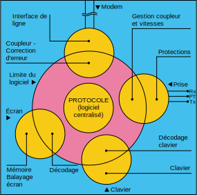
Architecture du Minitel en standard Télétel
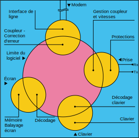
Architecture du Minitel en standard Téléinformatique
L'utilisation du Minitel 1B
Le Minitel 1B peut être utilisé de trois façons différentes :
comme Minitel 1 classique.
comme terminal téléinformatique permettant :
son intégration au sein d'un réseau téléinformatique traditionnel ;
la consultation de services et banques de données en France et à l'étranger ;
l'utilisation à partir de l'étranger ;
le départ de poste de travail au domicile des employés d'une entreprise ;
son utilisation en terminal transportable pour des agents itinérants.
en Mixte, mode particulièrement riche en applications, offrant la possibilité de combiner le standard Télétel et le standard Téléinformatique.
De plus, et c'est l'intérêt du Minitel 1B, il est possible de changer de mode ou de standard à l'intérieur d'une même application, dans l'état local ou connecté, aussi bien à l'initiative d'un périphérique, de l'utilisateur que du réseau vidéotex de façon totalement transparente.
Le standard Télétel apporte :
les touches de fonction du Minitel pour le confort d'utilisation.
le Protocole du Minitel pour la gestion évoluée des périphériques, le retournement du modem et la procédure de correction d'erreur.
le mode semi-graphique.
Le standard Téléinformatique offre quant à lui :
l'affichage en 80 colonnes.
l'utilisation de toutes les possibilités du clavier AZERTY et d'un codage des touches de fonction identique aux terminaux professionnels.
Le mode Mixte permet le développement de deux familles d'applications :
la première concerne les applications n'ayant pu se mettre en place jusqu'alors compte tenu de la contrainte de l'affichage en 40 colonnes, en particulier dans le domaine professionnel où l'affichage en 80 colonnes est le plus souvent utilisé. Au cours d'une même session, ces applications téléinformatiques peuvent éventuellement bénéficier des possibilités graphiques et alphamosaïques du 40 colonnes vidéotex (logo, carte, schéma de fonctionnement).
la seconde concerne les applications Télétel existantes qui peuvent bénéficier de l'affichage en 80 colonnes (en particulier pour les tableaux), l'ossature de l'application restant identique.
15
Le tableau suivant précise pour chaque module les différents modes de fonctionnement possibles en fonction du standard.
Standard du Minitel avec touches de fonction Télétel (Suite, Retour...), mode majuscule par défaut.
- 1200/75 bds - V23 CCITT retournable - Possibilité d'activer la procédure de correction d'erreur.
Echanges bidirectionnels simultanés.
Actif
Mode Mixte
- 80 colonnes ASCII norme ISO 6429 (jeu français ou américain) ; mode rouleau ou mode page.
"Standard" ASCII avec Ctrl, Esc, touches de gestion du curseur et d'édition, mode minuscule par défaut + touches de fonction Télétel.
Standard Téléinformatique ASCII
- 80 colonnes ASCII norme ISO 6429 (jeu français ou américain) ; mode rouleau. - Possibilité de 40 colonnes ASCII.
"Standard" ASCII avec Ctrl, Esc, touches de gestion du curseur et d'édition, mode minuscule par défaut. Les touches fonction Télétel engendrent alors des séquences autres qu'en mode Vidéotex ou Mixte (le codage correspond aux touches de fonction d'un terminal téléinformatique).
- 1200/75 bds - V23 CCITT - La procédure de correction d'erreur et la fonction modem retourné peuvent être utilisées si leur activation a eu lieu avant le basculement du terminal au standard téléinformatique.
- Terminal connecté à la ligne téléphonique : échange unidirectionnel (interface de sortie pour imprimante). - Terminal en mode local : échanges bidirectionnels simultanés.
Non actif
Nouveautés
Successeur du Minitel 1, le 1B apporte, outre les deux standards, les améliorations suivantes :
la copie d'écran, pour une imprimante branchée sur la prise péri-informatique déclenchée par l'utilisateur ou par une séquence venant de la base de données ou du périphérique.
Cette copie de l'écran est disponible quel que soit le standard, Téletel ou Téléinformatique ;
la détection de l'indicateur d'un signal d'appel en instance (IAI), émis par certains centraux téléphoniques.
Cet indicateur permet à l'utilisateur connecté sur une base de données de savoir qu'un correspondant cherche à l'appeler. L'utilisateur est alors averti par un message affiché sur son écran, accompagné d'un bref signal sonore ;
un clavier complet avec touches de gestion du curseur et d'édition, touche "Ctrl", touche "Esc" et une touche "Fnct" permettant de modifier la configuration du terminal ou d'activer des applications particulières ;
l'exploitation du format d'écran en 80 colonnes, en mode Mixte et en standard Téléinformatique ;
la possibilité de se connecter directement sur un concentrateur de type PAD-X3 ;
la possibilité d'alimenter un ou plusieurs périphériques grâce à la prise péri-informatique qui dispose d'une sortie de puissance sur l'une de ses broches.
Cette documentation s'applique tout d'abord à décrire toutes les caractéristiques communes aux deux standards (Partie 1) avant de préciser les spécificités propres aux modes Vidéotex et Mixte (Partie 2) et au standard Téléinformatique (Partie 3).
16
17
Caractéristiques communes aux deux standards : Télétel et Téléinformatique
1819
Présentation générale
20
Caractéristiques générales
Destiné à une large diffusion, tant auprès du grand public que dans les secteurs professionnel et institutionnel pour l'accès à l'Annuaire Electronique, aux services vidéotex Télétel et à des services informatiques, le Minitel répond à des critères techniques et ergonomiques qui lui assurent une grande facilité d'utilisation.
Pour accéder à ces différents services, l'utilisateur dispose d'un poste téléphonique traditionnel et du Minitel 1B proprement dit qui regroupe tous les éléments constituant un terminal téléinformatique : écran de visualisation noir et blanc, clavier alphanumérique, modem, alimentation, prise pour la connexion et l'alimentation de divers périphériques.
Il peut être utilisé :
en local, où il peut servir de "console de visualisation" pour des applications informatiques ;
en connecté, où il permet des échanges téléinformatiques entre tout lieu disposant du téléphone et une majorité de bases de données.
L'encombrement est réduit au maximum compte tenu des dimensions de l'écran. Le Minitel peut facilement être déplacé, grâce à une poignée prévue à cet effet.
Après installation, une maintenance simple est possible sur place. La durée de vie dans des conditions normales d'utilisation et d'installation est supérieure à 10 ans pour tous les éléments constituant l'équipement.
Entre +5 °C et +40 °C le terminal doit parfaitement fonctionner ; entre -5 °C et +5 °C ou entre +40 °C et +45 °C il peut présenter des anomalies sans conséquences sur l'électronique de l'appareil.
Raccordements
Réseau électrique
Le Minitel se raccorde à l'installation électrique au moyen d'une fiche de prise de courant normalisée sans terre de protection. La longueur du cordon est de trois mètres.
La tension d'utilisation est de 220 V ±10% alternative, entre +5 °C et +40°C, à la fréquence de 50 Hz ±1 Hz. Un fusible libère l'alimentation en cas de court-circuit dans l'appareil, mais n'est pas accessible à l'usager.
La puissance consommée est inférieure à 45W, même lorsque l'alimentation externe de la prise péri-informatique débite son courant maximal.
Aucune perturbation n'est perceptible à l'usager lors de micro-coupures secteur ne dépassant pas 100ms avec une fréquence de récurrence de 1 seconde, sans débit sur la prise péri-informatique. Avec un débit maximal sur cette prise, le terminal supporte sans perturbation des micro-coupures secteur ne dépassant pas 60ms avec la même fréquence de récurrence.
Réseau téléphonique
Le Minitel se connecte directement sur la ligne téléphonique (ligne principale d'abonné ou autocommutateur privé) à l'aide d'une fiche gigogne prolongée par un cordon approprié d'une longueur de 3 mètres.
Le poste téléphonique associé au Minitel se raccorde sur le conjoncteur gigogne. Lorsque le terminal est hors tension ou lorsqu'il n'est pas connecté à une base de données, les 8 fils du conjoncteur de l'abonné sur lequel est raccordé le Minitel sont intégralement retransmis vers le poste téléphonique. En l'absence d'alimentation ou de connexion à une base de données, la ligne téléphonique est donc disponible pour le poste téléphonique.
21
L'affectation de la ligne téléphonique principale au Minitel s'effectue par une intervention manuelle (touche du clavier) ou sur une commande de la prise péri-informatique.
La libération de la ligne téléphonique principale par le Minitel s'effectue soit :
par une intervention manuelle (touche du clavier) ;
par une absence de porteuse détectée par le modem ;
Sur commande en provenance du réseau vidéotex ou d'un périphérique ;
Sur disparition de l'alimentation.
Equipements périphériques
Le Minitel dispose d'une prise extérieure dite prise péri-informatique de type DIN 5 broches, permettant le raccordement de périphériques. Cette prise dispose, sauf sur quelques appareils, d'une sortie énergie permettant d'alimenter un ou plusieurs périphériques.
Environnement et sécurité d'utilisation
Perturbations radio-électriques
Le Minitel respecte les spécifications du CNET relatives à l'émission de parasites par conduction ou rayonnement et relatives à la susceptibilité aux phénomènes extérieurs.
Sécurité de l'utilisateur
En ce qui concerne la protection de l'utilisateur, le terminal respecte la norme NEC 92-130.
Aucune intervention de l'utilisateur (outre la manipulation du clavier, de la commande de luminosité, et du bouton marche-arrêt) n'est imposée pour le bon fonctionnement de l'appareil.
Le terminal, dans son ensemble, est protégé contre l'introduction accidentelle ou volontaire de petits objets métalliques (épingles, vis, aiguilles à tricoter...).
Le refroidissement s'effectue sans ventilateur et aucune partie externe de l'appareil ne dépasse 40 °C lorsque la température ambiante est égale à 20 °C.
Le Minitel est conçu de façon à prévoir un changement rapide et simple des cordons secteur et téléphonique si ces derniers étaient cassés ou détériorés.
Type de Minitel
Il existe plusieurs types de Minitel, dont les Minitel 1 et 1B, sans poste téléphonique intégré, et le Minitel 10 avec poste téléphonique électronique intégré, permettant notamment la gestion d'un répertoire téléphonique et l'appel automatique d'un abonné ayant fait l'objet d'une recherche annuaire.
Les présentes spécifications d'utilisation concernent le Minitel 1B. Les différents Minitel 1B sont repérés :
par une plaque au dos de l'appareil, précisant le constructeur, le numéro de série, le type et la version logicielle ;
par une zone d'identification contenue dans la mémoire de programme (ROM).
Cette zone contient trois octets donnant respectivement :
le constructeur du Minitel ;
le type du Minitel ;
la version du logiciel.
Dans ce qui suit on distinguera, si besoin, les versions suivantes :
de Cu2 à Cu3 compris : Minitel 1B TELIC avec circuit de visualisation appelé VGP2. Pas d'alimentation externe disponible sur la prise péri-informatique.
22Cu4 : Minitel 1B TELIC ou MATRA avec circuit de visualisation appelé VGP2. Pas d'alimentation externe disponible sur la prise péri-informatique.
Cu5, Cu; et Cu < : Minitel 1B TELIC et MATRA avec circuit de visualisation appelé VGP5 et alimentation externe disponible sur la prise péri-informatique.
Bu0 et suivants : Minitel 1B RTIC avec circuit de visualisation VGP5 et alimentation externe disponible sur la prise péri-informatique.
Remarque
La différence entre le circuit de visualisation VGP2 et le circuit VGP5 concerne le jeu de caractères interne disponible.
Il est aisé de repérer un Minitel disposant du composant VGP5 grâce :
aux symboles accolades, fermantes et ouvrantes, sérigraphiés, dans ce cas, au-dessus des touches "Répétition" et "Envoi" ;
aux symboles Œ et β sérigraphiés au-dessus des touches "Retour" et "Suite" ;
au symbole § sérigraphié au-dessus de la touche "Correction"
23
Mise en œuvre du Minitel
24
Exploitation
L'exploitation de base du Minitel comporte plusieurs phases :
la mise sous tension, qui conduit à l'état local ;
la connexion, qui fait passer à l'état connecté ;
la déconnexion, qui se traduit par un retour à l'état local ;
la mise hors tension.
Le système d'entrée est un clavier à 65 touches, dont 2 touches équivalentes. C'est l'outil d'interactivité entre l'utilisateur et la base de données.
Ce clavier permet aussi, grâce à la touche "Fnct" de modifier la configuration du terminal et d'activer des applications particulières comme la copie d'écran par exemple.
Un potentiomètre, situé à l'arrière de l'appareil, permet de régler le niveau de luminosité de l'écran.
État local
Après branchement sur les réseaux électrique et téléphonique (partie 1, chapitre 1, paragraphe 2), la mise sous tension du Minitel s'effectue par l'enfoncement d'un bouton-poussoir situé en bas et à droite de la face avant de l'appareil. Dès lors, un indicateur lumineux visible en haut et à droite de l'écran représentant un "F" signale à l'utilisateur que le terminal est dans l'état local. Cette lettre est en noir sur fond blanc en mode Vidéotex et en standard Téléinformatique 40 colonnes, et en blanc sur fond noir dans les autres modes.
Dans cet état, toute action sur une touche alphabétique ou numérique du clavier provoque l'apparition du symbole correspondant sur l'écran. L'affichage des informations se réalise moins de 10 secondes après la mise sous tension dans des conditions normales.
Etat connecté
Moins de 500ms après la mise sous tension, le Minitel peut se connecter au réseau vidéotex ou à une base de données.
Pour se connecter, l'utilisateur compose sur le poste téléphonique associé au Minitel le numéro d'appel du réseau vidéotex ou d'une base de données puis, après audition d'une tonalité continue caractéristique (porteuse à 1300Hz ou à 2100Hz), enfonce la touche "Connexion/Fin." Dès l'enfoncement de cette touche, la lettre "F" est remplacée par la lettre "C" en haut et à droite de l'écran. Le combiné du poste téléphonique peut alors être raccroché.
L'usager peut enfoncer la touche "Connexion/Fin" dès la fin de la numérotation téléphonique, la recherche de porteuse étant assurée par le logiciel.
Pendant cette phase, le "C" clignote ; dès que la connexion est effectuée le "C" devient fixe. Pour les terminaux TELIC et MATRA le "C" ne clignote qu'en mode Vidéotex.
Déconnexion
La déconnexion peut être commandée par l'usager en enfonçant deux fois consécutivement la touche "Connexion/Fin." Le Minitel est alors déconnecté du réseau vidéotex ou de la base de données et revient à l'état local. La lettre "F" remplace la lettre "C" sur l'écran, en haut à droite.
Remarque
Un appui unique sur la touche "Connexion/Fin" provoque l'émission d'une séquence que le serveur ou le réseau vidéotex peut interpréter de deux façons :
déconnexion du service et retour à la page d'accueil du réseau vidéotex ;
déconnexion générale (cas de l'annuaire électronique).
Si le terminal n'a pas reçu d'ordre d'effacement, la dernière page-écran consultée reste visualisée après la déconnexion.
25
Arrêt
Le Minitel peut être mis hors tension à tout moment sans aucune contrainte à l'aide du bouton marche-arrêt.
Procédures de contrôle de bon fonctionnement
Contrôle préliminaire
Vérifier que la lettre "F" s'affiche sur l'écran après avoir mis le terminal sous tension. L'affichage est en noir sur fond blanc en mode Vidéotex, et en blanc sur fond noir dans les autres modes.
l'enfoncement d'une touche permettant d'émettre un caractère visualisable doit provoquer l'affichage de ce caractère sur une même rangée ;
l'enfoncement de la touche "Connexion/Fin" doit provoquer le remplacement momentané de la lettre "F" par la lettre "C" en noir sur fond blanc clignotante en mode Vidéotex et en blanc sur fond noir clignotante (Minitel RTIC) ou fixe (Minitel TELIC ou MATRA) dans les autres modes, pendant 40 secondes, en haut et à droite de l'écran. On peut interrompre cet affichage en appuyant de nouveau sur la touche "Connexion/Fin" ;
l'enfoncement des touches de fonction employées seules ne provoque pas d'affichage, sauf dans le mode Mixte et dans le standard Téléinformatique.
Test de connexion
Après appel d'un service, vérifier que l'enfoncement de la touche "Connexion/Fin" sur réception de la porteuse provoque le remplacement de la lettre "F" par la lettre "C; puis l'affichage de la page d'accueil du service.
2627
L'écran
28
Caractéristiques générales
L'écran assure la visualisation des informations. Il constitue un ensemble physique et logique comprenant le tube (et son électronique associée), l'automate de visualisation et le logiciel de décodage. Le logiciel diffère en fonction du standard ; le décodage est alors soit de type vidéotex, soit de type téléinformatique (norme ISO 6429).
L'écran
La visualisation est réalisée par un tube noir et blanc à rayons cathodiques de 23 cm de diagonale (9 pouces) assurant une bonne lisibilité, quelle que soit l'information affichée, pour un opérateur utilisant son terminal le plus souvent en position assise, de face, et à une distance inférieure à un mètre.
Les caractéristiques de l'écran et de l'électronique associée sont adaptées aux conditions particulières d'utilisation : fréquentes mises en marche, mais courte durée d'utilisation. Toutefois, le tube peut être marqué après une visualisation continue d'une même image pendant plusieurs heures consécutives ; c'est pourquoi les terminaux sont munis d'un dispositif de mise en veille automatique de l'écran en l'absence de données émanant du modem, du clavier ou de la prise pendant quelques minutes.
Un réglage de la brillance est accessible à l'utilisateur pour s'adapter à la lumière ambiante. La plage de réglage est limitée afin qu'il soit toujours possible de lire la lettre "F" en vidéo inversée, affichée en haut et à droite de l'écran lors de la mise en marche du Minitel. Tous les autres réglages sont effectués en usine.
L'électronique de visualisation associée au tube comprend : l'interface vidéo, le balayage trame, la génération des signaux lignes, le circuit de déviation avec ses éléments de commandes et un transformateur générant la THT et les tensions auxiliaires sur le tube.
L'automate de visualisation
L'automate de visualisation se compose d'une mémoire de page et d'un processeur de visualisation (VGP2 ou VGP5) incluant un générateur de 124 ou 128 symboles ou caractères alphanumériques et de 128 formes semi-graphiques.
La mémoire de page est organisée différemment et a une capacité de 2 ou 3K octets suivant le mode de fonctionnement :
en mode Vidéotex et en mode Téléinformatique 40 colonnes, chaque mot binaire de 16 bits correspond à un des 1000 (40 x 25) emplacements de caractères possibles sur l'écran.
en mode Mixte et Téléinformatique 80 colonnes, chaque mot binaire de 12 bits correspond à un des 2000 (25 x 80) emplacements de caractères possibles sur l'écran.
Cette mémoire est mise à jour en permanence par le logiciel de décodage courant et est lue 50 fois par seconde par le processeur de visualisation.
Le processeur de visualisation est du type mosaïque ; il combine et synchronise les informations issues de la mémoire de page et de son générateur de caractère, pour élaborer les signaux vidéo RVB qui sont eux-mêmes traités pour être transformés en un signal de luminance à huit niveaux de gris maximum. Il commande également le balayage non entrelacé du tube à rayons cathodiques.
Le logiciel de décodage
Le logiciel de décodage est contenu dans la mémoire programme ROM du microprocesseur. Ce logiciel interprète les codes de 7 bits reçus du réseau, de la prise ou du clavier, pour engendrer des mots de 16 bits (40 colonnes) ou 12 bits (80 colonnes) qui sont chargés dans la mémoire de page. L'affichage sur l'écran disparaît, sans perte du contenu de la mémoire de page, après une temporisation de 4 minutes environ. L'affichage est restitué dès que le module écran reçoit un caractère ou que l'utilisateur appuie sur une touche du clavier.
29
Caractéristiques de visualisation
Glossaire
ligne : une ligne est l'unité de balayage horizontal de l'image ;
rangée (ou rangée de caractères): une rangée de caractères est visualisée au moyen de dix lignes de balayage. Le terme rangée est utilisé pour éviter la confusion avec le vocable ligne ;
page ou écran : ensemble de rangées remplissant l'écran de visualisation ;
caractère : c'est un signe visualisable. Il est défini par un ensemble de points appartenant à une matrice. Une partie de cette matrice décrit sa forme, et l'ensemble complémentaire des points constitue le fond de l'écran ;
emplacement de caractère : c'est le plus petit emplacement unitaire de l'écran pouvant contenir un caractère. Il lui correspond un mot de 16 bits de la mémoire de page en 40 colonnes, et un mot de 12 bits de la mémoire de page en 80 colonnes.
Formats
Formats de l'écran
L'écran dispose de deux formats possibles : le format 40 colonnes et le format 80 colonnes.
format 40 colonnes.
L'écran comporte 25 rangées numérotées de 00 à 24. Chaque rangée renferme 40 emplacements de caractères numérotés de 1 à 40. Une page contient donc 1000 emplacements de caractères.
format 80 colonnes.
L'écran comporte 25 rangées numérotées de 00 à 24. Chaque rangée renferme 80 emplacements de caractères numérotés de 1 à 80. Une page contient donc 2 000 emplacements de caractères.
Remarque
La rangée 00 est une rangée de service réservée aux messages envoyés par le réseau. Des commandes spéciales permettent d'y accéder.
Formats de caractère
Le générateur de caractères est intégré dans le processeur de visualisation.
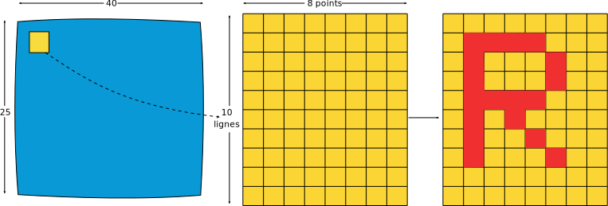
Structure de l'écran en 40 colonnes30
Chaque emplacement de caractère élémentaire s'inscrit dans une matrice jointive composée horizontalement de 8 points, sur chacune des 10 lignes consécutives d'une rangée, lorsque l'écran est en format 40 colonnes. Un caractère est en général représenté dans une matrice de 5 points sur 7 lignes.
Cette matrice jointive est composée horizontalement de 6 points sur 10 lignes consécutives lorsque l'écran est en format 80 colonnes. Un caractère est en général représenté dans une matrice de 5 points par 7 lignes.
Dans cette matrice, les points n'appartenant pas au caractère appartiennent au fond de l'écran. Certains caractères occupent entièrement la largeur ou la hauteur de l'emplacement de caractère. C'est le cas des barres horizontales ou verticales, des diagonales et, partiellement, des flèches (jointes à l'extrémité opposée à la pointe). Ces caractères sont dits jointifs. Notons que les flèches sont alignées avec les barres médianes horizontales et verticales afin d'en permettre la jonction. Lorsque le format de l'écran est de 80 colonnes, la barre verticale droite ne peut être représentée. Les caractères semi-graphiques jointifs (voir partie 1, chapitre 3, paragraphe 2.3.2.) occupent également tout l'emplacement de caractère.
Ensemble des caractères visualisables
Le Minitel peut visualiser deux ensembles de caractères : un ensemble alphabétique et un ensemble semi-graphique.
Ensemble alphabétique
L'ensemble alphabétique comprend 128 caractères alphabétiques, numériques et graphiques, se répartissant :
pour les terminaux équipés du composant VGP5, en :
26 lettres majuscules : (A - Z)
26 lettres minuscules : (a - z)
1 ligature majuscule : Œ
15 minuscules accentuées: à, è, ù, é, â, ê, î, ô, û, ä, ë, ï, ö, ü, ç.
Les possibilités d'affichage de ces caractères dépendent du mode ou du standard dans lequel est le Minitel.
Ensemble semi-graphique
Ce jeu de caractères n'est disponible que lorsque le Minitel est en standard Télétel, mode Vidéotex.
L'ensemble semi-graphique comporte 128 formes mosaïques (64 jointes et 64 disjointes).
Chaque forme est obtenue en divisant la matrice (8 x 10) en 6 cases. Les points d'une case appartiennent soit au caractère lui-même, soit au fond de l'écran, définissant ainsi les 128 formes différentes possibles. Chaque caractère peut être disjoint : 2 barres verticales et 3 barres horizontales appartenant au fond de l'écran sont alors visualisées.
semi-graphique normal
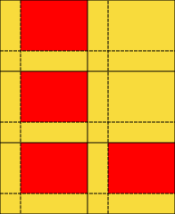
semi-graphique disjoint
Attributs de visualisation
Définition
Un caractère est déterminé par sa forme, mais aussi par sa présentation définie par un ou plusieurs attributs de visualisation.
Liste des attributs
La liste des attributs disponibles varie en fonction du standard choisi.
Standard Télétel mode Vidéotex
Les attributs possibles sont :
le niveau de gris des points appartenant au caractère (8 possibles) ;
32le niveau de gris des points appartenant au fond (8 possibles) ;
la taille de caractère, du simple au double pour la hauteur, la largeur et la taille ;
l'attribut positif/négatif appelé aussi inversion de fond ;
le clignotement ;
le masquage ;
le lignage : souligné pour des caractères alphanumériques et disjoint pour des caractères semi-graphiques.
En standard Téléinformatique format 40 colonnes, et en rangée 00 dans le format 80 colonnes, aucun des quatre attributs précédents n'est disponible pour le réseau vidéotex.
Les niveaux de gris
Conformément aux normes, 8 couleurs de base sont définies en standard Télétel mode Vidéotex : noir, blanc, bleu, vert, rouge, jaune, magenta et cyan. Cependant le tube cathodique du Minitel étant en noir et blanc, ces couleurs sont remplacées par des niveaux de gris.
Les correspondances, entre couleur et niveau de gris sont définies comme suit :
Noir
0%
N
Vert
70%
L4
Bleu
40%
L1
Cyan
80%
L5
Rouge
50%
L2
Jaune
90%
L6
Magenta
60%
L3
Blanc
100%
B
Les pourcentages sont exprimés par rapport à l'amplitude de luminance. Ils sont donnés à titre indicatif car ils dépendent des caractéristiques du tube cathodique. Le pourtour de l'écran est noir. Dans la suite de ce document, les niveaux de gris seront désignés par la couleur correspondante.
En standard Télétel mode Mixte ou en standard Téléinformatique, le niveau adopté est de 80% pour les Minitel de type Cu2 à Cu et de 60% pour les autres terminaux. La surintensité correspond toujours au blanc (100%).
La rangée 00
Cette rangée est une rangée dite de service ; elle est décomposée en deux zones :
la zone 1 (colonne 1 à 36 en 40 colonnes, et 1 à 72 en 80 colonnes) est réservée aux messages en provenance du réseau vidéotex indépendamment du service, comme, par exemple, le mot "appel" signalant un appel téléphonique en instance (détection de l'IAI) ;
la zone 2 (colonne 37 à 40 en 40 colonnes, et 73 à 80 en 80 colonnes) est utilisée par le terminal lui-même pour préciser un état particulier.
Lorsque l'écran est dans le format 40 colonnes Vidéotex, on dispose de :
en colonne 37: lettre "I" en noir sur fond blanc indiquant l'état inhibé de la prise péri-informatique ;
en colonne 38: lettre "R"" en blanc sur fond noir indiquant qu'une copie d'écran est en cours ;
en colonne 39: lettre "F" ou "C" en noir sur fond blanc indiquant l'état local ou connecté. Le "C" clignote lorsque le terminal est en phase de connexion. Le "f" est en minuscule lorsque le modem est dans l'état opposé. (partie 1 chapitre 4. paragraphe 3).
33
Lorsque l'écran est dans le format 80 colonnes, on retrouve ces mêmes indicateurs "I," "R," "F," ou "C" tous écrits en blanc sur fond noir, aux positions suivantes :
en colonne 78: lettre "I" ;
en colonne 75: lettre "R" ;
en colonne 77: lettre "F" ou "C" (et "f" dans l'état opposé du modem).
En phase de connexion automatique le "C"" clignote sur les terminaux RTIC. Le décodage en rangée 00 est toujours du type vidéotex quel que soit le standard ou le mode actif.
Le curseur
Le curseur précise la position courante d'écriture sur l'écran. Il ne masque ni ne détruit le caractère préalablement affiché à l'écran, même s'il se déplace, et il est invisible en veille écran.
La forme du curseur est variable en fonction du standard et du mode courant :
pavé clignotant en standard Télétel mode Vidéotex; le curseur peut être désactivé sur commande du serveur, du périphérique ou de l'utilisateur dans certaines configurations du clavier ;
Souligné clignotant en standard Télétel mode Mixte et en standard Téléinformatique ; il est toujours actif et ne peut être désactivé (sauf en rangée 00).
La copie d'écran
Quel que soit le standard actif (Télétel ou Téléinformatique) ou le format d'écran (40 ou 80 colonnes), il est possible de copier l'écran du terminal sur une imprimante branchée sur la prise péri-informatique.
Pour cela le logiciel relit toute la mémoire de page et transforme son contenu en codes compréhensibles pour l'imprimante.
Deux jeux de caractères de type ASCII sont disponibles: le jeu américain et le jeu français pour l'accentuation.
Quel que soit le mode de fonctionnement du terminal, les commandes de copie d'écran sont :
Fnct I + A si l'imprimante dispose du jeu américain ;
Fnct I + F si l'imprimante dispose du jeu français.
Mode rouleau - mode page
En mode rouleau, une commande de déplacement du curseur vers le bas (réception du code 0x0A ou séquence équivalente) provoque un déplacement de l'écran vers le haut lorsque le curseur est positionné en rangée 24.
De même, une commande de déplacement du curseur vers le haut (réception du code 0x0B ou séquence équivalente) provoque un déplacement de l'écran vers le bas lorsque le curseur est positionné en rangée 01.
Les déplacements de l'écran ne concernent que les rangées 01 à 24 et n'affectent pas la rangée 00.
En mode page, les commandes de déplacement du curseur vers le bas, lorsque celui-ci se trouve en rangée 24, positionnent le curseur en rangée 01 en conservant la même colonne.
De même, les commandes de déplacement du curseur vers le haut, lorsque celui-ci se trouve en rangée O1, positionnent le curseur en rangée 24 en conservant la même colonne.
Quel que soit le standard de fonctionnement du Minitel, les commandes disponibles au clavier sont :
Fnct E + P pour un fonctionnement de l'écran en mode page ;
Fnct E + R pour un fonctionnement de l'écran en mode rouleau.
3435
Le clavier
36
Caractéristiques générales
Le module clavier est l'ensemble physique et logique constituant le système de saisie manuel du Minitel. Il se compose d'un ensemble de 65 touches dont 2 équivalentes et d'un logiciel associé.
Ce logiciel associé assure les fonctions suivantes :
la scrutation des touches ;
le codage correspondant aux touches enfoncées. Pendant l'émission des codes, le clavier n'est pas inhibé et l'utilisateur peut continuer la frappe de son message ;
le traitement des rebonds.
Aucune commande n'impose l'action de plus de deux touches simultanément, à l'exception de celles nécessitant l'utilisation de la touche spéciale, de la touche "Ctrl" ou de la touche "Fnct." L'enfoncement simultané de deux touches (ou plus) ne provoque aucune action. Cependant, une de ces touches sera prise en compte dès que les autres seront relevées.
L'ensemble des caractéristiques du clavier est prévu pour rester constant pendant 10⁶ manœuvres. En outre, le clavier répond à des critères précis d'ergonomie et d'étanchéité. Il peut être aisément changé.
Les touches
Chaque enfoncement d'une touche du clavier engendre un code ou une séquence de codes correspondant au caractère ou à la commande inscrit sur cette touche.
Les touches du clavier peuvent être classées pour l'utilisateur en six catégories : touches alphabétiques, touches de ponctuation, touches numériques, touches de fonction, touches combinables, touches de gestion du curseur et d'édition.
Il existe une touche marquée "Fnct" qui, combinée avec les autres touches, permet de modifier l'état du terminal ou d'activer certaines applications. (3 photos du clavier TELIC — RTIC — MATRA sur la page suivante).
Touches alphabétiques et espace
(partie 1 sur les photos)
Ces touches sont rangées dans l'ordre AZERTY. Elles correspondent aux 26 lettres majuscules et minuscules.
Utilisées en association avec la touche sans inscription (appelée touche spéciale "TS"), elles correspondent aux 26 lettres minuscules en mode Vidéotex et aux 26 lettres majuscules, en mode Mixte ou Téléinformatique.
Utilisées avec la touche "Ctrl" elles peuvent permettre l'envoi de caractères de contrôle du jeu C0 (26 codes sur 32).
La touche "Espace" correspond à un emplacement vide dans la couleur du fond de l'écran.
Touches de ponctuation
(partie 2 sur les photos)
Ces touches correspondent aux signes de ponctuation suivants : , . ' ; - : ?
Utilisées en association avec la touche spéciale, elles correspondent à des symboles particuliers sérigraphiés en jaune : < > @ + = * /
@ devient "à" en mode Mixte ou en standard Téléinformatique lorsque le jeu de caractères français est actif.
Utilisées en association avec la touche "Ctrl" elles complètent le jeu de contrôle C0.
37
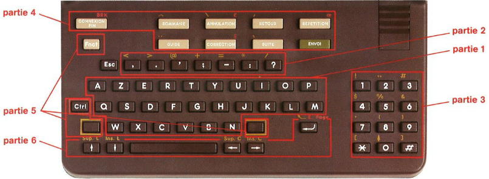
MATRA
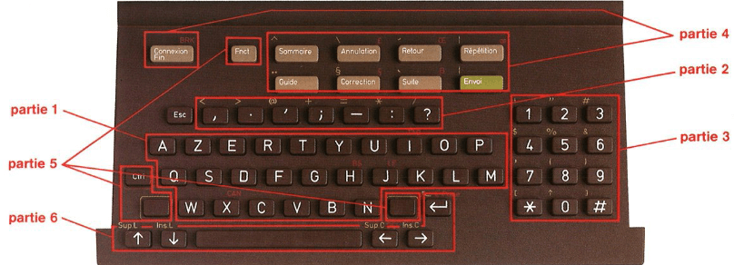
RTIC
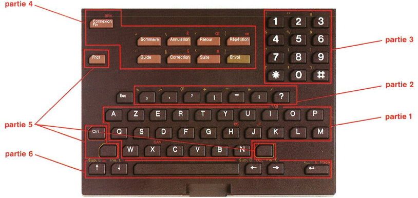
TELIC38
Touches numériques
(partie 3 sur les photos)
Les touches numériques correspondent aux chiffres indiqués sur chaque touche. Utilisées avec la touche spéciale ou la touche "Ctrl," elles correspondent à des symboles particuliers selon le tableau ci-dessous.
Touches numériquesutilisées avec
1
2
3
4
5
6
7
8
9
0
*
#*
Touche spéciale (symboles sérigraphiés en jaune)
!
"
#*
$
%
&
'
(
)
↑
[
]
Touche "Ctrl" Standard Télétel Mode Vidéotex
←
→
°
±
↓
Standard Téléinformatique ou Mode Mixte jeu français
é
ù
è
"
'
jeu américain (composant VGP5)
{
}
~
'
jeu américain (composant VGP2)
(
)
'
Remarque
* En mode Mixte et en standart Téléinformatique, la touche # correspond au symbole £ lorsque le jeu français est actif.
Touches de fonction
(partie 4 sur les photos)
Les touches de fonction sont d'une forme et d'une couleur différente des autres touches, afin de les mettre en valeur. Cette mise en valeur est accentuée pour les touches"Connexion/Fin" et "Envoi" par leur position sur le clavier. La touche "Envoi" est verte.
Standard Télétel
Liste des touches de fonction :
Connexion/Fin ;
Envoi ;
Répétition ;
Sommaire ;
Guide ;
Correction ;
Annulation ;
Suite ;
Retour.
Usage des touches de fonction employées seules ou précédées de la touche *.
L'usage des touches de fonction est décrit précisément dans le document "Recommandations aux partenaires Télétel - Utilisation des touches de fonction du Minitel" édité par la Direction Générale des Télécommunications.
La signification des touches de fonction dépend du service interrogé. Les utilisations recommandées sont résumées dans le tableau ci-contre :
Les séquences émises par les touches de fonction figurent dans le tableau du paragraphe 6 du chapitre 3 de la partie 2. Ces séquences varient si le Minitel est utilisé via un concentrateur PAD-X3.
Usage des touches de fonction combinées avec la touche spéciale.
Associées avec la touche spéciale, les touches de fonction listées ci-dessus39 permettent, en mode Vidéotex, l'envoi des accents aigu, grave, circonflexe, tréma et des caractères suivants :
TODO ╱ et §
(§ uniquement pour les Minitel ayant la sérigraphie correspondante sur le clavier, c'est-à-dire les terminaux équipés du composant VGP5, les autres affichant une barre basse).
Touches de fonction
Phase de saisie d'un formulaire
Phase de réponse du service (Consultation de pages écran)
Connexion/Fin
Accès au point d'accès Télétel
Envoi
Validation d'une ou plusieurs chaînes de caractères (1)
Sans obligation de remplir tous les champs
Répétition
Réaffichage de l'écran avec les informations déjà saisies
Réaffichage de l'écran tel qu'il avait été transmis par le serveur
* Répétition
Pas de signification
Réaffichage de l'écran avec prise en compte des mises à jour de la base de données intervenues depuis la transmission précédente
Sommaire
Accès au sommaire de la partie du service en cours de consultation
*Sommaire
Accès au sommaire du plus haut niveau dans le cas de sommaires hiérarchiques
Guide
Assistance à la consultation
*Guide
Appel d'opérateur d'assistance (2)
Correction
Effacement du caractère précédant le caractère courant Si le champ courant est vide ou en absence de champ :
Pas de signification
Retour à l'écran de la demande avec conservation des informations antérieures et possibilité de les corriger
Annulation
Effacement du champ courant Si le champ courant est vide ou en absence de champ :
Pas de signification
Annulation de la demande et possibilité d'en faire une autre par retour à la phase initiale de saisie
*Annulation
Annulation de tous les champs du formulaire et curseur positionné sur le premier caractère du premier champ
Pas de signification
Suite
Champ suivant
Page suivante
Retour
Champ précédent
Page précédente
*Suite
Page suivante
Document suivant
*Retour
Retour sur le premier champ de la page précédente. S'il n'y a pas de page précédente, retour au premier champ de la page courante
Retour au dernier choix
(1) Cas particulier : Appel d'un anémonique - Choix dans une liste.
(2) Non actuellement disponible sur le Service d'Accès Télétel.
40
Remarque
Les accents doivent être tapés avant la lettre concernée et n'apparaissent que lorsque cette lettre a été tapée.
La touche "Connexion/Fin" combinée avec la touche spéciale, provoque quel que soit l'état du terminal (mode Vidéotex ou Mixte), l'envoi vers la prise d'une séquence permettant de réinitialiser la chaîne de périphériques, conformément aux Spécifications Techniques d'Utilisation du Réseau Minitel (STURM)
Usage des touches de fonction combinées avec la touche "Ctrl".
Associées avec la touche "Ctrl, les touches de fonction permettent, en mode Vidéotex, l'envoi des caractères suivants :
Œ et β avec "Retour" et "Suite" (β uniquement pour les Minitel équipés du composant VGP5 et une barre basse pour les autres appareils) ;
œ, £ et ç avec "Répétition," "Annulation" et "Correction."
Les touches "Sommaire," "Guide" et "Envoi" associées avec "Ctrl" n'émettent aucun code.
Dans ce standard, les touches de fonction employées seules correspondent aux touches PF1 à PF4 et aux quatre autres touches de fonction d'un terminal téléinformatique programmé en mode application. Leur interprétation dépend du service avec lequel le Minitel est en relation.
Le tableau suivant donne les équivalences entre les touches :
Combinées avec la touche spéciale, elles permettent l'envoi des codes (partie 3, chapitre 3, paragraphe 2.1) correspondant aux caractères suivants :
jeu américain :
symboles { et } pour le circuit VGP5
symboles ( et ) pour le circuit VGP2
Symbole ╲
41jeu français : symboles è, é, ", ç, § (symbole §, uniquement pour les terminaux équipés de VGP5, les autres Minitel affichant une barre basse).
Combinées avec la touche "Ctrl" les touches de fonction permettent l'envoi des codes (voir partie 3, chapitre 3, paragraphe 2.1) correspondant aux caractères suivants :
jeu américain: rien
jeu français: symboles £ et ç
La touche "Connexion/Fin" permet :
en connecté, l'envoi d'une séquence particulière vers le modem ;
en local, combinée avec la touche spéciale, l'envoi d'une séquence particulière vers la prise ; dans les mêmes conditions elle n'a aucun effet en connecté ;
Ces touches doivent être combinées avec une où plusieurs autres touches. Seules elles n'émettent aucun code.
Touche spéciale (sans inscription mais cerclée de jaune) : enfoncée simultanément avec une autre touche, elle permet d'accéder aux lettres minuscules ou majuscules suivant le standard, aux accents et à des symboles particuliers sérigraphiés en jaune.
Touche "Ctrl" (cerclée de rouge) : enfoncée simultanément avec une autre touche elle permet d'accéder aux caractères de contrôle du jeu C0 et à des symboles ou séquences particuliers, sérigraphiés en rouge.
Touche "Fnct" : enfoncée simultanément avec un chiffre ou une lettre, cette touche initialise une commande devant toujours être complétée par un paramètre. Cette commande permet la programmation du Minitel, le changement du mode de fonctionnement et le déclenchement d'applications particulières. Les différentes possibilités sont décrites au paragraphe 3.3.
Touche "Esc"
Cette touche permet l'envoi du code correspondant au caractère de contrôle Escape.
Touches de gestion du curseur et d'édition
(partie 6 sur les photos)
Ces cinq touches, situées de part et d'autre de la "barre espace" permettent, seules ou en association avec la touche spéciale ou la touche "Ctrl," l'émission de séquences facilitant l'édition de texte :
déplacement du curseur dans les 4 directions ;
suppression de caractères ;
Suppression de rangées ;
début et fin du mode insertion de caractères ;
insertion de rangées ;
retour au début de rangée ou de page ;
effacement de caractère (fonction disponible en mode Mixte ou en standard Téléinformatique lorsque le Minitel est connecté et que le service le permet) ou de page.
Remarque
Prise en compte des touches lorsque l'écran est en veille: quelle que soit la touche enfoncée (exceptées la touche spéciale, les touches "Ctrl" et "Fnct," utilisées seules), elle réveille l'écran, mais seules sont interprétées la touche "Connexion/Fin" (utilisée seule ou combinée avec la touche spéciale et la touche "Ctrl") et les commandes utilisateur utilisant la touche "Fnct."
42
Fonctions particulières
Fonction répétition automatique des touches
L'appui sur certaines touches du clavier pendant un temps supérieur à 500ms provoque la répétition automatique en jointif du code, ou de la séquence, engendré par cette touche.
Lorsque la plus basse des vitesses d'émission des caractères vers la prise ou le modem est à 75 bauds, le cadencement d'émission de ces codes se fera à cette vitesse.
Lorsque la plus basse des vitesses d'émission est égale ou supérieure à 300 bauds, le cadencement d'émission se fera au maximum à cette vitesse.
La répétition automatique concerne :
les touches alphabétiques, de ponctuation, numériques, employées seules ou combinées avec la touche spéciale ou la touche "Ctrl" (sauf s'il y a envoi des caractères des colonnes 0 et 1) ;
les 4 touches de gestion du curseur employées seules ;
les combinaisons des touches de fonction avec la touche spéciale ou la touche "Ctrl permettant l'envoi des caractères visualisables.
Fonction Break
L'appui simultané sur la touche "Ctrl" et la touche "Connexion/Fin" correspond en connecté, quel que soit le mode de fonctionnement, à :
l'envoi sur la ligne d'un signal de 450 Hz permanent pendant un temps de 3,5s en mode normal (émission à 75 baudbs) ;
l'envoi sur la ligne d'un signal de 2100 Hz permanent pendant un temps de 3,5s en mode retourné (émission à 1200 bauds) ;
en local, la même action provoque l'émission pendant 3,5 s d'un 0 permanent sur la prise péri-informatique (excepté les versions Bu0 et Bu1 de RTIC), même lorsque la prise est inhibée pour les Minitel TELIC et MATRA.
Fonctions disponibles en utilisant "Fnct"
Les commandes utilisant la touche "Fnct" permettent :
de modifier l'état du Minitel et des différents modules.
Cet état est conservé tant que le terminal est sous tension excepté lors des changements de modes ou lors du basculement du standard Télétel au standard Téléinformatique et réciproquement;
d'activer une fonction particulière.
L'utilisateur doit, pour effectuer ses commandes, appuyer simultanément sur la touche "Fnct" et sur une touche alphabétique. La lettre appuyée correspond à la partie du terminal dont on veut modifier le fonctionnement.
Exemple :
si l'on veut modifier l'état du clavier, utiliser Fnct C ;
si l'on veut modifier l'état du modem, utiliser Fnct M.
Pour compléter la commande et la rendre effective, l'utilisateur doit relâcher la touche "Fnct" et la lettre enfoncée, puis taper un paramètre (lettre ou chiffre).
En cas d'erreur de manipulation, un signal sonore est émis.
Pour annuler une commande en cours, il suffit d'appuyer sur la touche "Annulation."
Les fonctions disponibles varient suivant le standard (Télétel ou Téléinformatique) ou le mode (Vidéotex ou Mixte).
Les paragraphes suivants donnent la liste des commandes communes aux deux standards. Les fonctions particulières à chaque standard seront détaillées dans les chapitres "Clavier" des parties 2 et 3.
43
Commandes de copie d'écran
Deux commandes sont possibles suivant le jeu de caractères disponible dans l'imprimante :
jeu américain: Fnct I + A
jeu français: Fnct I + F
Ces commandes provoquent l'affichage du caractère R en rangée 00. Celui-ci disparaît lorsque la copie est terminée.
Mode minuscules/majuscules
L'enfoncement des touches alphabétiques engendre les codes des lettres minuscules ou majuscules en fonction du standard choisi. La même action accompagnée de l'appui sur la touche spéciale engendre les codes des lettres majuscules ou minuscules.
Si on veut verrouiller l'émission en majuscule où en minuscule, la commande est : Fnct C + M.
Pour revenir à l'état initial, il faut retaper la même commande.
Mode page et mode rouleau de l'écran
Les commandes sont les suivantes :
mise en mode page : Fnct E + P
mise en mode rouleau : Fnct E + R
Demande de mise en route de la procédure de correction d'erreur
La commande est : Fnct M + C
Remarque
Cette commande est inactive dans le standard Téléinformatique. Si l'on veut néanmoins bénéficier de la procédure de correction d'erreur, il faut exécuter cette commande en standard Télétel, puis basculer le terminal en standard Téléinformatique.
Opposition du modem en local
Cette commande permet au modem d'émettre à 1200 bauds et de recevoir à 75 bauds, lorsque la connexion est établie.
La commande est : Fnct M + R.
La lettre "F" en rangée 00 est remplacée par un "f."
Pour revenir à l'état initial il suffit d'appuyer deux fois sur la touche "Connexion/Fin"
Inhibition de la prise péri-informatique et commandes de vitesse de la prise
Par une action sur le clavier, l'usager peut mettre le Minitel dans l'état prise inhibée (état PI). Cet état permet le fonctionnement d'une imprimante standard non vidéotex utilisée uniquement avec la fonction de copie d'écran. Un "I" en noir sur fond blanc en mode Vidéotex, en blanc sur fond noir dans les autres modes, affiché en rangée 00 pour avertir l'utilisateur, est conservé pendant tout l'état PI.
La commande est : Fnct P + I
Pour revenir à l'état initial, il faut retaper la même commande.
D'autre part, l'utilisateur peut à tout moment programmer la vitesse des échanges avec le périphérique quel que soit l'état du terminal grâce aux commandes suivantes :
Fnct P + 3 : vitesse 300-300 bauds
Fnct P + 1 : vitesse 1200-1200 bauds
Fnct P + 4 : vitesse 4800-4800 bauds
44
Commandes de passage d'un standard à l'autre
Ces commandes permettent de basculer du standard Télétel au standard Téléinformatique ou inversement :
Fnct T + A : passage en standard Téléinformatique avec jeu américain
Fnct T + F : passage en standard Téléinformatique avec jeu Français
Fnct T + V : passage en standard Télétel, mode Vidéotex.
Commande de l'écho local
En local, tous les caractères tapés au clavier vont s'afficher sur l'écran ; il est possible d'arrêter cet écho grâce à la commande: Fnct T + E.
En connecté, l'écho des caractères émis par le terminal est en général effectué par le serveur ou le point d'accès vidéotex. Si ce n'est pas le cas il est possible de rétablir à l'intérieur du terminal l'écho local en effectuant la même commande: Fnct T + E.
Le module modem regroupe tous les éléments physiques et logiques assurant la liaison du Minitel avec une base de données grâce à la ligne téléphonique. Ces éléments sont: l'interface de ligne, le modem proprement dit, le coupleur et le logiciel correspondant, le logiciel de procédure de correction d'erreur, de gestion du retournement et de détection de l'indicateur d'appel en instance (IA).
L'interface de ligne
L'interface de ligne assure l'adaptation du Minitel à la ligne téléphonique en remplissant les fonctions suivantes :
commutation de la ligne téléphonique : un relais assure la commutation de la ligne du poste téléphonique vers le modem du terminal. A l'inverse, lors de la déconnexion, le relais effectue la remise en circuit du poste téléphonique qui devient à nouveau disponible ;
protection contre les surtensions ;
régulation du courant de ligne : un système permet d'ajuster automatiquement, en régime établi, le courant de ligne entre 20 mA et 60 mA. La durée de la phase transitoire, définie comme le temps qui s'écoule entre le basculement de la ligne vers le modem et l'instant où le courant devient 60 mA, ne dépasse pas 5 secondes. Cependant, le modem est immédiatement utilisable en émission et en réception après ce basculement ;
adaptation d'impédance : l'impédance nominale est de 600 Ω avec un coefficient de désadaptation inférieur à 20% dans la bande téléphonique.
Le modem
Le modem assure les fonctions de modulation et de démodulation, c'est-à-dire la conversion de signaux numériques binaires (utilisés par le microprocesseur du Minitel) en signaux analogiques modulés (transmis sur la ligne téléphonique) et vice-versa. Le modem peut fonctionner aussi bien sur une liaison téléphonique que sur une liaison directe modem à modem, (le modem est utilisable sans "courant de ligne").
Le système de modulation est à saut de fréquence conformément à la recommandation V23 du CCITT. La rapidité de modulation autorise des échanges simultanés à 1200 bauds dans le sens réseau vidéotex vers Minitel et à 75 bauds dans l'autre sens. Ces vitesses d'échanges peuvent être inversées par retournement du modem.
Modulation
La modulation s'effectue par déplacement de fréquence sur réception série, bit à bit, des données émises par le microprocesseur (via le coupleur). En mode standard, le déplacement de fréquence correspond à une excursion de ±30 Hz, modulant une porteuse à 420 Hz.
Les rapidités de modulation et les fréquences caractéristiques de la voie d'émission sont résumées dans le tableau suivant :
état du modem
rapidité
bit à 0
bit à 1
porteuse
excursion
standard
75 bauds
450 Hz
390 Hz
420 Hz
30 Hz
retourné
1200 bauds
2100 Hz
1300 Hz
1700 Hz
400 Hz
Si les conditions de raccordement téléphonique d'un abonné empêchent toute transmission, un changement de composants permet d'ajuster la puissance reçue à l'extrémité de la ligne d'abonné par le centre de raccordement.
Cette solution permet de faire varier le niveau d'émission de ±8 dB par rapport à la valeur actuellement retenue de -10 dBm (±2 dB). En émission 471200 bauds le même dispositif permet de faire varier le niveau d'émission de ±4 dB, par rapport au réglage de base de -6 dBm (±2 dB) pour les modèles TELIC et MATRA, et de -10 dBm (±2 dB) pour le modèle RTIC.
Démodulation
La démodulation s'effectue par détection de déplacement de fréquence sur réception de caractères à 10 bits transmis par la ligne téléphonique. En mode standard, le déplacement de fréquence correspond à une excursion de ±400 Hz, modulant une porteuse à 1700 Hz.
Les rapidités de modulation et les fréquences caractéristiques de la voie de réception sont résumées dans le tableau suivant :
état du modem
rapidité
bit à 0
bit à 1
porteuse
excursion
standard
1200 bauds
2100 Hz
1300 Hz
1700 Hz
400 Hz
retourné
75 bauds
450 Hz
390 Hz
420 Hz
30 Hz
Le démodulateur possède un système de détection de porteuse (DP) qui indique, suivant le niveau du signal reçu, soit la présence de la porteuse si le niveau de réception en ligne est supérieur à -43 dBm, soit l'absence de cette porteuse si le niveau est inférieur à -48 dBm. De plus, l'hystérésis est toujours supérieure à 2dB. Le niveau maximum admissible en réception est de -6dBm.
Le coupleur
Au modem est associé un coupleur asynchrone, réalisé par logiciel, qui assure la sérialisation et la désérialisation aux rythmes et format choisis ainsi que la détection d'erreur de parité et de format.
En effet, la transmission des données sur la ligne téléphonique s'effectue en mode série asynchrone. Chaque caractère comprend :
Un bit "Start" (0) pour indiquer le début de l'information ;
un bit "Stop" (1) pour marquer sa fin ;
7 bits de donnée (le premier bit reçu est le bit de poids faible) ;
un bit de parité paire.
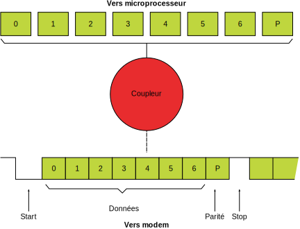
Ceci correspond à une vitesse de réception de 120 caractères par seconde à 1200 bauds et à une vitesse d'émission de 7,5 caractères par seconde à 75 bauds. Les vitesses sont inversées lors du retournement du modem.
48
Lorsqu'une erreur de parité ou une erreur de format est détectée par le coupleur, le Protocole (partie 2, chapitre 6) envoie le code SUB vers la base de données et transforme le caractère erroné en caractère SUB qui est alors transmis suivant les aiguillages et visualisé sur l'écran par un pavé remplissant l'emplacement de caractère correspondant avec les attributs courants quel que soit le standard.
La marge à l'émission est inférieure à +1% ou — 1%.
En réception, le coupleur reconnaît des caractères envoyés avec une marge inférieure ou égale à +2% ou —2%.
La procédure de correction d'erreur
Un logiciel de procédure de correction d'erreur (PCE) est implanté dans le module modem. Son but est de corriger les erreurs dues au réseau téléphonique pour la voie de réception à 1200 bauds et de permettre un affichage correct des informations reçues. Le fonctionnement de la PCE est décrit au paragraphe 5.
Remarque
S'il est impossible d'activer la procédure de correction d'erreur en standard Téléinformatique, on peut néanmoins l'activer avant la mise en oeuvre de ce standard et l'utiliser pour corriger les erreurs de transmission,
Lorsque la procédure de correction d'erreur est active le logiciel garantit que l'affichage des caractères n'est pas saccadé quel que soit le mode de fonctionnement.
La détection de l'indicateur d'appel en instance
Lorsque la vitesse de transmission est de 1200 bauds en réception et 75 bauds en émission, le logiciel du module modem permet la détection d'un signal particulier émis par le central téléphonique appelé indicateur d'appel en instance (IA) et prévient l'usager par un message affiché sur l'écran et un bref signal sonore ; ce fonctionnement est décrit au paragraphe 6 de ce chapitre.
Test du modem
Le module modem est toujours physiquement disponible : en effet, dans l'état local, le microprocesseur commande un bouclage de type 3 (Recommandation V54 du CCITT) du modulateur sur le démodulateur, excepté lorsque la prise péri-informatique est programmée à une vitesse supérieure à 1200 bauds (pour la version Bu0 de RTIC, le bouclage de type 3 est assuré, uniquement lorsque la prise est programmée à la vitesse de 300 bauds).
Dans ces conditions, le module modem réémet tout ce qu'il reçoit. Ainsi, dans l'état local, l'action sur une touche du clavier, autre qu'une touche de fonction, provoque la prise en compte en mode "écho" du symbole correspondant et sa visualisation sur l'écran.
Cette disposition permet à l'usager :
de se familiariser avec le clavier;
de tester le bon fonctionnement d'un maximum d'éléments physiques et logiciels.
Avertissement
Dans les paragraphes 3, 4 et 5 qui suivent, les commandes Protocole ou les séquences d'acquittement citées correspondent au cas où le Minitel est en standard Télétel. Ces séquences peuvent être différentes si la compatibilité PAD-X3 a été programmée par l'utilisateur ou si le Minitel est en standard Téléinformatique.
Les caractères notés sous forme de deux chiffres séparés par une barre de fraction représentent les valeurs hexadécimales de ces caractères (partie 2, chapitre 2, paragraphe 1.2.1). Le caractère SEP correspond au code 0x13. Les séquences commençant par PRO, PRO2 et PRO3 sont des séquences du langage Protocole définies en partie 2, chapitre 6.
49
Connexion-Déconnexion
La connexion du modem peut se réaliser en mode standard ou en mode dit opposé :
en mode standard, le modem du terminal est en émission 75 bauds et réception 1200 bauds. La connexion est possible sur des systèmes qui disposent d'un modem fonctionnant de façon duale, c'est-à-dire émettant en 1200 bauds et recevant à 75 bauds ; le système appelé peut émettre un signal 1300 Hz permanent ou respecter la Recommandation V25 du CCITT.
Lorsque le terminal appelle un équipement automatique gérant cette procédure, le processus de connexion est accéléré.
en mode opposé, le Minitel émet à 1200 bauds et reçoit à 75 bauds. À la connexion, il engendre du 1300 Hz permanent.
Connexion
Procédure de connexion standard
La connexion du module modem (et donc du Minitel) à un système informatique se réalise dans deux cas :
par une intervention manuelle de l'usager : composition sur le poste téléphonique du numéro d'appel du service et, dès la fin de numérotation en présence d'une fréquence à 2100 Hz ou à 1300 Hz, enfoncement de la touche "Connexion/Fin' L'utilisateur peut anticiper la frappe sur la touche "Connexion/Fin" dès la fin de la numérotation, sans attendre la présence d'une fréquence à 2100 Hz ou à 1800 Hz. Le processus de connexion est alors automatique.
sur une commande du périphérique: prise en compte par le Protocole de la séquence PRO1, CONNEXION. Dans ce cas, la numérotation est en général à la charge du périphérique.
Dès que la connexion est réalisée, le Minitel est prêt à recevoir des données à 1200 bauds et à émettre des données à 75 bauds.
Lors d'une demande de connexion émanant de l'usager ou du module prise, le logiciel du Minitel réalise les opérations suivantes :
basculement de la ligne téléphonique du poste vers le modem avec émission vers la prise péri-informatique de la séquence SEP 0x59 si le terminal est en standard Télétel. En standard Téléinformatique aucune séquence n'est émise ;
affichage en rangée 00 de la lettre "C" clignotante (fixe en mode Mixte ou en standard Téléinformatique pour les Minitel TELIC et MATRA) ;
dès le basculement du modem à la ligne, le Minitel analyse la porteuse et le fil de réception pendant 40s.
Dès que 300ms de 2100 Hz ont été repérées, le Minitel recherche dans une fenêtre de 4,5s un silence de 75ms ±20ms, suivi de 60ms de 1300 Hz consécutifs au signal 2100 Hz. Lorsqu'il repère ce motif, il passe dans l'état connecté. Si le signal de 2100 Hz est continu, il y a libération de la ligne à la fin des 4,5s ;
Dans tous les autres cas :
période de silence trop courte (même nulle) ;
période de silence trop longue (couvrant toute la fin des 4,5s) ;
durée de 1300 Hz trop courte ;
durée de 1300 Hz n'atteignant pas 60ms à l'échéance des 4,5s;
le logiciel recherche de nouveau 300ms de 2100 Hz suivies du motif silence et 1300 Hz, tout en repérant dans la limite des 40s un signal continu de 1300 Hz validé pendant 1,7s pour basculer dans l'état connecté. 50Lorsqu'il n'y a pas de repérage d'un signal de 2100 Hz, le Minitel ne passe dans l'état connecté qu'après repérage de 1,7s de 1300 Hz dans la fenêtre de 40s.
Dès le passage dans l'état connecté, le logiciel effectue les opérations suivantes :
d'un "C" fixe en rangée 00 ;
mise à jour du bit DP (détection de porteuse) du status terminal, si le Minitel est en standard Télétel uniquement ;
établissement des aiguillages standard de l'état connecté ;
réinitialisation de la file émission modem ;
commande de l'émission permanente d'une porteuse à 390 Hz. Si le Minitel est en standard Télétel, le logiciel commande l'envoi 80 ms après, de la séquence SEP 0x53 vers la prise et le modem.
La phase transitoire local-connecté ne modifie pas les aiguillages ni l'état des modules, clavier, écran et prise. Le clavier reste actif et en particulier la touche "Connexion/Fin" permet d'annuler le processus de connexion automatique.
Remarque
En cas d'échec de la phase de connexion automatique ou d'annulation par l'usager, le Minitel envoie SEP 0x59 vers la prise si le terminal est en standard Télétel, conserve l'état local courant et réinitialise les files d'attente du modem.
Si le terminal est en standard Téléinformatique, aucune séquence n'est émise vers la prise.
Connexion en mode opposé
Lorsque le Minitel doit émettre des données à 1200 bauds et recevoir des données à 75 bauds à la connexion, il est nécessaire de le mettre, avant de se connecter, dans l'état dit opposé. Ceci est réalisé en local par l'usager, grâce à la commande Fnct M + R, ou par le périphérique lorsque le terminal est en standard Télétel grâce à la commande Protocole PRO, OPPO. Dès réception de l'une de ces commandes la lettre "F" en rangée 00 devient "f" visualisée en noir sur fond blanc lorsque le terminal est en standard Télétel mode Vidéotex, et en blanc sur fond noir dans les autres cas. Au passage dans l'état opposé, il y a émission de la séquence SEP 0x50 vers la prise et mise à jour du bit EC (état à la connexion) du status terminal, lorsque le Minitel est en standard Télétel. Aucune séquence n'est émise vers la prise en standard Téléinformatique.
Lors de la connexion du modem sur la ligne téléphonique par la touche "Connexion/Fin" ou la séquence PRO1, CONNEXION reçue du périphérique, le Minitel envoie la séquence SEP 0x59 vers la prise (en standard Télétel uniquement), commande l'affichage d'un "C" (clignotant en standard Télétel mode Vidéotex) à la place du "f" en rangée 00. Il engendre l'émission continue d'un signal 1300 Hz pendant 40s. Le Minitel passe dans l'état connecté opposé s'il repère durant la phase d'émission du signal 1300 Hz, un signal continu à 390 Hz pendant au moins 3s. Au passage dans l'état connecté opposé, le logiciel réalise les aiguillages standard de l'état connecté, affiche un "C" fixe en rangée 00, réinitialise la file émission du modem et envoie la séquence SEP 0x53 vers la prise (en standard Télétel uniquement).
En cas d'échec de la phase de connexion, le Minitel envoie la séquence SEP 0x59 vers la prise (en standard Télétel uniquement), affiche un "F" en rangée 00 et repasse dans l'état standard local. Le mode opposé est annulé. Le bit EC du status terminal est mis à jour si le Minitel est en standard Télétel.
Remarque
Dans l'état connecté opposé, le Minitel n'est pas retournable. Il le devient (en standard Télétel uniquement) sur réception de la séquence PRO2, OPPORE en provenance du réseau vidéotex ou du périphérique.
51
Déconnexion
L'opération de déconnexion est réalisée dans quatre cas :
lorsque l'utilisateur le demande en appuyant deux fois consécutivement sur la touche "Connexion/Fin" ;
lorsque le réseau vidéotex ou le périphérique envoie la commande Protocole de déconnexion PRO, DECONNEXION (en standard Télétel uniquement) ;
lorsqu'il y a perte de porteuse supérieure à 440 ms ±10 ms quel que soit le niveau de réception et l'état standard ou retourné du modem. Si la perte de porteuse est inférieure à cette durée, il n'y pas de caractère parasite visualisé ;
lorsque l'utilisateur coupe l'alimentation du Minitel et donc du module modem.
Dans les trois premiers cas, le logiciel transmet l'ordre de déconnexion au module modem et provoque l'affichage de la lettre "F" dans la partie supérieure droite de l'écran pour signaler l'état déconnecté du terminal. L'information obtenue sur l'écran pendant la connexion reste présente et n'est perturbée par aucun parasite.
Dans tous les cas, il y a basculement de la ligne téléphonique du modem vers le poste téléphonique ; ce dernier redevient disponible. Les séquences SEP 0x59 et SEP 0x53 sont envoyées vers la prise, uniquement si le terminal est en standard Télétel.
Remarque
En cas de branchement en parallèle sur le terminal d'un poste téléphonique, le décrochage ou la numérotation effectué sur ce poste (différent de celui raccordé au Minitel) ne provoque pas la déconnexion du terminal, sauf si ce branchement produit un affaiblissement tel que le niveau de réception devienne inférieur à -48 dBm.
Retournement du modem
Le modem des Minitel 1B peut être retourné et assurer une liaison à 1200 bauds dans le sens terminal vers réseau vidéotex et à 75 bauds dans l'autre sens.
Cette possibilité de retournement est utile lorsqu'un périphérique (lecteur de carte à mémoire, par exemple) connecté au Minitel a beaucoup d'informations à transmettre vers le réseau vidéotex.
En standard Téléinformatique, ce mécanisme est figé mais peut être activé au préalable (en standard Télétel), avant la mise en oeuvre du standard Téléinformatique.
Dans les paragraphes suivants, toutes les commandes ou séquences décrivant le mécanisme de retournement ne s'appliquent donc que lorsque le terminal est en standard Télétel.
Description du retournement
Principes de base
Le mécanisme de retournement repose sur le fait que seul l'émetteur 75 bauds peut initialiser le processus, en effectuant le changement de vitesse de son modem. Cet équipement sera appelé MAITRE.
Cette inversion du sens de la transmission engendre pour l'équipement distant ou ESCLAVE, une disparition de la porteuse 75 bauds permettant à son tour d'effectuer le changement de vitesse de son modem.
Toute coupure de porteuse à 75 bauds calibrée (au moins 20 ms) est donc considérée comme une commande de retournement, s'il y a déja eu au cours de la connexion au moins un retournement.
Après initialisation du processus, le maître cherche à confirmer une présence 52de porteuse 75 bauds dans une fenêtre de 440 ms ±10 ms ; si cette confirmation échoue, il se déconnecte.
L'équipement esclave effectue un retournement, sur détection d'une coupure de porteuse 75 bauds, et cherche alors à confirmer la présence d'une porteuse à 1200 bauds. Si cette confirmation échoue, il effectue un retournement inverse afin de restituer la vitesse initiale de transmission.
Avant de commander tout retournement, l'équipement initiateur (réseau vidéotex ou périphérique) doit s'assurer qu'il n'y a plus d'échange d'informations de niveau supérieur.
Fonctionnement du Minitel en esclave (ou état retourné)
Dès la détection d'une perte de porteuse 75 bauds, le Minitel initialise la temporisation de déconnexion de 440ms ±10ms (T6). Si cette disparition de porteuse se poursuit pendant un temps continu de 20ms (T1), il effectue le changement de mode du modem avec émission de la porteuse inverse et avertit le périphérique par l'envoi de la séquence SEP 0x58 vers la prise ; les files d'attente ne sont pas altérées et une éventuelle liaison module prise vers module écran reste opérationnelle. Les changements d'aiguillages et de modes de fonctionnement restent possibles par un périphérique.
Puis dans une fenêtre de 220ms (T2), le terminal recherche la présence d'une porteuse continue à 1200 bauds pendant 40ms (T3). Durant cette phase T3, l'émission modem est bloquée ; les éventuels caractères reçus sur le modem sont perdus, à l'exception de la séquence PRO, ACRET qui sera traitée à la fin du temps T3. Après validation de la présence porteuse, le logiciel positionne dans le status terminal, le bit de vitesse modem et autorise l'émission et la réception ; la temporisation de déconnexion est réinitialisée.
La réception de la séquence PRO, ACRET ou l'échéance d'une temporisation de 90ms (T4), indique que le processus de retournement est réussi. Le Minitel envoie alors la séquence SEP 0x51 vers la prise et le modem.
Si, au bout du temps T2, le terminal n'a pas détecté de porteuse 1200 bauds continue pendant le temps T3, il effectue un retournement inverse avec émission de sa porteuse 1200 bauds et avertit le périphérique par l'envoi de la séquence SEP 0x58 vers la prise ; le logiciel recherche alors la présence d'une porteuse continue à 75 bauds pendant un temps de durée égale à T3. Après validation de cette présence de porteuse, l'émission et la réception modem sont autorisées et les échanges reprennent normalement ; dans ces conditions, la coupure porteuse 75 bauds était intempestive. Si le Minitel ne peut repérer une porteuse stable avant échéance du temps T6, il y a déconnexion et envoi vers la prise des séquences SEP 0x59 et SEP 0x58.
Il y a donc 3 cas lorsque le terminal est esclave. Le périphérique et le réseau vidéotex reçoivent, pour chaque cas, une suite de séquences différentes :
cas 1 : le retournement s'effectue correctement ; le périphérique reçoit SEP 0x58 puis SEP 0x51 ; le réseau vidéotex reçoit SEP 0x51 ;
cas 2 : la coupure de porteuse 75 bauds est intempestive et comprise entre 20ms et 450ms ; le périphérique reçoit SEP 0x58 puis SEP 0x58 ; le réseau vidéotex ne reçoit rien ;
cas 3 : la coupure de porteuse 75 bauds est supérieure à 450ms ; le périphérique reçoit SEP 0x58, SEP 0x58 et SEP 0x59 suivi de SEP 0x53 ; il y a déconnexion.
Remarque
Le périphérique du Minitel ne doit émettre vers le modem, après retournement, que s'il a reçu SEP 0x51 (cas 1) ou 2 fois SEP 0x58 (cas 2).
Fonctionnement du Minitel en maître (ou état standard)
Dès réception de la commande PRO, RET1 en provenance du réseau vidéotex, le Minitel effectue un retournement : il émet sa porteuse à 1200 bauds, envoie SEP 0x58 vers la prise puis recherche l'apparition d'une porteuse 75 bauds pendant 40ms à l'intérieur d'une fenêtre de 440ms ±10ms initialisée à 53l'instant du retournement. Pendant toute cette phase, le logiciel réalise le blocage de l'émission et de la réception du modem. Après confirmation pendant 40ms de la présence d'une porteuse à 75 bauds, le Minitel envoie la séquence d'acquittement SEP 0x51 vers la prise et le modem. Cet acquittement permet d'accélérer le processus de retournement de l'esclave avant l'échéance de la temporisation T4 définie au paragraphe précédent.
Si, à la fin de la fenêtre de 440ms ±10ms, il n'y a pas eu confirmation d'une présence de porteuse 75 bauds, il y a déconnexion et le terminal envoie la séquence SEP 0x59 suivi de SEP 0x53 vers la prise.
Il y a donc deux cas lorsque le terminal est maître :
cas 1 : le retournement s'effectue correctement ; la prise reçoit SEP 0x58 puis SEP 0x51 ; le réseau vidéotex reçoit SEP 0x51 ;
cas 2 : le retournement échoue ; la prise reçoit SEP 0x58 puis SEP 0x59 suivi de SEP 0x53.
Remarque
Après un retournement, le périphérique du Minitel ne doit émettre vers le modem que si la dernière séquence reçue est SEP 0x51.
Lorsque la procédure de correction d'erreur est active, une demande de retournement est prise en compte immédiatement par le Minitel 1B.
Mise en oeuvre du retournement
Le retournement peut être commandé soit par le réseau vidéotex, par un serveur ou soit par un périphérique grâce à l'émission de deux séquences Protocole :
PRO, RET1: commande de retournement du modem du terminal pour qu'il émette à 1200 bauds et reçoive à 75 bauds ;
PRO, RET2: commande de retournement inverse.
Le terminal filtre PRO, RET1 quand il émet à 1200 bauds et PRO, RET2 quand il émet à 75 bauds.
Retournement initialisé par le réseau vidéotex
Le Minitel émet à 75 bauds (état standard)
Le réseau vidéotex engendre la commande PRO, RET1 vers le Minitel. Le Protocole du Minitel, sur réception de celle-ci, initialise le processus de retournement en effectuant le changement de vitesse du modem ; l'équipement distant détecte alors une coupure de porteuse 75 bauds, conséquence du retournement physique du modem du Minitel, correspondant à l'acquittement de la commande PRO, RET1. La fin de ce processus sera repérée par le réseau vidéotex lorsqu'il recevra la séquence SEP 0x51 émise à 1200 bauds par le terminal.
Le Minitel émet à 1200 bauds (état retourné)
Le réseau vidéotex initialise directement le processus en effectuant le changement de vitesse de son modem. Il recherche alors la présence d'une porteuse 75 bauds en provenance du Minitel.
Après validation de la porteuse, la fin du retournement du réseau vidéotex peut être signalée par l'envoi, vers le Minitel, de la séquence d'acquittement PRO, ACRET; le terminal sur réception de celle-ci envoie l'acquittement SEP 0x51 vers les modules modem et prise.
Remarque
Lorsque la procédure de correction d'erreur est active, la dernière information utile avant d'engager le processus de retournement doit être la commande de retournement PRO, RET1. Le bloc de la procédure de correction d'erreur contenant cette commande est éventuellement complété par des caractères NUL.
Le passage du Minitel de l'état standard à l'état retourné arrête automatiquement la procédure de correction d'erreur mais le bit PC dans l'octet de status fonctionnement est inchangé.
54
Si la procédure de correction d'erreur était activée lors du passage de l'état standard à l'état retourné, elle est alors automatiquement réinitialisée lors du retour à l'état standard sans besoin d'aucune séquence Protocole de mise en route ; l'acquittement du retournement PRO, ACRET constitue les premiers octets utiles du bloc 00 de la procédure de correction d'erreur.
Dans l'état retourné, les séquences de mise en marche ou d'arrêt de la procédure sont prises en compte, et un acquittement est renvoyé ; cependant, le traitement effectif de ces commandes ne sera réalisé que lors du retour à l'état standard.
Dans tous les cas, une commande ou une demande d'un retournement déjà effectué ne provoque aucune action.
Retournement initialisé par un périphérique
Le Minitel émet à 75 bauds (état standard)
Le périphérique engendre la commande PRO, RET1 : si le terminal au cours de la session s'est déjà retourné, le Protocole du Minitel initialise immédiatement le processus de retournement en effectuant le changement de vitesse du modem ; dans le cas contraire, il transmet vers le réseau vidéotex la séquence SEP 0x4C pour lui demander de commander le retournement.
L'équipement distant, sur réception de cette séquence, transmet, si celui-ci est retournable, la commande PRO, RET1 au Minitel ; le Protocole du terminal initialise alors le processus de retournement.
Le périphérique est averti de la prise en compte de la commande PRO, RET1 par réception de la séquence SEP 0x58 émise par le Minitel au moment du changement de vitesse du modem. À la fin du processus, le Protocole engendre l'acquittement SEP 0x51 vers les modules modem et prise. En cas d'échec (déconnexion) le périphérique est averti par les séquences jointives SEP 0x59, SEP 0x53.
Le Minitel émet à 1200 bauds (état retourné)
Le périphérique engendre la commande PRO, RET2 : le Protocole du Minitel transforme celle-ci et émet la séquence SEP 0x4D vers le réseau vidéotex : c'est une demande d'initialisation du processus de retournement en effectuant systématiquement le changement de vitesse du modem. Comme précédemment, cette séquence n'est pas acquittée et le périphérique doit être en attente des séquences SEP 0x58, et SEP 0x51 lorsque le retournement a été effectué ou SEP 0x58, suivi de SEP 0x59 et SEP 0x53 lorsque le retournement s'est mal effectué et qu'il y a eu déconnexion.
Remarques
Après émission des commandes PRO, RET1 et PRO, RET2, le périphérique n'est pas autorisé à engendrer des informations destinées à être transmises vers le réseau vidéotex; il doit attendre les acquittements SEP 0x58 et SEP 0x51 afin de reprendre la transmission.
Cependant, il lui est possible de modifier la configuration interne du Minitel (aiguillages par exemple) pendant toute la durée du processus de retournement.
En mode retourné, le périphérique doit interrompre sa transmission de données sur réception de la séquence SEP 0x58 jusqu'à détection de la même indication SEP 0x58. Ces séquences sont dues au phénomène de double retournement intempestif du Minitel, provoqué par une perte porteuse parasite.
Retournement pour l'opposabilité de deux Minitel
Ce mode de retournement particulier permet de mettre en relation directe deux Minitel.
Le Minitel étant dans l'état local, le retournement est initialisé par un périphérique grâce à l'envoi de la séquence Protocole PRO, OPPO. À la réception de cette séquence le terminal positionne à 1 le bit EC du status terminal et envoie la séquence SEP 0x50 à la prise.
Puis, sur commande de connexion soit par l'usager soit par la prise, le logiciel 55 fait basculer le relais et engage le processus de connexion en mode opposé décrit au paragraphe 3.1.2. Dans l'état opposé, le terminal n'est pas retournable ; une seconde commande PRO2, OPPORE reçue du réseau vidéotex ou du périphérique après la connexion permet de le rendre retournable.
Dès la déconnexion, sur commande extérieure ou perte de la porteuse 75 bauds supérieure à 440ms ±10ms, le terminal passe dans l'état local standard et le bit EC du status terminal est mis à zéro. Le mode opposé est annulé.
Procédure de correction d'erreur
La procédure de correction d'erreur (PCE) permet un affichage des pages vidéotex sans erreur malgré les perturbations sur le réseau téléphonique qui peuvent affecter soit les bits d'information (y compris le bit de parité), soit les bits de synchronisation "Start" et "Stop." Ce dernier type de perturbation provoque une rafale de caractères perturbés et, en général, la perte d'un caractère.
On a observé que plus de 50% des pages vidéotex reçues erronnées ne comportent qu'un seul caractère faux : ce caractère n'étant pas détectable par test de parité dans 10% des cas.
Ces constatations ont conduit à retenir, pour la voie principale à 1200 bauds, une méthode de transmission par blocs de longueur fixe et une procédure de correction inspirée du code de Hamming étendu. La capacité de correction directe est de un bit par bloc : la méthode retenue pour la correction de blocs comportant plus d'une erreur est la retransmission continue.
Compte tenu de son faible débit, de sa moindre vulnérabilité aux erreurs et de la transmission des informations en mode "écho," la voie de retour à 75 bauds n'est pas protégée.
Remarque
Lorsque le modem du Minitel est retourné, l'émission à 1200 bauds ne possède pas de procédure de correction d'erreur.
En standard Téléinformatique, la procédure de correction d'erreur n'est pas activable ni désactivable. Par contre si cette procédure a été initialisée en standard Télétel, elle reste active au passage en standard Téléinformatique.
Dans toute la suite de ce chapitre, on émettra l'hypothèse que le standard actif est le standard Télétel.
Description générale
Situation de la procédure dans la chaîne de transmission
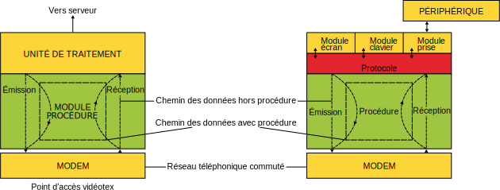
Implantation du module procédure de correction d'erreur56
La procédure implantée dans le Minitel ayant pour but de corriger les erreurs dues au réseau téléphonique, elle se place naturellement de part et d'autre de ce réseau, à l'interface entre l'unité de traitement du point d'accès du réseau vidéotex ou du terminal et l'organe d'accès au réseau que constitue le modem.
Dans le Minitel, la PCE est implantée sous forme de logiciel dans la mémoire ROM du microprocesseur. Par la suite, nous désignerons ce logiciel par "module procédure."
Structure des blocs
Les échanges entre le Minitel et le point d'accès vidéotex se font par caractères de 7 bits d'information plus un bit de parité paire encadrés d'un bit "Start" et d'un bit "Stop" au niveau du coupleur. La transmission d'un caractère s'effectue en commençant par les bits de poids faible.
L'opération de codage au niveau du point d'accès vidéotex consiste à regrouper ces octets par bloc de 15 et d'y adjoindre un octet de contrôle de redondance cyclique (CRC) et un octet de validation ; ce dernier permettant de détecter rapidement les pertes de synchronisation caractère.
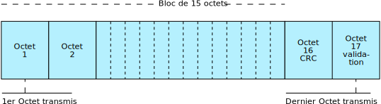
Formation des octets 16 (CRC) et 17 (validation)
L'octet 16 de CRC est formé à partir du reste de la division algébrique des caractères d'un bloc par une expression appelée polynôme générateur.
D'une manière plus détaillée, le principe de formation de l'octet 16 de CRC est le suivant :
les octets 1 à 15 d'un bloc forment une suite de bits qui sont considérés comme les coefficients d'un polynôme de degré 119 ;
ce polynôme est multiplié par x⁷ pour donner un nouveau polynôme M(x) de degré 126, ayant pour coefficient de rang 126 à 7, les bits des octets 1 à 15 et des zéros pour coefficients des rangs 6 à O ;
57
ce nouveau polynôme M(x) est divisé par le polynôme générateur G(x) = x⁷ + x³ + 1. Le reste R(x) de cette division est un polynôme de degré 6 ;
l'octet 16 de CRC est alors formé en donnant comme nouvelle valeur aux bits O à 6 les coefficients de rang O à 6 du polynôme R(X) ; le bit 7 étant le bit de parité calculé à partir des bits O à 6 ;
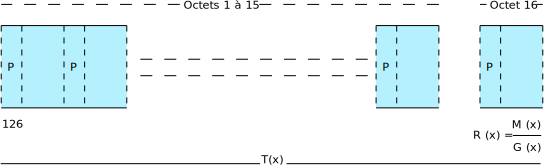
la suite formée par les bits des octets 1 à 15 et les bits 6 à 0 de l'octet 16 correspond alors numériquement aux coefficients d'un polynôme T(x) de degré 126 parfaitement divisible par le polynôme générateur G(x) selon le procédé modulo 2 ;
l'octet 17 de validation est formé en positionnant tous ses bits à 0.
Fonctionnement général sous PCE
Dans le sens point d'accès vidéotex vers Minitel
Le module procédure, au sein du point d'accès vidéotex, reçoit de l'unité de traitement les caractères à émettre codés sur 7 bits, calcule le bit de parité, forme les blocs et les émet vers le coupleur (sérialisateur).
Le module procédure du Minitel reçoit du coupleur (désérialisateur) les caractères ; il détecte par comptage que tous les octets d'un bloc ont été reçus, vérifie la validité de ce bloc et s'assure qu'il est correct en utilisant l'octet 16 de CRC et les bits de parité de chacun des caractères du bloc.
S'il n'y a pas d'erreur, il peut alors transmettre au niveau supérieur, c'est-à-dire au logiciel de traitement du Protocole, les caractères d'information contenus dans le bloc après en avoir éliminé le bit de parité (positionnement à 0).
S'il y a erreur, deux cas peuvent se présenter :
lorsqu'un bloc comporte une erreur bit isolée, le module procédure du Minitel procède à sa correction et transmet comme précédemment les informations utiles du bloc au logiciel Protocole ;
dans le cas où un bloc comporte plusieurs erreurs, le module procédure du Minitel demande au module procédure du point d'accès vidéotex de reprendre l'émission des blocs à partir du bloc incriminé. Les octets du bloc suivant le bloc 58erroné, émis vers le Minitel avant la séquence de resynchronisation ne sont pas interprétés par le terminal.
Il est donc nécessaire :
de pouvoir identifier un bloc ;
que le module procédure émetteur des blocs soit capable de reprendre l'émission à partir d'un bloc désigné ;
que le module procédure récepteur des blocs reconnaisse sans ambiguïté le début de cette reprise.
A cet effet :
le module procédure de chacune ües extrémités comporte un compteur (modulo 16) des blocs émis ou des blocs reçus. Un bloc peut donc être identifié par son numéro déterminé par la valeur du compteur au moment de son émission ou de sa réception ;
le module procédure émetteur garde en mémoire un certain nombre des blocs émis en prévision d'une éventuelle demande de répétition ;
une séquence de caractère particulière, séquence de resynchronisation (SYN, SYN, numéro de bloc), permet au module procédure récepteur des blocs de reconnaître le début d'une reprise d'émission des blocs.
Dans le sens Minitel vers point d'accès vidéotex
Dans le sens Minitel vers point d'accès vidéotex, le module émission du Minitel reçoit du logiciel Protocole les caractères codés sur 7 bits, il calcule le bit de parité et transmet ces caractères au sérialisateur. Dans le cas où une reprise de l'émission des blocs est nécessaire, le module procédure du Minitel émet, en priorité sur les caractères venant du niveau Protocole, la séquence de demande de répétition (NACK, numéro de bloc).
Le module réception du point d'accès vidéotex reçoit du désérialisateur les caractères codés sur 8 bits (7 bits + parité). Le module procédure est en recherche permanente, parmi ces caractères, de la séquence de demande de répétition ; les autres caractères sont transmis à l'unité de traitement après suppression du bit de parité.
Transparence au code
Les caractères de commande et de contrôle utilisés pour cette procédure sont eux aussi codés sur 7 bits plus un bit de parité.
Les modules procédure doivent être transparents à tous les caractères d'information échangés entre chacune des extrémités.
Pour assurer cette transparence, lorsque la procédure est utilisée, tout caractère, reçu par un module procédure et venant de l'unité de traitement du point d'accès vidéotex ou du logiciel Protocole du Minitel, correspondant à un caractère de commande ou de contrôle de la procédure, doit être précédé par un caractère dit de "transparence" (DLE).
Les caractères sont les suivants: DLE, SYN, NACK, NUL.
Le caractère DLE ajouté par un des modules procédure au flot des données venant du niveau supérieur, est filtré à la réception par le module procédure distant au moment du transfert de ce flot de données vers le niveau supérieur (unité de traitement ou Protocole).
Mise en oeuvre et arrêt de la PCE
ll est possible de demander l'utilisation ou non de la procédure de correction d'erreur par différentes commandes.
Ces commandes font partie du langage Protocole (partie 2, chapitre 6) et ne sont donc pas interprétées au niveau du module procédure lui-même mais au niveau de la couche logicielle gérant le langage Protocole à l'intérieur du point d'accès vidéotex ou du Minitel.
Il convient toutefois de rappeler que :
c'est toujours le point d'accès vidéotex qui commande la mise en œuvre ou 59l'arrêt de la procédure. Le Minitel ou ses périphériques associés n'ont que la possibilité de demander au point d'accès qu'il commande la mise en oeuvre ou l'arrêt de la procédure ;
en réponse à une commande d'utilisation de la procédure, le Minitel renvoie au point d'accès une séquence de status mode de fonctionnement ;
les différentes commandes de mise en oeuvre de la PCE sont les suivantes :
commande de l'usager : Fnct M + C
commande venant d'un périphérique ou du réseau vidéotex : PRO2, START, PROCEDURE;
l'acquittement émis par le Minitel vers le modem confirmant la mise en oeuvre effective de la PCE est :
PRO2, REP STATUS FONCTIONNEMENT, octet de status fonctionnement ;
la commande de mise en arrêt de la PCE est :
PRO2, STOP PROCEDURE.
Cette séquence peut être émise par le réseau vidéotex ou le périphérique. L'utilisateur ne peut pas demander l'arrêt de la PCE. L'acquittement émis par le Minitel lors de la mise en arrêt est de type PRO2, REP STATUS FONCTIONNEMENT, octet de status fonctionnement ;
à chaque mise en oeuvre ou en arrêt effective de la PCE, le périphérique reçoit la séquence SEP 0x56.
Fonctionnement du module procédure du point d'accès vidéotex ou d'un serveur accessible directement par téléphone.
Mise en œuvre
La mise en oeuvre de la procédure est commandée par l'unité de traitement. Parmi les critères de décision de mise en oeuvre, on peut citer :
la demande de l'usager du Minitel (réception de la séquence SEP 0x4A) ;
la demande provenant d'un périphérique du Minitel (réception de la séquence SEP 0x4A) ;
l'identifiant du Minitel impliquant une transmission sous procédure ;
la qualité de liaison médiocre détectée à partir du nombre de "SUB" émis par le Minitel vers le serveur.
Déroulement normal
Le module procédure du point d'accès étant inactif, son unité de traitement envoie la commande de mise en oeuvre vers le Minitel (PRO2, START, PROCEDURE) puis se met en attente de l'acquittement de ce dernier ; l'émission de caractères vers le Minitel est alors suspendue.
Parmi les caractères qui lui parviennent du Minitel, l'unité de traitement recherche la séquence d'acquittement PRO2, REP STATUS FONCTIONNEMENT, Octet de status fonctionnement ; les caractères n'appartenant pas à cette séquence sont traités normalement.
Lorsque cette séquence a été reconnue et que le bit PC de l'octet de status fonctionnement correspondant à l'état du module procédure indique que celui-ci est actif, le module procédure du point d'accès est activé et l'émission vers le Minitel peut alors reprendre.
Traitement en cas d'anomalie
Deux cas d'anomalie dus à des perturbations en ligne peuvent se produire :
la séquence de commande n'est pas reconnue par le Minitel ;
la séquence d'acquittement n'est pas reconnue par le point d'accès.
Lorsqu'à l'expiration d'une temporisation de 1400ms, armée après l'émission de la commande de mise en oeuvre, le point d'accès n'a pas détecté de réponse du Minitel, il renouvelle la commande et réarme la temporisation. Le nombre de renouvellements de la commande est limité à 8. Lorsque ce nombre est dépassé, le point d'accès procède à la déconnexion de la liaison. 60Si c'est la séquence d'acquittement envoyée par le Minitel qui a été perturbée, ce dernier a activé son module procédure et s'attend à recevoir des blocs. Les commandes répétées qui lui parviennent alors sont considérées comme les caractères formant le premier bloc. Le bloc sera jugé invalide et une demande de répétition sera émise vers le point d'accès.
Il est donc nécessaire au niveau du point d'accès, à partir de cinq renouvellements de la commande, de considérer la réception d'une séquence demande de répétition du bloc O (NACK, 0x40) comme un acquittement positif.
Dans cette éventualité, l'activation du module procédure du point d'accès doit se faire par deux commandes internes distinctes :
l'une, utilisée en cas de réception d'un acquittement positif explicite (réception correcte de la séquence de réponse du Minitel) ;
l'autre, utilisée lors d'un acquittement implicite (réception de la demande de répétition : NACK, 0x40) indiquant au module procédure que l'émission du premier bloc (de numéro 0) doit être précédée d'une séquence de resynchronisation : SYN, SYN, 0x40.
Formation des blocs
Formation des octets 1 à 15
Les blocs sont formés par le module procédure, à partir des caractères qui lui parviennent de l'unité de traitement après activation, en suivant les règles suivantes :
il fait immédiatement précéder les caractères DLE, SYN, NUL et NACK, provenant de l'unité de traitement, par le caractère de transparence DLE ;
l'éclatement d'une séquence de transparence (DLE, C) sur 2 blocs consécutifs est interdit. Dans ce cas, il y a complément du 1er bloc par un caractère NUL et la séquence de transparence DLE, C forme les 2 premiers octets du bloc suivant ;
le 1er octet d'un bloc doit toujours être différent du caractère NUL ;
lorsqu'un bloc est en cours de formation, une temporisation de 16ms est armée à chaque réception de caractère en provenance de l'unité de traitement. À l'expiration de cette temporisation, le bloc en cours de formation est complété, en une fois, par des NUL jusqu'à l'octet 15. C'est ce qui permet de traiter convenablement les interruptions du flux de données et l'écho des caractères en provenance du terminal ;
pour chaque caractère reçu, le module procédure calcule sa parité et positionne en conséquence le bit b7 de l'octet formé.
Formation de l'octet 16 de CRC et de l'octet 17 de validation
L'octet 16 de CRC est formé à partir du reste de la division du polynôme M(x) de degré 126 (ayant pour coefficient de rang 126 à 7, les bits des octets 1 à 15 et des zéros pour coefficents de 0 à 6), par le polynôme générateur G(x) = x⁷ + x³ + 1.
L'octet 17 est formé en positionnant tous ses bits à 0.
Emission des blocs
La formation des blocs débute avec les caractères reçus après activation du module.
L'émission des blocs peut commencer dès qu'un bloc est formé : elle se fait dans l'ordre des octets 1 à 17.
Le compteur de blocs, modulo 16 est initialisé à 0 à l'émission du premier bloc qui porte donc le numéro 0.
La transmission des blocs se fait ensuite au fur et à mesure de leur formation en incrémentant le compteur après chaque transmission complète d'un bloc.
Une temporisation de 134ms est armée après chaque émission de bloc ; elle permet de détecter les arrêts prolongés de l'émission des blocs. A l'expiration de cette temporisation un caractère NUL au moins est émis vers le Minitel. Ce caractère NUL a pour but de compenser une éventuelle perte de caractère dans le dernier bloc émis.
61
Traitement des demandes de répétition
Cas général
Dès qu'il est actif, le module du point d'accès vidéotex est en recherche permanente de la séquence de demande de répétition (NACK, X).
Le premier caractère de cette séquence (NACK) identifie la demande de répétition ; le second appartient à la colonne 4 du code ASCII et indique sur les 4 bits de poids faible le numéro du bloc à partir duquel doit reprendre l'émission.
Pour pouvoir traiter correctement les demandes de répétition, le module procédure du point d'accès doit avoir une capacité de mémorisation d'au moins 16 blocs (la numérotation des blocs se fait modulo 16).
Dès la détection du NACK, l'émission du bloc en cours est immédiatement interrompue. Après avoir reçu le second caractère (X) de la demande de répétition, le module émet la séquence de resynchronisation (SYN, SYN, X).
Le numéro du bloc à partir duquel l'émission reprend est indiqué sur les 4 bits de poids faible du caractère qui appartiennent à la colonne 4 du code ASCII.
Enfin, le module reprend l'émission des blocs à partir du bloc demandé. L'interruption, immédiate à la réception du NACK, de l'émission du bloc courant est justifiée en particulier dans le cas d'une transmission avec temps de propagation élevé. En effet, dans ce cas, si une première demande de répétition n'a pas été reconnue par le module du point d'accès, le bloc objet de la demande ne sera plus dans la mémoire de ce module lorsqu'il recevra le second caractère de la demande renouvelée.
Cas particuliers
Les demandes de répétition en provenance du Minitel portent généralement sur des blocs émis par le module procédure du point d'accès.
Cependant divers événements perturbateurs peuvent conduire à des demandes de répétitions portant sur des blocs n'ayant pas été émis. Par exemple, lorsque la demande de répétition a été perturbée ; ou bien lorsque le bruit sur la liaison est tel qu'il provoque la détection par le Minitel de faux caractères en nombre suffisant pour les considérer comme un bloc.
Par la suite, nous appellerons domaine répétable l'ensemble des blocs présents en mémoire qui ont déjà été émis entièrement ; cet ensemble comprend au plus 15 blocs.
En dehors du cas général où la demande de répétition n'est pas perturbée et où la répétition porte sur un bloc appartenant au domaine répétable, les demandes de répétition dont le second caractère est erroné (parité fausse, configuration invalide, format incorrect) et celles où le bloc demandé n'appartient pas au domaine répétable sont traitées de la façon suivante :
si un bloc est en cours d'émission, celle-ci est interrompue dès la réception du NACK, le module procédure envoie la séquence de resynchronisation avec comme numéro de bloc celui dont l'émission a été interrompue, et reprend l'émission de ce dernier à son début ;
si aucun bloc n'est en cours d'émission, mais s'il existe un bloc à émettre, le module envoie la séquence de resynchronisation en indiquant le numéro de ce bloc et peut alors l'émettre ;
s'il n'existe pas de bloc à émettre, le module mémorise la demande de répétition et la traitera comme dans le cas précédent lorsqu'un bloc aura été formé.
La détection d'un NACK ayant une parité fausse n'entraîne aucune reprise d'émission par le module du point d'accès ; les séquences DLE, NACK non plus. Dans ce dernier cas le DLE est filtré par le module procédure et le NACK transmis vers l'unité de traitement.
62
Arrêt d'utilisation de la procédure
Comme la mise en oeuvre, l'arrêt d'utilisation de la procédure est commandé uniquement par l'unité de traitement du point d'accès vidéotex. L'arrêt peut cependant être demandé par un périphérique grâce à la séquence PRO2, STOP PROCEDURE. Dans ce cas, le module procédure du point d'accès reçoit la séquence SEP 0x4B en provenance du Minitel et décide ou non de commander l'arrêt.
Déroulement normal
L'unité de traitement du point d'accès vidéotex envoie vers le Minitel la séquence d'arrêt (PRO2, STOP PROCEDURE) et se met en attente de l'acquittement de ce dernier (PRO2, REP STATUS FONCTIONNEMENT, octet de status fonctionnement) ; l'émission de caractères vers le module procédure à destination du Minitel est alors suspendue.
La commande d'arrêt est une séquence de caractères traitée par le module procédure comme les autres caractères pour former un bloc ; les caractères qu'elle comprend forment alors les derniers octets d'information de ce bloc, ce dernier étant éventuellement complété par des NUL.
L'unité de traitement recherche ensuite la séquence d'acquittement parmi les caractères qui lui parviennent du Minitel, les caractères n'appartenant pas à cette séquence sont traités normalement.
Le module procédure, toujours actif, reste en recherche de demande de répétition ; lesquelles sont traitées normalement comme décrit précédemment. Lorsque la séquence d'acquittement a été reconnue par l'unité de traitement et que le bit PC du status fonctionnement correspondant à l'état du module procédure du Minitel indique que celui-ci est désactivé, l'unité de traitement désactive le module procédure du point d'accès vidéotex.
L'émission vers le Minitel peut alors reprendre en mode caractère.
Traitement en cas d'anomalie
Deux cas d'anomalie dus à des perturbations en ligne peuvent se produire :
la séquence de commande n'est pas reconnue par le Minitel ; cas rarissime provoqué par une configuration d'erreur non détectable par la procédure ;
la séquence d'acquittement n'est pas reconnue par le point d'accès.
Lorsqu'à l'expiration d'une temporisation d'au moins 1550ms, armée après l'émission de la commande d'arrêt, le point d'accès n'a pas détecté la séquence d'acquittement, il renouvelle la commande et réarme la temporisation.
Le nombre de renouvellements de la commande est limité à 8. Lorsque ce nombre est dépassé, le point d'accès procède à la déconnexion de la liaison.
Fonctionnement du module procédure du Minitel
Mise en oeuvre
Commande émise par le réseau vidéotex
Lorsque le Protocole reçoit la commande de mise en oeuvre de la procédure (PRO2, START, PROCEDURE), il donne l'ordre d'activer le module procédure du Minitel et émet vers le réseau vidéotex la séquence PRO2, REP STATUS FONCTIONNEMENT, Octet de status fonctionnement comme acquittement, avec le bit PC de l'octet de status fonctionnement mis à 1. Le périphérique reçoit la séquence SEP 0x56.
Commande émise par l'utilisateur ou le périphérique
Lorsque l'utilisateur effectue la commande Fnct M + C ou que le périphérique émet la commande PRO2, START, PROCEDURE, le Minitel émet la séquence SEP 0x4A vers le réseau vidéotex. Celui-ci peut alors renvoyer la séquence PRO2, START, PROCEDURE qui est interprétée conformément au premier point ci-dessus.
Lorsque la commande de mise en oeuvre est reçue venant du réseau vidéotex alors que le Minitel est déjà en mode de fonctionnement avec 63procédure, celle-ci n'a pas d'autre effet que l'émission du status fonctionnement vers le réseau vidéotex.
L'activation du module procédure provoque l'initialisation à zéro du compteur de blocs reçus.
Réception des blocs
Le module procédure du Minitel comporte une mémoire où sont stockés les octets du bloc au fur et à mesure de leur arrivée. Le premier caractère différent du NUL reçu après l'activation du module procédure est l'octet 1 du bloc de numéro 0. La parité de chacun des octets 1 à 16 est vérifiée ; lorsque celle-ci est fausse un indicateur interne au module procédure est positionné et le rang de l'octet faux au sein du bloc est mémorisé. Un second indicateur est positionné lorsque le nombre d'octets ayant une parité fausse est supérieur à 1.
La suite formée par les bits des octets 1 à 15 et les bits 0 à 6 de l'octet 16 correspond numériquement aux coefficients d'un polynôme T'(x) de degré 126. Ce polynôme est divisé par le polynôme générateur G(x) ce qui donne un reste R'(x). En absence d'erreurs de transmission, le polynôme T'(x) reçu est identique au polynôme T(x) émis par le point d'accès vidéotex dont la division par G(x) donne un reste nul. Un bloc est valide si l'octet 17 reçu est le caractère NUL et si sa parité est correcte. Un bloc est correct s'il est valide, s'il ne comporte aucune erreur de parité et si le reste R'(x) de la division T'(x) par G(x) est nul. Un bloc est corrigible s'il est valide, si le reste R'(x) est non nul et s'il comporte une et une seule erreur de parité. Dans tous les autres cas, le bloc est incorrect et sa répétition est demandée. Lorsqu'un bloc est correct ou a pu être corrigé, il est alors transmis au logiciel Protocole, le compteur de bloc modulo 16 est incrémenté et le module procédure se place en réception du bloc suivant et attend le premier caractère différent du NUL.
Remarque
Les caractères affectés d'une erreur de format sont à prendre en considération. En effet, cette erreur est généralement due à une perte de synchronisation caractère et l'élimination de ces caractères erronés conduirait à la perte d'un trop grand nombre de caractères.
Transfert des blocs corrects au logiciel Protocole
Le module procédure ne communique au Protocole que les informations utiles. Ne sont pas transférés :
les octets 16 et 17 ;
les caractères NUL sauf ceux précédés du caractère DLE ;
les caractères DLE de transparence ;
pour chaque caractère, le bit 7 de parité est éliminé (positionné à 0).
Afin d'éviter un affichage saccadé des caractères sur l'écran, les octets utiles du bloc reçu sont transférés au logiciel Protocole à un rythme aussi voisin que possible du rythme de la réception des caractères.
Correction
La capacité de correction du code utilisé est d'un bit par bloc.
La correction d'un bloc valide est engagée si le reste R'(x) est non nul et si il y à une erreur de parité et une seule.
L'hypothèse d'une erreur bit permet d'écrire la relation suivante :
T'(x) = T(x) + xp
où :
T'(x) représente le polynôme reçu par le Minitel
T(x) représente le polynôme émis par le point d'accès
xp représente l'erreur introduite par la transmission.
D'autre part, on a :
T'(x) = G(x) Q'(x) + R'(x)
T(x) = G(x) Q(x) puisque T'(x) est parfaitement divisible par G(x).
Ce qui permet d'écrire: G(x) Q'(x) + R'(x) = G(x) Q(x) + xp
soit R'(x) = xp modulo G(x)
64
La résolution de cette équation en p permet d'obtenir le rang p du bit erroné et de le corriger.
Toutefois la correction n'est effectuée que si le bit de rang p appartient bien à l'octet dont la parité est fausse ; si cela n'est pas vérifié, la répétition du bloc est demandée.
Une fois corrigé, le bloc est alors traité comme les autres blocs corrects.
Demande de répétition de bloc
Quand le module procédure reçoit un bloc invalide ou incorrect, il émet une demande de répétition (NACK, X) de ce bloc vers le point d'accès.
L'émission de cette séquence est prioritaire. Cependant, lorsque le caractère de transparence DLE vient d'être émis par le module procédure, la séquence NACK, X n'est émise qu'après le second caractère de la séquence de transparence (DLE, C où C est l'un des caractères NACK, SYN, DLE ou NUL).
La demande de répétition peut être émise dès que le bloc en cours de réception est identifié comme incorrect ou invalide, c'est-à-dire dès que deux caractères ont été reçus avec parité fausse ou dès qu'une erreur de format a été détectée.
Resynchronisation après demande de répétition
Après avoir émis la demande de répétition, le module procédure est en recherche de la séquence de resynchronisation SYN, SYN, X. Lorsque cette séquence a été reçue et que le numéro de bloc codé sur les bits b0 à b3 de X correspond au numéro du bloc demandé, la réception des blocs se déroule comme décrit précédemment.
La recherche de la séquence de resynchronisation porte tout d'abord sur le premier caractère SYN. Lorsqu'un caractère SYN avec parité correcte a été détecté, le caractère suivant est testé : si ce dernier est différent d'un SYN le module procédure renouvelle sa recherche du premier SYN, s'il comporte une erreur de parité, la demande de répétition est renouvelée immédiatement. À la réception du troisième caractère, la parité, le format, la configuration (bit 6 à 1, bit 5 et 4 à 0) et la concordance du numéro de bloc avec le numéro demandé sont testés ; en cas d'erreur la demande de répétition est renouvelée immédiatement.
De plus, après chaque émission de la séquence de demande de répétition NACK, X, une temporisation de 1120ms est armée. Si la séquence de resynchronisation n'est pas détectée avant l'expiration de cette temporisation, la demande de répétition est renouvelée et la temporisation réarmée.
Arrêt d'utilisation de la procédure
Lorsque la commande d'arrêt de la procédure PRO2, STOP PROCEDURE envoyée par le point d'accès parvient au logiciel Protocole du Minitel, ce dernier désactive alors le module procédure et émet vers le point d'accès la séquence PRO2, REP STATUS FONCTIONNEMENT, octet de status fonctionnement, avec le bit PC de l'octet de status fonctionnement mis à 0.
Lorsque la commande d'arrêt est reçue alors que le Minitel est en mode de fonctionnement hors procédure, celle-ci n'a pas d'autre effet que l'émission du status fonctionnement vers le réseau vidéotex.
Remarque
Lorsque la demande d'arrêt PRO2, STOP PROCEDURE est émise par le périphérique, le logiciel Protocole du Minitel émet la séquence SEP 0x4B vers le réseau vidéotex. La procédure ne sera effectivement arrêtée que sur réception de la commande d'arrêt provenant du réseau vidéotex. Lors de l'arrêt effectif de la PCE, le périphérique reçoit la séquence SEP 0x56.
65
Prise en compte de l'indicateur d'appel en absence
Cette fonctionnalité n'est possible que si la vitesse du modem est de 1200 bauds en réception et 75 bauds en émission.
Détection du signal IAI
Dès détection d'une perte de porteuse, confirmée pendant un temps de 100ms, le modem se retourne sans émettre de porteuse 1200 bauds, sans modifier les status ni prévenir les périphériques.
Le logiciel recherche alors la présence continue d'une porteuse 75 bauds et de l'état 0 de la ligne pendant 40ms dans une fenêtre de 280ms initialisée après le début de la perte de porteuse à 1200 bauds.
En cas de succès, et si le terminal est encore connecté, le logiciel affiche après une temporisation de deux secondes un court message en rangée 00. Dès le repérage de l'IAI (les 40ms confirmées) le logiciel commande également le retournement du modem et l'émission de sa porteuse 75 bauds ; il recherche alors une porteuse 1200 bauds pendant une durée continue de 20ms dans une fenêtre de 440ms ±10ms vue de la ligne, initialisée après le repérage confirmé du signal d'IAI; ceci afin de revenir dans l'état initial connecté. En cas d'échec, il se déconnecte à la fin de cette fenêtre.
Si à la fin de la fenêtre de 280ms, le Minitel n'a pas repéré de signal d'IAI il se retourne et cherche à revenir à l'état initial connecté suivant le processus décrit précédemment, mais dans ce cas la fenêtre de 440ms ±10ms vue de la ligne est initialisée dès la perte de porteuse 1200 bauds.
Affichage du message signalant qu'un appel est en instance
Le message affiché en rangée 00 est le mot "appel" en caractères minuscules blancs sur fond noir, non clignotant, affiché à partir de la position 1 de cette rangée. Le mot "appel" est suivi de 18 espaces, afin d'effacer les éventuels messages de service en provenance du réseau dans le cas du terminal RTIC, et d'un seul espace dans le cas des terminaux TELIC et MATRA.
Au moment de l'affichage un "BIP" sonore est émis par le terminal.
Le message est effacé à la déconnexion du terminal ou après une temporisation de 20 secondes.
6667
La prise péri-informatique
68
Caractéristiques générales
Le module prise péri-informatique constitue l'interface qui permet le raccordement et l'utilisation par le Minitel de différents périphériques tels que imprimante, micro-ordinateur, lecteur de carte, clavier auxiliaire, etc.
Le module prise se compose d'une prise extérieure et d'un coupleur matériel (différent de celui affecté au module modem).
Plusieurs vitesses d'échanges sont programmables par le périphérique ou le clavier : les valeurs possibles sont 300, 1200 et 4800 bauds.
Prise mécanique
La prise péri-informatique est du type DIN 5 broches femelle sur laquelle sont disponibles les signaux suivants :
broche 1 : réception des données par le terminal (signal Rx) ;
broche 2 : masse ;
broche 3 : émission de données par le terminal (signal Tx) ;
broche 4 : périphérique en transmission (signal PT) ;
broche 5 : sortie alimentation disponible pour les périphériques. Cette fonction n'est pas disponible sur les versions dont l'identification porte les références Cu2 à Cu4 incluses.
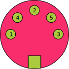
Prise femelle vue de face
Niveaux électriques
Les niveaux électriques de la prise sont compatibles avec le niveau TTL, collecteur ouvert :
un niveau de tension supérieur ou égal à 2,5 V présenté sur une entrée (Rx ou PT) sera interprété comme un état logique 1 ;
un niveau de tension inférieur ou égal à 0,4 V présenté sur une entrée (Rx ou PT) sera interprété comme un état logique 0.
Lorsque le Minitel est hors tension, l'impédance d'entrée des fils Rx, Tx, PT et sortie alimentation est supérieure à 68KΩ.
L'alimentation disponible sur la prise présente les caractéristiques suivantes :
tension : 8,5V minimum au débit maximum, 5V maximum à vide ;
courant : débit d'un ampère maximum dans les conditions normales de fonctionnement.
Les signaux de la prise péri-informatique satisfont aux conditions suivantes :
69
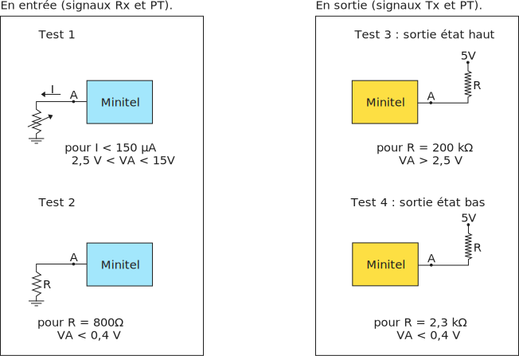
Les résistances de protection et la conception de l'interface permettent de supporter des tensions permanentes appliquées sur les entrées et les sorties jusqu'à +18 volts, ou -18 volts. Dans tous les cas d'application de tension externe sur les fils de la prise, le débit maximum en entrée est limité par l'interface à 500 mA.
Remarque
La ou les prises péri-informatiques des périphériques doivent satisfaire aux mêmes conditions électriques et mécaniques que la prise du Minitel (cf. STURM).
Caractéristiques des liaisons
Le module prise assure des échanges bidirectionnels simultanés en asynchrone à une vitesse programmable dont la valeur en standard est de 1200 bauds.
Format des signaux
Signaux Tx et Rx
La réception (signal Rx) et l'émission (signal Tx) des données par le Minitel s'effectuent par des liaisons du type série asynchrone. Le format des signaux est fixe avec 7 bits de données plus 1 bit de parité paire.
70
Signal PT
Standard Télétel
Ce signal indique que des échanges de données sont en cours sur le réseau de périphériques raccordés sur le Minitel ou entre le serveur et ce réseau de périphériques. Le fonctionnement de ce réseau est décrit dans les STURM.
Standard Téléinformatique
Dans ce standard le terminal n'analyse pas l'état du signal PT et considère qu'il est maintenu en permanence à l'état inactif (PT = 1).
Sortie Alimentation
Versions Cu2 à Cu4: cette broche est maintenue à l'état actif (0).
Versions BuO et suivantes, versions Cu5, Cu;, Cu; , Cu < : cette broche permet de disposer d'une tension de 8,5 V avec un débit maximum de 1 Ampère.
Vitesse des échanges
Les vitesses d'échanges sont programmables sur les fils Rx (réception) et Tx (émission) avec des valeurs symétriques de 300, 1200 ou 4800 bauds.
Quel que soit le standard, la programmation peut s'effectuer par l'utilisateur grâce aux commandes suivantes :
Fcnt P + 3 = vitesse 300 - 300 bauds ;
Fcnt P + 1 = vitesse 1200 - 1200 bauds ;
Fcnt P + 4 = vitesse 4800 - 4800 bauds.
De plus, en standard Télétel, la programmation peut s'effectuer automatiquement par le périphérique grâce à des commandes spécifiques (partie 2, chapitre 6).
Dans tous les cas, si les vitesses ne sont pas choisies correctement parmi celles possibles, la programmation de la prise reste inchangée.
Inhibition de la prise
Définition
Quel que soit le standard de fonctionnement, il est possible d'inhiber la prise péri-informatique. Ceci signifie que toutes les données en provenance du réseau et du clavier n'arrivent plus aux périphériques (excepté le Break en état local pour les Minitel TELIC et MATRA).
De même, toutes les données provenant de ceux-ci, et destinées à l'écran ou au réseau ne parviennent plus au Minitel.
Seules les données nécessaires au mécanisme de copie d'écran traversent la prise, c'est-à-dire :
dans le sens Minitel vers imprimante: toutes les données alphanumériques présentes sur l'écran et les caractères nécessaires à la mise en page ;
dans le sens imprimante vers Minitel: les codes permettant l'asservissement du terminal (XON-XOFF).
Mise en oeuvre
La mise en oeuvre de l'état prise inhibée (PI) est provoquée grâce à la commande Fnct P + I : l'arrêt est provoqué par la même action. Une lettre ("I" en caractère noir sur fond blanc quand le format écran est de 40 colonnes, en caractère blanc sur fond noir lorsque le format est de 80 colonnes) est affichée en rangée 00 pendant cet état PI pour avertir l'usager. Le périphérique ou le réseau vidéotex ne peuvent pas commander l'état prise inhibée.
71
La fonction de copie d'écran
72
En ce qui concerne ses caractéristiques générales, la fonction de copie d'écran est indépendante du standard de fonctionnement du Minitel.
Cependant il existe un certain nombre de caractéristiques particulières liées au standard, Télétel ou Téléinformatique. Suivant le cas, on se reportera au chapitre 7 de la partie 2 ou au chapitre 5 de la partie 3.
Caractéristiques générales
La fonction de copie d'écran est conçue pour permettre une copie papier de l'écran du Minitel sur la plupart des imprimantes série existantes (ASCII ou vidéotex) et possédant ou non l'interface réseau Minitel.
La copie d'écran s'effectue à la vitesse de la prise péri-informatique lors de l'activation de la fonction (sauf cas particuliers en standard Télétel). Elle peut donc s'effectuer à 1200 bauds (vitesse par défaut), 300 bauds et 4800 bauds.
Le débit peut être contrôlé par l'imprimante par la procédure XON-XOFF.
La copie est essentiellement alphanumérique en caractères simple taille ; les éventuels graphismes vidéotex (jeu G1) présents sur l'écran sont transmis vers l'imprimante sous forme de caractères Espace.
Remarque
Pour obtenir une copie vidéotex complète prenant en compte les attributs vidéotex, les graphismes et niveaux de gris, on se reportera au mode d'emploi des imprimantes offrant ce service.
Les caractères alphanumériques peuvent être émis en jeu français ou en jeu américain, conformément aux jeux de caractères standard définis dans la norme NF Z 62-010 (tableau 1 pour le jeu français - tableau 4 pour le jeu américain). Lorsqu'un caractère, présent sur l'écran du Minitel, n'a pas son équivalent dans le jeu de caractère choisi (ex : lettres accentuées n'existant pas dans le jeu américain), l'approximation la plus proche est effectuée par le logiciel. Les tables de transcodage sont données au paragraphe 4 de ce chapitre.
Imprimantes utilisables
Les imprimantes série asynchrones standard dont le niveau électrique respecte la Recommandation V28 du CCITT (RS 232C) disposant éventuellement d'un asservissement par XON-XOFF.
Pour la connexion au Minitel, il faut ajouter une interface mécanique (connecteur 25 points prise DIN) et électrique (V28 ↔ TTL collecteur ouvert). Cette interface peut être soit intégrée dans l'imprimante, soit sous forme de boîtier externe.
Les signaux utiles de la prise péri-informatique pour une telle imprimante sont : Tx, la masse et Rx (ce dernier est utile en cas d'utilisation de l'asservissement XON-XOFF)
Une telle imprimante peut être utilisée :
connectée directement sur le Minitel; dans ce cas, l'usager doit configurer la prise de son Minitel dans l'état prise inhibée ;
connectée derrière un périphérique possèdant l'interface réseau Minitel ; ce mode de connexion n'est possible que si le Minitel est utilisé en standard Télétel, avec la prise non inhibée et dont la vitesse est programmée à 1200 bauds.
Les imprimantes vidéotex connectables au Minitel (caractérisées par une seule prise), et les imprimantes possèdant l'interface réseau Minitel (caractérisées par 2 prises et par le respect du Protocole "systèmed'échanges" décrit dans les STURM).
Avec ces imprimantes, le Minitel doit être utilisé en standardTélétel avec la prise non inhibée et une vitesse quelconque.
Mise en oeuvre
Par l'usager : appui simultané sur les touches "Fnct" et "I" puis sur la lettre "A" pour déclencher une copie en jeu américain ou sur la lettre "F" pour déclencher 73une copie en jeu français.
Pendant la phase de copie, la lettre "R" est affichée en rangée 00.
Arrêt
L'arrêt est automatique lorsque le Minitel a fini d'envoyer sur la prise le contenu de la page écran. Il se traduit visuellement par la disparition de la lettre "R" en rangée 00.
La durée de la copie dépend de la densité d'information sur l'écran et de la vitesse de la prise : pour une page moyenne, à 1200 bauds, la copie est inférieure à 8 secondes.
L'usager a aussi la possibilité d'arrêter immédiatement le processus de copie par appui sur la touche "Annulation" sans que la séquence correspondante à cette touche soit envoyée vers le réseau vidéotex ou les périphériques.
Description du processus de copie d'écran
Le processus de copie d'écran commence par l'affichage d'un "R" en rangée 00 colonne 38, lorsque le format écran est de 40 colonnes, et en colonne 75 lorsque le format écran est de 80 colonnes, qui indique à l'usager qu'une copie est en cours.
Le logiciel relit ensuite toute la mémoire de page et émet sur la prise péri-informatique chaque caractère codé, soit en jeu américain, soit en jeu français, avec recherche d'approximation pour les caractères n'ayant pas d'équivalent dans ces jeux.
Afin d'optimiser le temps de copie, le logiciel ne transmet que les caractères utiles en supprimant les espaces de fin de rangée ; de même, les rangées vides sont émises sous forme d'une séquence de deux caractères RC, LF. L'envoi des codes de chaque rangée se termine par RC, LF. Si un caractère se trouve positionné sur la dernière colonne d'une rangée, un caractère BS est ajouté après celui-ci, avant l'émission de RC, LF.
La copie d'écran se fait de la rangée 01 à 24 (la rangée 00 étant une rangée de service, elle n'est pas émise).
Les doubles tailles, doubles hauteurs, doubles largeurs sont remplacées par des simples tailles en position droite et rangée inférieure, et sont complétées par des espaces pour que la mise en page soit conservée.
Les délimiteurs et les caractères graphiques du jeu G1 sont remplacés en transmission par des espaces.
De plus, le logiciel de copie tient compte de l'attribut de masquage et de la possibilité de couleur de caractère égale à la couleur de fond (envoi du code correspondant à l'espace dans les deux cas).
Lorsqu'un caractère XOFF est reçu sur la prise, le Minitel bloque son émission. Celle-ci ne reprendra que sur réception du caractère XON.
Traitement des informations reçues pendant le processus de copie d'écran
Le clavier
Pendant le processus de copie d'écran, le clavier du Minitel est inactif, à l'exception de la touche "Annulation" qui annule le processus et de la touche "Connexion/Fin" qui conserve sa fonction.
La prise
Tout caractère reçu sur la prise est filtré et non interprété, à l'exception des codes XON et XOFF qui gèrent le contrôle de flux ; ces caractères ne sont pas transmis vers le modem
74
Le modem
Les données visualisables reçues par le modem continuent à s'afficher normalement sur l'écran si l'aiguillage modem vers écran était positionné avant le début du processus. Aucune donnée en provenance du modem n'est émise vers la prise.
Les commandes d'aiguillage sont filtrées et non interprétées.
Ce tableau représente le transcodage effectué pour les lettres accentuées majuscules. Pour les autres caractères, se reporter aux tableaux relatifs à VGP5.
MINITEL
Imprimante avec jeu américain
Imprimante avec jeu français
visualisation VGP5
code émis
visualisation
code émis
visualisation
Â
0x41
A
0x41
A
É
0x45
E
0x45
E
Ç
0x43
C
0x43
C
Ë
0x45
E
0x45
E
À
0x41
A
0x41
A
È
0x45
E
0x45
E
Ê
0x45
E
0x45
E
76
77
Le standard Télétel
7879
Organisation et fonctionnement
80
Organisation fonctionnelle
En standard Télétel, Le Minitel 1B est conçu comme un terminal ouvert vers l'extérieur afin de permettre une communication avec toute base de données de type Vidéotex ou Téléinformatique et une extension de ses capacités grâce à des périphériques.
Architecture
Le Minitel 1B se compose de quatre sous-ensembles ou modules qui regroupent des éléments physiques et logiciels :
le module écran, qui assure le décodage et la visualisation des informations (partie 2, chapitre 2) ;
le module modem qui assure la transmission des informations entre le Minitel et la base de données (partie 2, chapitre 4) ;
le module prise péri-informatique, qui assure la transmission des informations entre le Minitel et les périphériques (partie 2, chapitre 5).
L'ensemble de ces modules est géré par une couche de logiciel centralisée appelé Protocole (partie 2, chapitre 6) qui assure principalement l'aiguillage des données entre ces modules. Le Protocole gère également la mise en oeuvre de fonctionnements particuliers du Minitel ou des modules. Ainsi, de l'extérieur, dans le standard Télétel, le Minitel doit être considéré comme un réseau en étoile à gestion centralisée (schéma 1.1.).
Aiguillages standard
En l'absence de commandes d'aiguillages particulières reçues du réseau vidéotex où d'un périphérique, le Minitel est configuré par défaut avec des aiguillages standard. Dans tous les cas, ces aiguillages standard sont réalisés lors de la mise sous tension du Minitel, lors de la connexion ou de la déconnexion du modem ou lors du débranchement d'un périphérique du réseau Minitel (partie 2, chapitre 6).
Aiguillages standard de l'état local
Lorsque le Minitel est dans l'état local, le logiciel commande un bouclage du modem sur lui-même et la configuration des aiguillages standard entre les modules suivants (schéma 1.2) :
clavier vers modem ;
modem vers écran ;
clavier vers prise péri-informatique ;
prise péri-informatique vers écran.
Ainsi, toutes les informations frappées au clavier sont envoyées au module prise et parviennent au module écran en raison du bouclage par le modem. De même, toutes les informations reçues par le module prise sont transmises au module écran.
Aiguillages standard de l'état connecté
Lorsque le Minitel est dans l'état connecté, la configuration des aiguillages standard entre les modules est la suivante (schéma 1.3) :
clavier vers modem ;
modem vers écran ;
modem vers prise péri-informatique ;
prise péri-informatique vers modem.
Ainsi, le flux de données envoyé par le serveur et reçu par le module modem parvient au module écran et au module prise. De même les informations reçues 81par le module prise sont retransmises vers le module modem et sont donc envoyées vers le serveur, multiplexées avec les caractères frappés au clavier.
Transmission en mode écho
Avec les aiguillages standard, le Minitel fonctionne en mode écho. Par exemple dans l'état connecté, tout caractère visualisable entré au clavier par l'utilisateur parvient au module modem pour être transmis au réseau vidéotex. Ce dernier renvoie le caractère reçu au module modem qui le transmet alors au module écran pour affichage. Ce mode de transmission permet de vérifier que chaque caractère frappé est bien pris en compte par la base de données. En cas d'erreur, le caractère correspondant à celui saisi au clavier sera remplacé sur l'écran soit par un caractère différent, soit par un signe d'erreur (pavé remplissant l'emplacement de caractère correspondant avec le niveau de gris courant).
Dans l'état local, l'écho est réalisé par le terminal lui-même puisqu'il y a bouclage au niveau du module modem. L'écho est alors local.
Remarque
Il est possible, par une commande clavier ou une commande Protocole, de réaliser un écho local lorsque le Minitel est connecté et que la base de données n'assure pas l'écho. De même, il est possible de supprimer l'écho local (Minitel non connecté) si les périphériques se chargent de renvoyer en écho vers l'écran tous les caractères émis par le clavier. (partie 2, chapitre 3, paragraphe 3).
Architecture du Minitel en standard Téletel
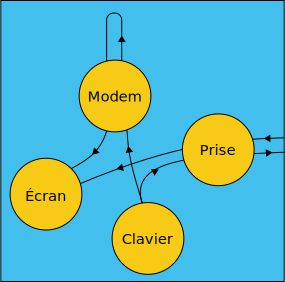
Aiguillages standard de l'état local
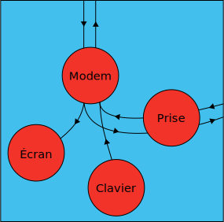
Aiguillages standard de l'état connecté
Principes de codage
Format de la transmission
Les données émises et reçues par le module modem (à destination ou en provenance du réseau vidéotex) ou par le module prise (à destination ou en provenance d'un périphérique) sont transmises en série sous la forme de "mots" de 8 bits ou octets comprenant 7 bits utiles plus un bit de parité paire. Ce bit de parité permet de détecter des erreurs de transmission ; il est notamment utilisé dans la procédure de correction d'erreur (partie 1, chapitre 5).
82
Codages des données
Mode Vidéotex
Lorsque le Minitel est dans ce mode, les caractéristiques de visualisation du module écran sont conformes à celles définies, pour les services vidéotex alphamosaïques, par la CEPT (TCD 06.01/profil 2) et le CCITT (Recommandation T100). Le format de l'écran est de 40 colonnes.
Mode Mixte
Lorsque le Minitel est dans ce mode, le module écran décode les commandes principales définies dans la norme internationale ISO 6429. Le format de l'écran est alors de 80 colonnes.
Compatibilité PAD-X3
Pour permettre l'utilisation du Minitel avec des concentrateurs de type PAD-X3, il existe un état dit compatible PAD-X3.
Lorsque le Minitel est dans cet état, le codage des touches de fonction, les séquences émises par le Protocole et les filtrages par le module écran sont modifiés (partie 2, chapitre 3, paragraphe 6).
Fonctionnements
Fonctionnement standard
À la mise sous tension le Minitel s'initialise en mode Vidéotex. Le format de l'écran est de 40 colonnes et l'affichage s'effectue en mode page.
Les actions possibles au clavier sont limitées à celles nécessaires à la consultation d'une base de données vidéotex avec, en particulier, la non-validation :
des touches de gestion du curseur et d'édition ;
de l'émission des caractères de contrôle ;
de la répétition automatique des touches.
La vitesse des échanges sur la prise est de 1200 bauds et la connexion de périphériques conformes à la spécification du réseau Minitel est possible.
La vitesse du modem est de 1200 bauds en réception et de 75 bauds en émission. Les aiguillages sont standard (paragraphe 1.2.).
Fonctionnements particuliers
Les caractéristiques des quatre modules du Minitel peuvent être modifiées, soit grâce à des commandes de l'utilisateur, soit grâce à des commandes en provenance du point d'accès vidéotex, de la base de données ou du périphérique, conformes au langage Protocole. (partie 2, chapitre 6).
Ceci permet de configurer le Minitel pour l'adapter à des besoins particuliers.
83
L'écran
84
L'écran utilise un logiciel de décodage, contenu dans la mémoire programme du microprocesseur.
Ce logiciel interprète les codes de 7 bits reçus du modem, de la prise ou du clavier, pour engendrer des mots de 16 bits (mode Vidéotex) ou 12 bits (mode Mixte) par caractère visualisable qui sont chargés dans la mémoire de page.
Le décodage varie suivant le mode, Vidéotex ou Mixte
Mode Vidéotex
Caractéristiques de visualisation
Les caractéristiques de visualisation du module écran du Minitel en mode Vidéotex sont celles adoptées pour le service Télétel, défini dans le cadre des recommandations pour les services vidéotex alphamosaïques faites par la CEPT et le CCITT.
Attributs de visualisation - définition
Un caractère est déterminé par sa forme et par sa présentation, définie par un ou plusieurs attributs de visualisation.
Les attributs peuvent être définis soit au niveau du caractère, soit par zone :
attributs définis au niveau du caractère : en règle générale, la définition des attributs est, indépendante du contexte, ce qui signifie que chaque caractère peut possèder des attributs différents de ceux du caractère qui le précède ou qui le suit. Cette définition générale s'applique aux règles de visualisation et ne sous-entend pas que le codage des attributs définis au niveau du caractère doit être répété pour chaque caractère ;
attributs définis par zone : on appelle zone une suite d'emplacements de caractères appartenant à une même rangée physique commençant par un délimiteur de zone et se terminant par un autre délimiteur de zone ou, par défaut, par la fin de la rangée. Un délimiteur de zone est signalé en mémoire de page par un mot de configuration particulière qui porte, outre les informations permettant de le reconnaître, les informations de changement d'attributs dits définis par zone. Un délimiteur de zone est visualisé comme un espace non souligné, non clignotant et ayant tous les autres attributs courants. Les caractères semi-graphiques peuvent servir de délimiteur pour l'attribut de couleur de fond.
Liste des attributs de visualisation
couleur de caractère : c'est-à-dire couleur des points de la matrice représentant la forme du caractère. Elle correspond à la couleur de l'encre ; huit couleurs sont disponibles pour les caractères: noir, bleu, rouge, magenta, vert, cyan, jaune et blanc ;
couleur de fond : c'est-à-dire couleur des points de la matrice n'appartenant pas à la forme du caractère. Elle correspond à la couleur du papier. Les mêmes huit couleurs que ci-dessus sont disponibles pour le fond ;
hauteur simple ou double (occupation de 2 matrices 8 x 10, superposées si la double hauteur est validée) ;
largeur simple ou double (occupation de 2 matrices 8 x 10, juxtaposées si la double largeur est validée) ;
simple ou double taille (occupation de 4 matrices 8 x 10 si la double taille est validée) ;
positif/négatif : les points du caractère deviennent des points de fond et inversement ; la phase du clignotement est également inversée. Cet attribut est aussi appelé inversion de fond ;
clignotement : les points du caractère sont affectés alternativement de la couleur du caractère et de la couleur du fond. La fréquence du clignotement est faible (de l'ordre de 0,5 Hz) ;
85masquage : la visualisation de caractères munis de cet attribut est inhibée. L'emplacement correspondant est remplacé par la couleur de fond courante, la zone masquée commence et finit au niveau du délimiteur correspondant. Pour l'attribut de masquage, il existe deux modes de visualisation qui sont considérés comme des attributs de plein écran :
avec masquage validé : dans ce cas, les zones ayant l'attribut de masquage apparaissent sur l'écran sous forme de fond local uniforme ; cet état est obtenu par défaut à la mise sous tension du Minitel et à la connexion ; il est aussi obtenu lors de la réception de l'attribut de masquage tout écran ;
avec masquage révélé : ces mêmes zones apparaissent comme si elles n'avaient pas reçu l'attribut de masquage. Cet effet est obtenu par la prise en compte de l'attribut de démasquage tout écran ;
lignage : l'attribut de lignage correspond à l'attribut de soulignage dans une zone alphabétique et aux mosaïques disjointes dans les zones semi-graphiques :
soulignage : tous les caractères de l'ensemble alphabétique peuvent être soulignés ; le soulignage est une barre continue, toujours en simple hauteur, occupant la dernière ligne de l'emplacement de caractère. Elle possède tous les autres attributs du caractère : couleur et clignotement ;
jointif-disjoint : tous les caractères de l'ensemble semi-graphique peuvent être disjoints. Cela signifie qu'une grille, couleur de fond, sépare entre elles les cases de la matrice dans laquelle s'inscrit l'emplacement de caractère. Cette possibilité permet d'obtenir un graphisme séparé, par opposition au graphisme plein normal.
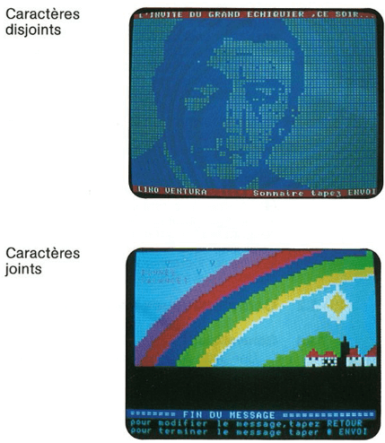
Pages composées avec des caractères semi-graphiques jointifs ou disjoints.86
Utilisation des attribut
La structure d'utilisation des attributs varie selon le caractère choisi, dont on distingue 3 sortes : les caractères alphabétiques, les caractères semi-graphiques et les délimiteurs de zone.
Le tableau ci-après décrit cette structure.
Appartenance à un jeu
Alphabétique
Semi-graphique
Délimiteur (2) de zone
Attributs définis
Au niveau du caractère
Couleur de caractère
Clignotement
Hauteur du caractère
Largeur du caractère
Positif/Négatif
Couleur de caractère
Clignotement
Couleur du fond (1)
Disjoint
Couleur du fond de la zone qui suit
Masquage
Par zone
Couleur du fond (3)
Masquage
Soulignage (4)
Masquage
(1) Tout caractère semi-graphique est un délimiteur de couleur de fond pour une éventuelle zone alphabétique qui le suit immédiatement sur la même rangée.
(2) Le délimiteur est répété sur les deux emplacements correspondant de deux rangées successives pour simuler la double hauteur ; répété sur deux emplacements consécutifs d'une même rangée pour simuler la double largeur ; une combinaison de ces deux cas simule la double taille. En effet, le délimiteur est codé en transmission comme un espace qui peut donc posséder aussi, en alphabétique, les attributs de taille. Le délimiteur tient compte également de l'attribut positif-négatif.
(3) Un effacement de l'écran du Minitel correspond au remplissage par le logiciel de la mémoire de page avec des codes correspondants à des pavés noirs semi-graphiques afin d'éviter que la couleur de fond ou le lignage anticipent, même temporairement, l'inscription des caractères de la rangée courante.
(4) Lorsqu'une zone semi-graphique suit une zone alphabétique où le soulignage est validé, la zone semi-graphique n'est pas disjointe ; le soulignage ne réapparaît pas dans la zone alphabétique suivante. Aucun caractère semi-graphique ni aucun délimiteur de masquage ou de démasquage dans la zone semi-graphique ne peut introduire le soulignage dans la zone alphabétique suivante.
Caractéristiques de codage
Généralités
Une page-écran, conforme aux caractéristiques de visualisation retenues pour Télétel, est transmise sous une forme codée. Le codage est constitué par une succession de codes décrivant la page et utilisés pour transmettre des caractères visualisables, des attributs de visualisation et des fonctions. Le vocabulaire se compose de 128 codes différents dont les noms, avec leur signification propre, sont conformes à la version internationale de référence 87de l'alphabet international n°5 (Recommandation T50 du CCITT et norme NF Z 62-010).
Cette version de référence est représentée sous la forme de tableaux (schémas 2.3 à 2.9) comportant 16 rangées, numérotées de 0 à 15 (en système décimal) ou de 0 à F (en système hexadécimal), et 8 colonnes, numérotées de 0 à 7.
Chacun des 128 codes possibles est représenté sous forme binaire par un mot de 7 bits utiles (plus 1 bit de parité paire). Les 4 premiers bits, dits de poids faible, déterminent la rangée j des tableaux où se trouve le caractère; les 3 derniers bits, dits de poids fort, correspondent à la colonne i des tableaux où se trouve le caractère.
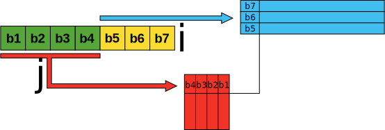
Les codes sont combinés, si nécessaire, sous forme de séquences conformément à la norme internationale ISO 2022 (NF Z 62-500).
Les codes sont désignés par deux chiffres (ou un chiffre et une lettre) séparés par une barre de fraction (exemple: A - 0x41). Le premier désigne la colonne et le second, la rangée du tableau utilisée. La notation correspond au système hexadécimal.
Notation décimale
0
1
2
3
4
5 .. 9
10
11
12
13
14
15
Notation héxadécimale
0
1
2
3
4
5 .. 9
A
B
C
D
E
F
Les colonnes 0 et 1 des tableaux correspondent à des codes de commande constituant un jeu de code noté C0 (schéma 2.8.). Tous les codes de commande non retenus dans le jeu C0 n'ont aucune action sur le Minitel.
Initialisation de l'écran
Lors de la mise sous tension, de la connexion du Minitel ou du passage du mode Mixte au mode Vidéotex, l'écran est dans les conditions d'initialisation suivantes :
curseur non visualisé ;
mode page (et non mode rouleau) ;
masquage validé ;
88les caractères reçus sont visualisés par défaut en blanc sur fond noir, non masqués, non lignés, fixes et de simple taille ;
le jeu de caractères de base, dit jeu G0, est validé
De plus, à la mise sous tension, la position du curseur est en rangée 01, colonne 01 ; un "F" en fond inversé apparaît sur la rangée 00 colonne 39.
À la déconnexion, le contenu de l'écran et la position courante du curseur restent inchangés.
Codage des caractères visualisables
Généralités
94 codes représentent chacun un caractère visualisable. L'ensemble des 94 caractères correspondants constitue un jeu graphique de base noté G0. (schéma 2.5.).
Ce jeu graphique de base G0 ne contient qu'une partie des 128 caractères de l'ensemble alphabétique et aucun des 64 caractères de l'ensemble semi-graphique nécessaires pour l'exploitation en France de Télétel. Les caractères manquants dans le jeu de base sont désignés, non par un code unique, mais par une combinaison de codes ou séquences. Ces séquences permettent d'accéder à deux jeux auxiliaires : un jeu noté G1 contenant l'ensemble des caractères semi-graphiques et un jeu noté G2 complémentaire du jeu graphique de base. (schémas 2.6. à 2.9). L'espace (0x20) et l'oblitération (0x7F) correspondant au pavé plein sont des caractères particuliers n'appartenant pas aux jeux G0, G1 et G2.
Le contenu de ces jeux ainsi que les règles syntaxiques régissant les combinaisons de codes sont schématisés par la figure du schéma 2.8. et explicités ci-après :
Codage des caractères alphanumériques
Codage des caractères de l'alphabet n° 5
Le jeu de caractères appartenant à l'alphabet international n° 5 est appelé jeu graphique de base et noté G0. Il comporte tous les caractères alphabétiques majuscules et minuscules de l'alphabet latin, sans accentuation, les chiffres et un certain nombre de symboles spéciaux tels que les signes de ponctuation. Il ne comporte aucune lettre accentuée. Les caractères de G0 sont désignés par un code unique dont la valeur binaire est fournie par le schéma 2.5.
Codage des lettres accentuées.
Les lettres accentuées sont désignées au moyen d'une combinaison de trois codes, le dernier étant celui de la lettre appartenant à G0 et les deux premiers étant représentatifs de l'accent.
Pour ce faire on définit un jeu auxiliaire de 94 caractères noté G2 où chaque caractère est codé de manière identique aux caractères de G0. Lorsque l'on désire désigner, non un caractère de G0, mais un caractère G2, on utilise une séquence composée du code de commande SS2 (0x19) et du code représentant le caractère choisi dans G2. Les accents sont contenus dans la colonne 4 du tableau G2. Ces caractères d'accentuation ne provoquent pas d'avance de position courante.
Exemple : la lettre "é" sera codée par la séquence :
0x19
0x42
0x65
(SS2)
(')
(e)
89
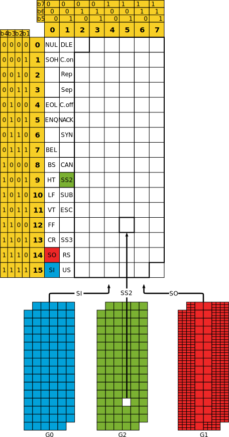
90
Le Minitel peut ainsi visualiser toutes les voyelles minuscules accentuées : à, â, ä, é, è, ê, ë, î, ï, ö, ô, ù, û, ü, ç utilisées si le composant de visualisation est VGP5. Aucune lettre accentuée majuscule n'est disponible.
Si le composant de visualisation est VGP2, les lettres ä, ö, ü, ne sont pas disponibles.
Dans tous les autres cas, l'adjonction d'un accent ou d'une cédille à un caractère graphique correspondant à un symbole ne faisant pas partie du répertoire, conduit à l'affichage du seul caractère graphique.
Codage des lettres spéciales
Certaines lettres spéciales ne sont pas réductibles à la superposition d'un accent et d'une lettre. Ces caractères figurent également dans G2 et ils sont codés par les séquences :
SS2, 0x7A pour la ligature œ minuscule ;
SS2, 0x6A pour la ligature Πmajuscule ;
SS2, 0x7B pour la lettre β, si le composant de visualisation est VGP5.
Codage des symboles spéciaux
Certains symboles spéciaux (les flèches et les signes monétaires) ne figurent pas dans G0. Ils ont été placés dans les colonnes 2 et 3 de G2 et sont codés par une séquence de deux codes, le premier étant SS2.
Exemples
SS2, 0x23 pour la Livre ;
SS2, 0x27 pour le symbole paragraphe si le composant de visualisation est VGP5.
Les caractères de G2 sont représentés dans les tableaux 2.8 (VGP5) ou 2.9 (VGP2).
Codage des caractères semi-graphiques
Un jeu G1, identique dans sa structure au jeu G0 contient l'ensemble des caractères semi-graphiques définis par les caractéristiques de visualisation.
Un code à 7 bits dans la représentation codée d'une rangée de texte, s'il est compris entre 0x20 et 0x7E, représente en principe un caractère de G0. Le code SO (0x0E) modifie la signification de tous les caractères des colonnes 2 à 7 qui le suivent : ceux-ci appartiennent à G1 et sont donc des éléménts semi-graphiques. Le code SI (0x0F) rétablit la situation primitive (dite en code). Toute séquence de caractères graphiques comprise entre SO et SI représente donc un ensemble de caractères de G1.
Lorsque le terminal est en mode semi-graphique, la réception du code SS2 est ignorée ;
La réception de séquences commençant par SS2 associé à des codes correspondant à des symboles n'existant pas dans le répertoire de caractères disponibles du terminal provoque l'affichage d'une barre horizontale basse signifiant: "je suis incapable de représenter ce caractère"
Remarque
SS2, suivi d'un caractère de commande appartenant au jeu C0 provoque, dans tous les cas, l'interprétation de ce code de commande. Le caractère SS2 est alors filtré par le module écran.
91
Codage des attributs de visualisation
Généralités
Les attributs de visualisation font partie d'une grille C1 formée des colonnes 4 et 5 de l'alphabet international n° 5. Ils sont donc déterminés par une séquence de deux codes : le premier est ESC (0x1B), code d'appel à C1 ; le second est un code de la grille C1 (schéma 2.4).
Vingt-neuf codes sont utilisés. Ils se répartissent de la façon suivante :
couleur de caractère (8 fonctions) ;
couleur de fond (8 fonctions) ;
taille (4 fonctions) ;
clignotement ou fixité (2 fonctions) ;
début et fin de masquage (2 fonctions) ;
début ou fin de lignage (2 fonctions) :
fond inversé ou normal (2 fonctions) ;
échappement vers la norme ISO 6429 (1 fonction) ; ESC, 0x5B est noté CSI.
Les séquences commençant par ESC et utilisant les codes libres de la grille C1, sont filtrées par le module écran du Minitel.
Codage des attributs définis au niveau du caractère
Les attributs définis au niveau du caractère sont traités en parallèle, c'est-à-dire qu'ils n'apparaissent que conjointement avec un caractère et que chaque caractère peut posséder des attributs différents de celui qui le précède ou qui le suit. Cependant, d'une façon générale, un attribut de visualisation défini pour un caractère donné s'applique également à tous les caractères qui les suivent, sans qu'il soit nécessaire de répéter la séquence de codage pour chacun d'eux.
Un attribut cesse de s'appliquer dans trois cas :
à la redéfinition explicite ultérieure d'une nouvelle valeur de cet attribut ;
à la fin d'une portion de page-écran délimitée par un séparateur d'article ou de sous-article (paragraphe 1.2.5) ;
Les attributs de taille et d'inversion de fond ne sont pas utilisables en mode semi-graphique (jeu G1). Si ces attributs restent validés lors du passage hors code (SO), le terminal les annulera définitivement même après le retour en code (SI) jusqu'à la redéfinition explicite de ces attributs. De plus, les séquences de définition d'attribut de taille et d'inversion ne sont pas prises en compte en mode semi-graphique.
En mode semi-graphique l'attribut de lignage est défini au niveau caractère et introduit le semi-graphique disjoint.
Avec les attributs double hauteur ou double taille, les caractères ont une couleur uniforme, c'est-à-dire identique sur deux rangées. Les caractères munis de ces attributs sont engendrés à partir du bas (2ème rangée visuelle) gauche.
92
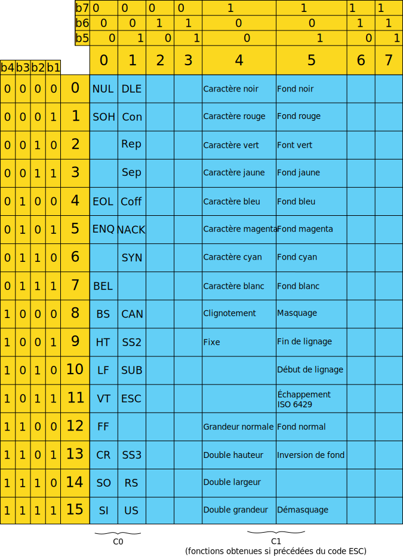
93
Le logiciel de décodage vidéotex remplit la mémoire de page par la même configuration de 16 bits sur les 2 ou 4 adresses correspondant aux 2 ou 4 emplacements d'une double hauteur, d'une double largeur ou d'une double taille.
Le Minitel 1B peut représenter des doubles tailles ou des doubles hauteurs quinconcées ; cependant, pour assurer la compatibilité avec les Minitel 1, qui ne peuvent assurer cet effet visuel (STUM M1), il est conseillé de ne pas mettre en oeuvre le quinconçage.
Le Minitel ne tient pas compte des séquences de double taille et de double hauteur lorsque la position courante est en rangée 00 ou 01.
Lorsqu'un caractère C1 est affiché en double largeur (respectivement double taille) sur deux emplacements consécutifs J et J + 1, un caractère C2 en simple taille (respectivement double hauteur) ne peut être affiché sur la position J + 1. Le composant VGP visualise normalement la partie gauche du caractère C1 sur l'emplacement J mais visualise la partie droite du caractère C1 en simple taille (respectivement double hauteur) sur l'emplacement J + 1.
Dans les mêmes conditions, lorsque le caractère C2 est en double largeur (respectivement double taille) le caractère C1 reste affiché normalement, la partie gauche de C2 est inscrite en double largeur (respectivement double taille) sur J + 2 et la partie droite est affichée en J + 3 en simple taille (respectivement double hauteur).
Les attributs définis au niveau caractère sont transportés avec tous les déplacements d'écriture dans l'écran sauf lorsque ceux-ci sont effectués par des séparateurs d'article ou de sous-article: US, RS, FF (paragraphe 1.2.5.2.).
Codage des attributs définis par zone
Le logiciel analyse et prend en compte toutes les séquences de définition d'attribut série au fur et à mesure de leur réception, le Minitel met ainsi à jour en permanence un contexte latent d'attribut série. Mais les attributs seront effectivement validés et n'interviendront sur l'écran que :
lors de la réception d'un espace (0x20) qui sera visualisé sous forme d'un espace avec la couleur de fond courant, modifiée s'il y a lieu par la couleur de fond du contexte latent, en tenant compte des attributs de taille et d'inversion de fond. Cet espace marque le début ou la fin d'une zone ;
ou lors de la réception d'un caractère semi-graphique (jeu G1) qui permet de valider l'attribut couleur de fond. Tout caractère semi-graphique joue donc le rôle de délimiteur de couleur défini dans-une zone alphabétique qui le suit ou le précède immédiatement. La prise en compte des autres attributs de zone latents se fera avec le premier délimiteur explicite rencontré.
Remarque
Un seul espace suffit à valider simultanément plusieurs modifications d'attributs série.
Le premier espace reçu après la réception d'une définition d'attribut série est inscrit en mémoire de page comme un délimiteur, même s'il n'y a pas modification du contexte d'attribut série.
94Exemple
ESC 0x53 0x20 0x20 le second espace n'est pas un délimiteur ;
ESC 0x56 0x20 ESC 0x56 0x20 les deux espaces sont des délimiteurs.
Le souligné est désactivé, ou le bit correspondant dans le contexte latent d'attribut série est réinitialisé, lors du passage hors code. Le disjoint est désactivé lors du passage en code.
La couleur de fond et le masquage restent validés lors des passages en codes et hors code.
Le logiciel des Minitel ne relit pas la mémoire de page. Lors d'un changement de zone (utilisation des codes, LF, VT, BS, HT et des séquences CSI de déplacement du curseur), l'écriture s'effectue avec les attributs série de la zone d'accueil tant qu'un délimiteur explicite ne permet pas la prise en compte des attributs série latents.
Les attributs série ne sont donc pas transportables lors d'un mouvement dans l'écran de la position courante. L'écriture d'un caractère à l'emplacement d'un délimiteur annule les attributs série activés grâce à ce délimiteur ; les attributs série deviennent immédiatement ceux de la zone située à gauche.
Codage de l'attribut de masquage plein écran
Le masquage plein écran est déterminé par la séquence ESC 0x23 0x20 0x58, et le démasquage plein écran par la séquence ESC 0x23 0x20 0x5F
Fonctions de mise en page
Généralités
Les fonctions de mise en page permettent de positionner le curseur (position courante d'écriture) sur l'un des 40 caractères de l'une des 25 rangées de la page-écran. Une page-écran constitue un "article," Un article peut être divisé en sous-articles. Un sous-article est un ensemble de caractères consécutifs appartenant à une ou plusieurs rangées consécutives, compris entre deux séparateurs d'articles ou de sous-articles.
Le point d'origine de la position courante d'écriture est le coin en bas et à gauche de l'emplacement du caractère (de façon à tenir compte des caractères agrandis). À la mise sous tension du Minitel, la position courante est en colonne 01 de la rangée 01.
Fonctions disponibles
Les fonctions de mise en page disponibles sont commandées par les codes et séquences de codes suivants :
BS (0x08) : déplacement du curseur d'un emplacement de caractère à gauche ;
HT (0x09) : déplacement du curseur d'un emplacement de caractère à droite ;
LF (0x0A) : déplacement du curseur d'un emplacement de caractère vers le bas ;
VT (0x0B) : déplacement du curseur d'un emplacement de caractère vers le haut ;
CR (0x0D) : retour du curseur au début de la rangée courante ;
CSI Pn A (0x1B 0x5B, Pn, 0x41) : curseur vers le haut de n rangées. Arrêt en haut de l'écran ;
CSI Pn B (0x1B 0x5B, Pn, 0x42) : curseur vers le bas de n rangées. Arrêt en bas de l'écran ;
CSI Pn C (0x1B 0x5B, Pn, 0x43) : curseur vers la droite de n colonnes. Arrêt au bord droit de l'écran ;
95CSI Pn D (0x1B 0x5B, Pn, 0x44) : curseur vers la gauche de n colonnes. Arrêt au bord gauche de l'écran ;
CSI Pr; Pc H (0x1B 0x5B, Pr, 0x3B, Pc, 0x48) : adressage direct curseur ;
RS (0x1E) : retour du curseur en première position de la rangée 01. Ce code est un séparateur explicite d'article ;
FF (0x0C) : retour du curseur en première position de la rangée 01 avec effacement complet de l'écran de la rangée 01 à la rangée 24. Ce code est également un séparateur d'articles ;
US (0x1F) : séparateur de sous-article ;
CAN (0x18) : remplissage à partir de la position courante du curseur et jusqu'à la fin de la rangée par des espaces du jeu courant ayant l'état courant des attributs. La position courante du curseur n'est pas déplacée. Ce code ne sert pas de délimiteur ;
CSI J ou CSI 0 J (0x1B 0x5B 0x4A ou 0x1B 0x5B 0x30 0x4A) : effacement depuis le curseur inclus jusqu'à la fin de l'écran ;
CSI 1 J (0x1B 0x5B 0x31 0x4A) : effacement depuis le début de l'écran jusqu'au curseur inclus ;
CSI 2 J (0x1B 0x5B 0x32 0x4A) : effacement de tout l'écran (la position du curseur n'est pas modifiée) ;
CSI K ou CSI 0 K (0x1B 0x5B 0x4B ou 0x1B 0x5B 0x30 0x4B) : effacement depuis le curseur inclus jusqu'à la fin de la rangée ;
CSI 1 K (0x1B 0x5B 0x31 0x4B) : effacement depuis le début de la rangée jusqu'au curseur inclus ;
CSI 2 K (0x1B 0x5B 0x32 0x4B) : effacement total de la rangée où est le curseur ;
CSI Pn P (0x1B 0x5B, Pn, 0x50) : suppression de n caractères en commençant à la position curseur incluse ;
CSI Pn (0x1B 0x5B, Pn, 0x40) : insertion de n caractères en commençant à la position curseur incluse (modèle RTIC uniquement) ;
CSI 4 h (0x1B 0x5B 0x34 0x68) : début du mode insertion de caractères ;
CSI 4 l (0x1B 0x5B 0x34 0x6C) : fin du mode insertion de caractères ;
CSI Pn M (0x1B 0x5B, Pn, 0x4D) : suppression de n rangées à partir de celle où est le curseur ;
CSI Pn L (0x1B 0x5B, Pn, 0x4C) : insertion de n rangées à partir de celle où est le curseur.
Remarque
Les fonctions de type CSI ne sont pas disponibles en rangée 00.
Pn correspond à une suite d'octets de la colonne 3 du code ASCII et exprime en décimal la valeur du paramètre de la séquence.
ex: Pn = 0x31 0x33
La suppression de n caractères est limitée aux caractères d'une rangée (n < 40 en mode Vidéotex).
L'insertion de caractères ne provoque pas le débordement d'une rangée sur l'autre.
Il est déconseillé d'utiliser les commandes de suppression et d'insertion de caractères lorsque les attributs double taille, double largeur et double hauteur sont mis en oeuvre.
96
Mise en oeuvre des fonctions de mise en page
Dispositions générales
Les codes BS, HT, LE VT, CR et les séquences de type CSI n'ont aucune action ni sur l'état courant des attributs définis au niveau des caractères, ni sur la position de code (S0, SI). La position active d'écriture transporte donc avec elle l'état courant des attributs, sauf s'il s'agit des attributs série (paragraphe 1.2.4.3)
La réception d'un séparateur d'article ou de sous-article (US, FF ou RS) remet les fonctions de visualisation dans un état initial : en début d'article ou de sous-article, l'écran est remis en position SI (jeu de base GO actif). Les caractères reçus sont initialisés en blanc sur fond noir, non masqués, non lignés, fixes et de simple taille. Ces codes ne modifient pas le mode de débordement (mode page ou mode rouleau) défini par les séquences précisées au paragraphe 4.2.1 de ce chapitre.
Remarque
La réinitialisation des attributs série par US ne peut être effective que si le Minitel reçoit ensuite une séquence de définition d'attribut série suivie d'un délimiteur (espace ou caractère semi-graphique) avant tout affichage de caractère. Cependant, si US provoque un retour en colonne 01, l'affichage d'un caractère suffit pour la prise en compte des attributs par défaut.
Sur réception de FF ou de la séquence CSI 2 J, le logiciel remplit l'écran, non compris la rangée 00 de caractères semi-graphiques noirs c'est-à-dire de délimiteurs de couleur de fond. De même sur réception des séquences de type CSI Ps J ou CSI Ps K, le logiciel remplit les parties d'écran concernées par des caractères semi-graphiques noirs.
Utilisation du séparateur de sous-article
Le code US est suivi de deux caractères non visualisés. Si les octets correspondant à ces deux caractères appartiennent tous deux aux colonnes 4 à 7, ils représentent respectivement (sous forme binaire avec 6 bits utiles), le numéro de rangée et le numéro de colonne du premier caractère du sous-article. La position active est déplacée ainsi à la position de caractère adressée directement.
Si les deux caractères suivant le code US ne permettent pas de positionner le curseur dans l'écran, la fonction US est ignorée.
Exemple
L'inscription de la lettre A en 25ème colonne de la rangée 05 sera provoquée par le traitement de la séquence : US 0x45 0x59 0x41.
Le premier emplacement de caractère de la rangée 05 deviendra la position du curseur après traitement de la séquence: US 0x45 0x41.
Remarque
Il est possible d'adresser directement le curseur par la séquence CSI Pr ; Pc H. Dans ce cas, Pr et Pc, représentent respectivement, exprimés en décimal, le numéro de rangée et de colonne voulu.
Exemple : l'inscription de A en 25e colonne de la rangée 05 sera provoquée par le traitement de la séquence : CSI 0x35 0x3B 0x32 0x35 0x48 0x41. L'utilisation de ce type de séquence ne permet pas d'accéder à la rangée de service.
Il est aussi possible d'adresser le curseur par des séquences de type US 0x3X 0x3Y où 0 < X < 3, 0 < Y < 9 et XY < 24. Cependant ce codage a été attribué à d'autres fonctions par la CEPT. Aussi il ne doit être en aucun cas utilisé par les services ou les claviers de composition.
97Débordements et déplacements élémentaires du curseur
En cas de débordement, le 41° caractère d'une rangée est visualisé sur la première position de la rangée suivante. Tous les caractères transmis après le 40e caractère de la rangée 00 sont visualisés sur la position 40 de cette même rangée et ne débordent pas.
Le débordement tient compte de l'état de l'attribut double hauteur et saute une rangée supplémentaire lorsque cet attribut est validé ; dans le cas d'un caractère double hauteur ou double taille transmis après le 40e caractère de la rangée 24 ou de la rangée 23, il est affiché au début de la rangée 02. Lorsqu'un caractère double taille (resp. double largeur) doit être affiché alors que la position courante est sur la colonne 40, le traitement assure la visualisation de ce caractère en double hauteur (resp. taille normale) sur cette colonne 40 sans débordement. Si les codes de double hauteur ou de double taille sont transmis en rangée 01, le terminal n'en tient pas compte, et s'il y a débordement, il se fait en rangée 02.
Le code BS, transmis lorsque la position courante est sur la première colonne d'une rangée, déplace cette position courante sur la colonne 40 de la rangée précédente ; lorsque cette position est sur la colonne 01 de la rangée 01, le code BS la déplace sur la colonne 40 de la rangée 24 ; lorsque cette position est sur la colonne 01 de la rangée 00, le code BS ne provoque aucune action.
Le code HT transmis lorsque la position courante est sur la colonne 40 d'une rangée, déplace cette position sur la première colonne de la rangée suivante ; lorsque cette position est sur la colonne 40 de la rangée 24, le code HT la déplace sur la colonne 01 de la rangée 01. Lorsque cette position est sur la rangée 00 et en colonne 40, le code HT ne provoque aucune action.
Un code LF transmis après un caractère de la rangée 24, positionne l'index sur la même position de la rangée 01, ou provoque un déplacement de l'écran (rangée 00 exceptée) vers le haut d'une seule rangée (rouleau) selon l'état de la fonction correspondante (mode page où mode rouleau). Lorsque la position courante est en rangée 00, le code LF provoque la restitution du curseur au dernier emplacement occupé par celui-ci dans les rangées 01 à 24.
Un code VT transmis après un caractère de la rangée 1 positionne l'index sur la même colonne de la rangée 24, ou provoque un déplacement de l'écran (rangée 00 exceptée) vers le bas d'une seule rangée (rouleau) selon l'état de la fonction correspondante (mode page ou mode rouleau). Lorsque le Minitel est en mode rouleau, un effet de débordement fait monter ou descendre l'écran d'une ou deux rangées suivant l'attribut courant de taille. Seules les rangées 01 et 24 sont concernées, la rangée 00 ne défile pas.
Le déplacement du curseur par des commandes CSI est limité à 24 en vertical et à 40 (mode Vidéotex) ou 80 (mode Mixte) en horizontal. Il n'y a pas de débordement d'une rangée sur l'autre ni effet de rouleau par ces séquences.
Accès à la rangée 00
La rangée 00 n'est accessible que par la séquence US 0x40 X/Y (Y: n° de colonne, X: 4 ou 5 ou 6 ou 7). Lorsque la position courante est sur la rangée 00, la réception du code VT ne provoque aucune action ; la réception de LF déplace cette position courante au dernier emplacement entre les rangées 1 et 24 incluses où elle se trouvait immédiatement avant la réception de la séquence ayant permis d'accéder à la rangée 00, et tous les attributs définis au moment du déplacement vers la rangée 00 seront restitués et validés.
La rangée 00 ne peut être quittée que par la réception des codes de séparateur d'article RS et FF ou de sous-article US et par la réception de LF.
98
Autres fonctions
Fonctions diverses
Répétition : REP (0x12). Ce code (suivi d'un caractère des colonnes 4 à 7 indiquant, en binaire sur 6 bits utiles, le nombre de répétitions, permet de répéter le dernier caractère visualisé avec les attributs courants de la position active d'écriture. Le caractère lui-même n'est pas inclus dans le compte. Cette fonction peut porter sur tous les signes visualisables (y compris les caractères accentués, espace, oblitération).
Exemple
La séquence 0x20, REP 0x4A est équivalente à un caractère espace répété 10 fois il y aura donc 10 + 1 = 11 espaces.
La séquence SS2, 0x41 0x65, REP 0x4A est équivalente au caractère è répété 10 fois, il y aura donc 10 + 1 = 11 caractères è.
La séquence SO, ESC, 0x42 0x5F, ESC, 0x41, REP 0x4A, ESC, 0x42, REP 0x4C, provoquera la visualisation de 1 pavé vert, 10 pavés rouges, suivi de 12 pavés verts.
Nul : NUL (0x00). Utilisé comme caractère de bourrage, n'a aucune action sur le module écran et peut se trouver à n'importe quel moment, y compris dans le courant de séquences d'échappement, de simple accès ou de répétition.
Espace : SP (0x20). Fonction déplaçant la position active dans le sens normal d'écriture d'une taille de caractère. L'emplacement (ou les emplacements) de caractères ainsi libéré(s) sont alors uniformément de la couleur du fond courant, compte tenu, le cas échéant, de l'état de la fonction d'inversion. L'espace est affecté par tous les attributs de visualisation courants mais par définition il ne clignote pas.
Oblitération : DEL (0x7F). Lorsqu'elle est reçue par le terminal, cette fonction conduit au déplacement de la position active d'une position de caractère dans le sens normal d'écriture, la position ainsi libérée étant oblitérée avec la couleur de caractère courante, les autres attributs courants étant actifs (y compris le clignotement). En position hors code, le code 0x7F est interprété exactement comme le code 0x5F avec tous les attributs, y compris le lignage. En position en code, il n'y a pas de lignage.
Sonnerie : BEL (0x07). À la réception de ce code, le Minitel émet un signal sonore de durée inférieure à une seconde.
Demande de position du curseur
À la réception de la séquence ESC, 0x61, le terminal enverra à l'initiateur de la demande la position courante du curseur en utilisant le séparateur de sous-article US suivi des deux octets correspondants. La demande de position curseur fait partie du langage Protocole (partie 2 chapitre 6).
Fonctions d'extension de code
Ces fonctions ont déjà été décrites précédemment (paragraphes 1.2.3.2, 1.2.3.3, 1.2.4.1) :
SO (O/E): accès au jeu G1 ;
SI (0/F): retour au jeu G0 ;
SS2 (1/9): appel d'un caractère unique du jeu G2 ;
ESC (1/B): échappement et accès à la grille C1.
99
Visualisation du curseur
Curseur ON (0x11) : visualisation de la position active du curseur (curseur actif).
Curseur OFF (0x14) : arrêt de la visualisation de la position active (curseur inactif).
Sur l'emplacement courant d'un caractère, le curseur est représenté par l'alternance du caractère (graphique ou non) avec la même forme dans la couleur complémentaire. Le fond de la matrice où est le curseur alterne aussi entre sa couleur et la couleur complémentaire. Le curseur occupe toujours un seul emplacement. Le curseur est toujours visible même lorsque la couleur du caractère est la même que la couleur de fond, ainsi que lorsqu'il est positionné sur un délimiteur ou dans une zone masquée.
Filtrages particuliers
Le module écran ignore toutes les séquences de type :
ESC, 0x35, X
ESC, 0x36, X
ESC, 0x37, X
SEP X (utilisé notamment pour le codage des commandes émises par le module clavier)
SS3, X
où X représente un caractère visualisable appartenant aux colonnes 2 à 7 du tableau de référence. Il y a resynchronisation lorsque X appartient aux colonnes 0 et 1.
Comportement vis-à-vis des normes ISO 2022 et ISO 6429
Les séquences de types ESC, X non définies sont filtrées ainsi que les séquences de type ESC, 0x2X 0x2Y, 0x2Z, F où F est quelconque dans les colonnes 3 à 7 (norme ISO 2022).
Les séquences introduites par un CSI de type CSI P1 P2 Pi I1 I2... InF (où les Pi sont dans la colonne 3, les In sont en colonne 2 et F dans les colonnes 4 à 7 du tableau de référence) non précisées, sont filtrées par le module écran (norme ISO 6429).
Il y a resynchronisation si l'un quelconque des paramètres des séquences ISO 2022 ou ISO 6429 appartient aux colonnes 0 ou 1.
Transparence de l'écran
Le module écran ignore l'ensemble des codes ou séquences qui suivent la réception de ESC, 0x25. Il passe alors en mode transparent écran. Cet état se termine par une séquence de type ESC, 0x25 0x40 ou ESC, 0x2F 0x3F. Les caractères 0x40 ou 0x3F faisant partie des séquences de fin de transparence n'apparaissent pas sur l'écran. Les attributs, le jeu courant et la position curseur restent inchangés. Il n'y a pas resynchronisation sur les colonnes 0 et 1 en transparence écran.
Comportement en cas d'erreur et resynchronisation
Un caractère erroné, détecté par la non conformité de la parité ou du format, est affiché sous forme du symbole d'erreur (pavé plein possèdant les attributs courants). De même la réception du code SUB est visualisée par le symbole d'erreur avec tous les attributs courants aussi bien en code que hors code.
Si les fonctions US, ESC, REP ou SS2 ne sont pas suivies de caractères définissant parfaitement la séquence (soit une non conformité aux définitions du vidéotex, soit un caractère ayant une mauvaise parité) cette séquence n'est pas interprétée. Si ces fonctions US, ESC, REP ou SS2 sont suivies par un caractère du jeu C0, le logiciel se resynchronise et interprète correctement ce dernier caractère, sauf si celui-ci est le caractère NUL ou si l'écran est en mode transparent (paragraphe 1.2.7. ci-dessus).
100Jeu G0101
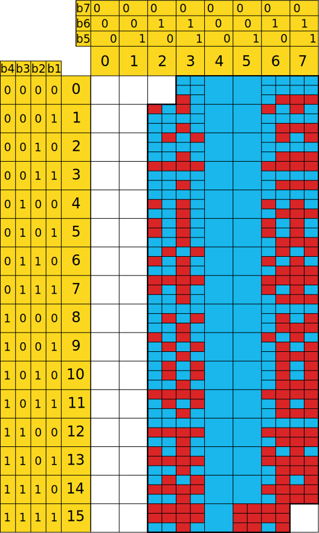
Jeu G1102
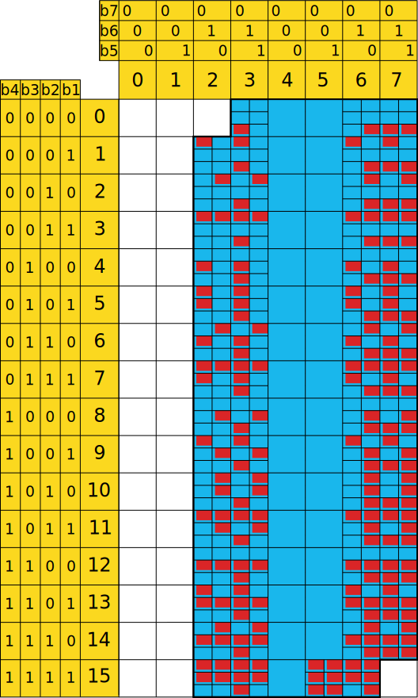
Jeu G1103Jeu G2 (VGP5)104
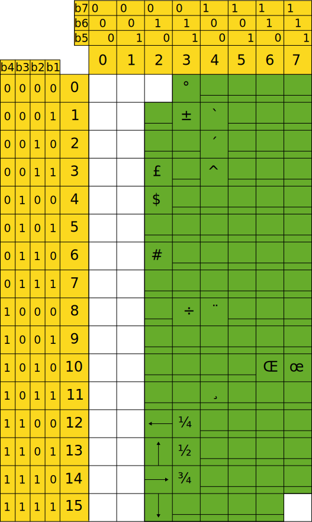
Jeu G2 (VGP2)105
Mode Mixte
Caractéristiques générales
Le mode Mixte permet l'exploitation du Minitel dans un format de 25 rangées de 80 caractères. Les rangées 01 à 24 représentent un écran dont le codage correspond au standard Téléinformatique (norme ISO 6429).
La rangée 00 représente un deuxième écran dont le codage est de type vidéotex conforme à la description faite précédemment dans le paragraphe 1.
Caractéristiques de visualisation
Attributs disponibles en rangée 00
Aucun des attributs définis dans la norme vidéotex (cf. paragraphe 1) n'est disponible en rangée 00.
Cependant, le logiciel effectue les approximations suivantes sur réception des commandes d'attributs :
attributs définis au niveau du caractère
double largeur : le logiciel affiche deux fois le caractère en simple largeur dans les cas des terminaux TELIC et MATRA, et un caractère dans le cas des terminaux RTIC ;
clignotement : les caractères sont fixes ;
inversion de fond : le fond est noir et invariant ;
couleur : tous les caractères sont de couleur blanche ;
attributs définis par zone
lignage : aucun caractère n'est souligné ;
masquage : tous les caractères sont visibles ;
couleur de fond : le fond est noir. Si la couleur de fond est égale à la couleur caractère, celui-ci est cependant lisible ;
les caractères semi-graphiques sont remplacés par des espaces (terminaux TELIC et MATRA) ou le caractère SO est ignoré (terminaux RTIC).
Attributs disponibles sur les rangées 01 à 24
Quatre attributs sont disponibles et définis au niveau de chaque caractère (partie 3, chapitre 2) :
clignotement ;
soulignage ;
inversion de fond ;
surintensité.
Caractéristiques de codage
Initialisation de l'écran
Lorsque l'écran passe du mode Vidéotex au mode Mixte, il se trouve dans les conditions suivantes :
la page est effacée et le format est de 80 colonnes ;
le curseur est visualisé par un tiret clignotant et positionné en rangée 01 colonne 01 ; il ne peut être éteint ;
le mode rouleau est actif ;
les caractères sont visualisés par défaut, en blanc sur fond noir, non soulignés, non surbrillants et fixes ;
le jeu de caractères de base est le jeu GO du vidéotex en rangée 00 et le jeu américain sur les rangées 01 à 24 ;
en rangée 00 les indicateurs C, F f, R et I occupent les positions définies au chapitre 3, paragraphe 2.4.4. de la partie 1.
Il n'y a aucune réinitialisation à la connexion ou à la déconnexion, et le jeu courant reste valide.
106
Codage des caractères visualisables
Caractères visualisables en rangée 00
Tous les caractères alphanumériques contenus dans les jeux G0 et G2 du vidéotex sont disponibles (paragraphe 1). Seule la barre verticale droite (code 0x7D) n'est pas visualisable (version Bu0 et Bu1) ou est approximée par une barre verticale médiane (code 0x7C). Aucun caractère semi-graphique (jeu G1) n'est visualisable. Les caractères reçus entre les codes SO et SI sont remplacés par des espaces dans le cas des terminaux TELIC et MATRA et par le caractère codé de la même manière dans G0 pour les terminaux RTIC.
Caractères visualisables sur les rangées 01 à 24
Tous les caractères des jeux américain et français sont disponibles (partie 3, chapitre 2, paragraphe 4.3). Le passage du jeu américain au jeu français s'effectue par le code SO et le passage inverse par le code SI.
Toutefois, il est nécessaire de préciser les deux points suivants :
la rangée 00 est toujours accessible par la séquence US, 0x40 0xXY. 0xXY peut atteindre la valeur 0x7F (colonne 63). Entre les colonnes 63 et 80 les déplacements du curseur à l'intérieur de la rangée 00 se font grâce aux codes BS et HT ;
la sortie de la rangée 00 ne se produit que sur réception du code LF exclusivement. La position courante, les attributs et le jeu de caractères définis avant l'accès en rangée 00 sont restitués.
Lorsque la position courante varie de la rangée 01 à 24, il n'y a pas de filtrages particuliers, excepté lors de la réception de séquences ISO 2022 et ISO 6429 non définies dans ce document (partie 3, chapitre 2, paragraphe 4.7.) et qui ne peuvent être interprétées.
Lorsque la position courante varie de la rangée 01 à 24 :
Un caractère erroné, détecté par la non conformité de la parité ou du format, 107est affiché sous forme du symbole d'erreur (pavé plein possèdant les attributs courants);
De même, la réception des codes CAN (0x18) ou SUB (0x1A) est visualisée par le symbole d'erreur ;
à chaque réception d'un caractère du jeu C0 (colonnes 0 et 1 du tableau de référence, caractère NUL (excepté) le logiciel se resynchronise et interprète correctement ce dernier caractère.
La compatibilité PAD X-3
Le Minitel peut être simultanément en mode Vidéotex compatible PAD-X3 ou simultanément en mode Mixte compatible PAD-X3. Dans ces deux cas, il conserve, au niveau du module écran, toutes les caractéristiques de décodage précédemment décrites dans les paragraphes 1 et 2.
Cependant, dans les deux cas, le logiciel du module écran filtre le caractère CR qui suit immédiatement les séquences de type ISO 2022 dont le caractère final appartient à la colonne 3 du tableau de référence (usage privé). Ces séquences sont de la forme : ESC, 0x2X 0x2Y ., 0x2Z 0x3X.
Commandes de fonctionnements particulers de l'écran
Adresse du module écran
Le réseau vidéotex ou le périphérique peuvent modifier le fonctionnement de l'écran grâce au langage Protocole (voir partie 2, chapitre 6). En particulier, il est possible de modifier les aiguillages entre le module écran et les autres modules. Pour cela il est nécessaire d'adresser l'écran par les codes réservés suivants :
en émission : 0x50
en réception : 0x58
Fonctionnements particuliers de l'écran
Mode rouleau ou mode page
L'usager peut demander la mise en mode rouleau de l'écran grâce à la commande clavier Fnct E + R.
Pour revenir en mode page, il utilise la commande clavier Fnct E + P. Dans ces deux cas, il y a émission de la séquence SEP 0x56 vers la prise.
Le réseau vidéotex ou le périphérique peuvent de la même façon commander le mode rouleau ou le mode page grâce à des séquences Protocole :
mise en oeuvre du mode rouleau : PRO2, START, ROULEAU
Au passage du mode Vidéotex au mode Mixte, la séquence SEP 0x70 est émise vers le réseau vidéotex et le périphérique.
De même au basculement inverse, la séquence SEP 0x71 est émise des deux côtés.
Choix de la compatibilité PAD-X3
Seul l'utilisateur peut choisir la compatibilité PAD-X3, grâce à la commande Fnct T + /. Cette programmation doit être effectuée en local après la mise sous tension. Cette commande ne peut s'annuler que par la mise hors tension de l'appareil.
Aucun acquittement n'est émis lors du passage dans l'état compatible PAD-X3.
109
Le clavier
110
États standards
En mode Vidéotex
En mode Vidéotex, le clavier est dans un état dit standard dans les cas suivants :
à la mise sous tension du terminal ;
après réception de la séquence Protocole PRO, RESET ;
lors du passage du mode Mixte au mode Vidéotex ou du standard Téléinformatique au standard Téletel ;
après la commande Fnct C + V réalisée par l'usager.
Dans l'état standard certaines fonctions ne sont pas disponibles, il s'agit de :
l'utilisation des touches de gestion du curseur et d'édition, exceptée la touche utilisée seule ;
l'envoi des caractères de contrôle du jeu C0 (colonnes 0 et 1 du tableau de référence) par l'intermédiaire des touches "Ctrl" et "Esc" ;
la répétition automatique des touches.
Dans l'état standard les touches alphabétiques correspondent aux lettres majuscules, les touches de fonction sont codées sous la forme de séquences SEP 0xXY.
L'ensemble des codes ou séquences pouvant être émis par le clavier figure au paragraphe 5.1.
En mode Mixte
Au passage du mode Vidéotex au mode Mixte, le clavier se trouve dans l'état suivant :
les touches alphabétiques correspondent aux lettres minuscules ;
le clavier est "étendu" c'est-à-dire :
les touches de gestion du curseur et d'édition sont valides et leur codage est de type CS ;
l'envoi des caractères de contrôle du jeu C0 par l'intermédiaire de la touche "Ctrl" et de la touche "Esc" est possible ;
la répétition automatique des touches est valide ;
les touches de fonction sont codées sous la forme de séquences SEP 0xXY.
L'état standard du clavier en mode Mixte correspond à l'état standard du clavier en standard Téléinformatique, excepté en ce qui concerne le codage des touches de fonction qui reste du type mode Vidéotex. L'ensemble des codes et séquences pouvant être émis par le clavier en mode Mixte figure au paragraphe 5.2.
États particulers
En mode Vidéotex
La configuration du clavier peut être modifiée, soit par l'usager grâce à la touche "Fnct" (paragraphe 3), soit par le réseau vidéotex ou le périphérique grâce au langage Protocole (partie 2, chapitre 6).
Les modifications possibles sont décrites ci-dessous :
passage en clavier étendu : ceci permet d'utiliser les touches de gestion du curseur et d'édition, l'envoi des caractères de contrôle du jeu C0 grâce aux touches "Ctrl" et "Esc" et de bénéficier de la répétition automatique des touches. Les séquences émises par les touches de gestion du curseur et d'édition sont de type CSI ;
111codage de type C0 pour les touches de gestion du curseur : après avoir étendu le clavier, il est possible de changer le codage des touches de gestion du curseur afin que celles-ci envoient les caractères BS, HT, LF, VT. Dès lors les possibilités d'insertion, de suppression (lignes et caractères) ne sont plus disponibles au clavier ;
inversion majuscules/minuscules : dans cet état, les 26 touches alphabétiques correspondent aux lettres minuscules, et leur association avec la touche spéciale correspond aux lettres majuscules ;
compatibilité PAD-X3 : ce changement est exclusivement permis à l'usager. Il modifie le codage des touches de fonction qui deviennent de type ISO 2022 complétées par le caractère CR. Le transcodage est le suivant :
SEP 0xXY — ESC 0x2Y 0x3X 0x0D, excepté si Y est égal à 5. Dans ce cas on a :
SEP 0xX5 — ESC 0x2F 0x3X 0x0D.
En mode Mixte
La configuration du clavier peut être modifiée, soit par l'usager grâce à la touche "Fnct" (paragraphe 3), soit par le réseau vidéotex ou le périphérique grâce au langage Protocole (partie 2, chapitre 6).
Les modifications possibles sont décrites ci-dessous :
retour au clavier vidéotex standard : cette fonction met le clavier dans l'état défini au paragraphe 1.1. Elle est réservée à l'usager ;
passage en clavier restreint : ceci permet d'invalider les touches de gestion du curseur et d'édition, l'envoi des caractères de contrôle du jeu C0, et l'arrêt de la répétition automatique des touches. C'est la fonction inverse du clavier étendu ; cette commande est réservée au réseau vidéotex ou au périphérique ;
inversion minuscules/majuscules: dans cet état, les touches alphabétiques correspondent aux lettres majuscules, et leur association avec la touche spéciale correspond aux lettres minuscules ;
compatibilité PAD-X3 : ce changement est exclusivement permis à l'usager. Il modifie le codage des touches de fonction qui deviennent de type ISO 2022 complétées par le caractère CR. Le transcodage est le suivant :
SEP 0xXY - ESC, 0x2Y 0x3X 0x0D, excepté si Y est égal à 5. Dans ce cas, on a :
SEP 0xX5 - ESC, 0x2F 0x3X 0x0D.
Comportement par rapport au Protocole
Le clavier diffère des autres modules du Minitel. En effet, l'ensemble des codes émis suivent les aiguillages courants, même lorsqu'il s'agit de l'émission de séquences Protocole (partie 2, chapitre 6).
Cette particularité permet d'émettre, vers le module modem et vers le module prise, n'importe quelle séquence, notamment lorsque le clavier est en mode étendu.
Remarque
En local grâce au bouclage de type 3, il est ainsi possible par l'intermédiaire du clavier d'émettre vers le Protocole n'importe quelle séquence de commande du langage Protocole et donc d'agir sur l'état du Minitel.
112
Liste des actions possibles grâce à la touche "Fnct"
L'usager peut modifier l'état du terminal ou d'un module particulier, et activer le mécanisme de copie d'écran grâce à la touche "Fnct."
Les différentes commandes possibles figurent dans le tableau suivant :
Commande
Action
Mode Vidéotex
Mode Mixte
Clavier
Fnct C + C
Modifie le codage des touches d'édition (CO/CSI) lorsque le clavier est etendu Action en flip-flop
Sans effet
Fnct C + E
Passe le clavier en étendu
Passe le clavier en étendu
Fnct C + M
Inversion minuscules/majuscules Action en flip-flop
Inversion minuscules/majuscules Action en flip-flop
Fnct C + V
Retour au clavier vidéotex standard
Retour au clavier vidéotex standard
Écran
Fnct E + P
Passage de l'écran en mode page
Passage de l'écran en mode page
Fnct E + R
Passage de l'écran en mode rouleau
Passage de l'écran en mode rouleau
Impression
Fnct I + A
Commande de copie d'écran vers la prise jeu américain
Commande de copie d'écran vers la prise jeu américain
Fnct I + F
Commande de copie d'écran vers la prise jeu français
Commande de copie d'écran vers la prise jeu français
Modem
Fnct M + C
Demande de mise en œuvre de la procédure de correction d'erreur Active en connecté uniquement
Demande de mise en œuvre de la procédure de correction d'erreur Active en connecté uniquement
Fnct M + R
Commande d'opposabilité au modem Active en local uniquement
Commande d'opposabilité au modem Active en local uniquement
Prise
Fnct P + I
Inhibition de la prise Action en flip-flop
Inhibition de la prise Action en flip-flop
Fnct P + 1
Vitesse de la prise = 1200 bauds
Vitesse de la prise = 1200 bauds
Fnct P + 3
Vitesse de la prise = 300 bauds
Vitesse de la prise = 300 bauds
Fnct P + 4
Vitesse de la prise = 4800 bauds
Vitesse de la prise = 4800 bauds
Terminal
Fnct T + A
Passage en standard Téléinformatique avec jeu de caractères américain
Passage en standard Téléinformatique avec jeu de caractères américain
Fnct T + E
en local : coupe l'écho local
en connecté : établit l'écho local
Action en flip-flop
en local : coupe l'écho local
en connecté : établit l'écho local
Action en flip-flop
113
Fnct T + F
Passage en standard Téléinformatique avec jeu français
Passage en standard Téléinformatique avec jeu français
Fnct T + V
Retour en standard Télétel mode Vidéotex. Action équivalente à la commande Protocole de reset
Retour en standard Télétel mode Vidéotex. Action équivalente à la commande Protocole de reset
Fnct T + TS et ?
Passage dans l'état compatible PAD-X3. Le retour s'effectue par un Arrêt/Marche du Minitel
Passage dans l'état compatible PAD-X3. Le retour s'effectue par un Arrêt/Marche du Minitel
Actions particulères disponibles au clavier
Arrêt de la copie d'écran
Lorsqu'une copie d'écran est en cours, l'usager peut à tout moment l'arrêter en appuyant sur la touche "Annulation."
Annulation de l'opposabilité du modem en local
Lorsque le modem est en mode opposé (symbole "f" affiché en rangée 00) il est possible de le remettre en mode normal (émission 75 bauds) par un double appui sur la touche "Connexion/Fin."
Action de la touche "Connexion/Fin"
Quels que soient la configuration des aiguillages et l'état du clavier (même bloqué), l'appui simultané sur la touche spéciale et la touche "Connexion/Fin" provoque l'émission de la séquence SEP 0x49 vers la prise. Cette action répétée deux fois consécutivement est utilisée pour réinitialiser la chaîne de périphériques du réseau Minitel.
Tableaux représentant les codes et séquences émis par le clavier
Dans ces tableaux, la colonne "caractère" représente soit le symbole visualisé sur l'écran dans le cas des caractères alphanumériques, soit le nom mnémonique dans le cas des caractères de contrôle.
Dans la colonne "touche ou combinaison de touches" est indiquée la manoeuvre que doit effectuer l'usager pour obtenir le code placé dans la colonne "code émis" :
X : représente l'appui sur la touche sérigraphiée "X";
TS X : représente la combinaison de la touche spéciale avec la touche marquée "X" (appuis simultanés sur les deux touches) ;
Ctrl X : représente la combinaison de la touche marquée "Ctrl" avec la touche marquée "X" (appuis simultanés sur les deux touches).
Remarque
Le tableau 5.1.1. suppose que le clavier est en mode étendu et que les touches alphabétiques correspondent aux lettres majuscules.
114
Codes et séquences émis en mode Vidéotex
Code unique
Code émis (en Hexadécimal)
Caractère
Touche ou combinaison de touches
0x00
NUL
Ctrl '
0x01
SOH
Ctrl A
0x02
STX
Ctrl B
0x03
ETX
Ctrl C
0x04
EOT
Ctrl D
0x05
ENQ
Ctrl E
0x06
ACK
Ctrl F
0x07
BEL
Ctrl G
0x08
BS
Ctrl H
0x09
HT
Ctrl I
0x0A
LF
Ctrl J ou Ctrl :
0x0B
VT
Ctrl K ou Ctrl ;
0x0C
FF
Ctrl L
0x0D
CR
Ctrl M ou ⏎
0x0E
SO
Ctrl N
0x0F
SI
Ctrl O
0x10
DLE
Ctrl P
0x11
Curseur on
Ctrl Q
0x12
REP
Ctrl R
0x13
SEP
Ctrl S
0x14
Curseur off
Ctrl T
0x15
NACK
Ctrl U
0x16
SYN
Ctrl V
0x17
ETB
Ctrl W
0x18
CAN
Ctrl X
0x19
SS2
Ctrl Y
0x1A
SUB
Ctrl Z
0x1B
ESC
Esc
0x1C
FS
Ctrl ,
0x1D
SS3
Ctrl -
0x1E
RS
Ctrl .
0x1F
US
Ctrl ?
1150x20
Espace
Barre espace
0x21
!
TS 1
0x22
"
TS 2
0x23
#
# ou TS 3
0x24
$
TS 4
0x25
%
TS 5
0x26
&
TS 6
0x27
' (VGP2) ou ' (VGP5)
' ou TS 7
0x28
(
TS 8
0x29
)
TS 9
0x2A
*
* ou TS :
0x2B
+
TS ;
0x2C
,
,
0x2D
-
-
0x2E
.
.
0x2F
/
TS ?
0x30
0
0
0x31
1
1
0x32
2
2
0x33
3
3
0x34
4
4
0x35
5
5
0x36
6
6
0x37
7
7
0x38
8
8
0x39
9
9
0x3A
:
:
0x3B
;
;
0x3C
<
TS ,
0x3D
=
TS -
0x3E
>
TS .
0x3F
?
?
1160x40
@
TS '
0x41
A
A
0x42
B
B
0x43
C
C
0x44
D
D
0x45
E
E
0x46
F
F
0x47
G
G
0x48
H
H
0x49
I
I
0x4A
J
J
0x4B
K
K
0x4C
L
L
0x4D
M
M
0x4E
N
N
0x4F
O
O
0x50
P
P
0x51
Q
Q
0x52
R
R
0x53
S
S
0x54
T
T
0x55
U
U
0x56
V
V
0x57
W
W
0x58
X
X
0x59
Y
Y
0x5A
Z
Z
0x5B
[
TS *
0x5C
\
TS Annulation
0x5D
]
TS #
0x5E
↑
TS 0
0x5F
_
Ctrl 6
1170x60
—
Ctrl 5
0x61
a
TS A
0x62
b
TS B
0x63
c
TS C
0x64
d
TS D
0x65
e
TS E
0x66
f
TS F
0x67
g
TS G
0x68
h
TS H
0x69
i
TS I
0x6A
j
TS J
0x6B
k
TS K
0x6C
l
TS L
0x6D
m
TS M
0x6E
n
TS N
0x6F
o
TS O
0x70
p
TS P
0x71
q
TS Q
0x72
r
TS R
0x73
s
TS S
0x74
t
TS T
0x75
u
TS U
0x76
v
TS V
0x77
w
TS W
0x78
x
TS X
0x79
y
TS Y
0x7A
z
TS Z
0x7B
TODO
Ctrl 1 ou TS Répétition
0x7C
|
Ctrl 2
0x7D
TODO
Ctrl 3 ou TS Envoi
0x7E
TODO
Ctrl 4
0x7F
■
Ctrl ←
118
Séquence de deux ou trois codes
Code émis (en Héxadécimal)
Caractère
Touche ou séquence de touches
0x19 0x23
£
Ctrl Annulation
0x19 0x27
_ (VGP2) ou § (VGP5)
TS Correction
0x19 0x2C
←
Ctrl 8
0x19 0x2E
→
Ctrl 9
0x19 0x2F
↓
Ctrl #
0x19 0x30
° (degré)
Ctrl 0
0x19 0x31
±
Ctrl *
0x19 0x38
÷
Ctrl 7
0x19 0x41
` (accent grave)
TS Suite
0x19 0x42
´ (accent aigu)
TS Retour
0x19 0x43
^ (accent circonflexe
TS Sommaire
0x19 0x48
¨
TS Guide
0x19 0x4B 0x63
ç
Ctrl Correction
0x19 0x6A
Œ
Ctrl Retour
0x19 0x7A
œ
Ctrl Répétition
0x19 0x7B
_ (VGP2) ou β (VGP5)
Ctrl Suite
119
Codes et séquences émis en mode Mixte
Les touches de fonction émettent les séquences du standard Télétel figurant dans le tableau du paragraphe 6.
Les autres possibilités sont résumées dans les tableaux suivants.
Code émis (en Hexadécimal)
Caractère
Touche ou combinaison de touches
0x00
NUL
Ctrl '
0x01
SOH
Ctrl A
0x02
STX
Ctrl B
0x03
ETX
Ctrl C
0x04
EOT
Ctrl D
0x05
ENQ
Ctrl E
0x06
ACK
Ctrl F
0x07
BEL
Ctrl G
0x08
BS
Ctrl H
0x09
HT
Ctrl I
0x0A
LF
Ctrl J ou Ctrl :
0x0B
VT
Ctrl K ou Ctrl ;
0x0C
FF
Ctrl L
0x0D
CR
Ctrl M ou ⏎
0x0E
SO
Ctrl N
0x0F
SI
Ctrl O
0x10
DLE
Ctrl P
0x11
XON
Ctrl Q
0x12
DC2
Ctrl R
0x13
XOFF
Ctrl S
0x14
DC4
Ctrl T
0x15
NACK
Ctrl U
0x16
SYN
Ctrl V
0x17
ETB
Ctrl W
0x18
CAN
Ctrl X
0x19
EM
Ctrl Y
0x1A
SUB
Ctrl Z
0x1B
ESC
Esc
0x1C
FS
Ctrl ,
0x1D
GS
Ctrl -
0x1E
RS
Ctrl .
0x1F
US
Ctrl ?
120Code émis (en Hexadécimal)
Caractère
Touche ou combinaison de touches
Jeu américain
Jeu français
0x20
Barre espace
0x21
!
!
TS 1
0x22
"
"
TS 2
0x23
#
£
TS 3 ou #
£
Ctrl Annulation
0x24
$
$
TS 4
0x25
%
%
TS 5
0x26
&
&
TS 6
0x27
’
’
’ ou TS 7
0x28
(
(
TS 8
0x29
)
)
TS 9
0x2A
*
*
* ou TS :
0x2B
+
+
TS ;
0x2C
,
,
,
0x2D
-
-
-
0x2E
.
.
.
0x2F
/
/
TS ?
0x30
0
0
0
0x31
1
1
1
0x32
2
2
2
0x33
3
3
3
0x34
4
4
4
0x35
5
5
5
0x36
6
6
6
0x37
7
7
7
0x38
8
8
8
0x39
9
9
9
0x3A
:
:
:
0x3B
;
;
;
0x3C
<
<
TS ,
0x3D
=
=
TS -
0x3E
>
>
TS .
0x3F
?
?
?
1210x40
@
à
TS ’
0x41
A
A
TS A
0x42
B
B
TS B
0x43
C
C
TS C
0x44
D
D
TS D
0x45
E
E
TS E
0x46
F
F
TS F
0x47
G
G
TS G
0x48
H
H
TS H
0x49
I
I
TS I
0x4A
J
J
TS J
0x4B
K
K
TS K
0x4C
L
L
TS L
0x4D
M
M
TS M
0x4E
N
N
TS N
0x4F
O
O
TS O
0x50
P
P
TS P
0x51
Q
Q
TS Q
0x52
R
R
TS R
0x53
S
S
TS S
0x54
T
T
TS T
0x55
U
U
TS U
0x56
V
V
TS V
0x57
W
W
TS W
0x58
X
X
TS X
0x59
Y
Y
TS Y
0x5A
Z
Z
TS Z
0x5B
[
°
TS *
°
Ctrl 0
0x5C
\
ç
TS Annulation
Ç
Ctrl Correction
0x5D
]
_ VGP2 ou § VGP5
TS #
_ VGP2 ou § VGP5
TS Correction
0x5E
↑
↑
TS 0
0x5F
_
_
Ctrl 6
1220x60
’ VGP2 ou ' VGP5
’ VGP2 ou ' VGP5
Ctrl 5
0x61
a
a
TS A
0x62
b
b
TS B
0x63
c
c
TS C
0x64
d
d
TS D
0x65
e
e
TS E
0x66
f
f
TS F
0x67
g
g
TS G
0x68
h
h
TS H
0x69
i
i
TS I
0x6A
j
j
TS J
0x6B
k
k
TS K
0x6C
l
l
TS L
0x6D
m
m
TS M
0x6E
n
n
TS N
0x6F
o
o
TS O
0x70
p
p
TS P
0x71
q
q
TS Q
0x72
r
r
TS R
0x73
s
s
TS S
0x74
t
t
TS T
0x75
u
u
TS U
0x76
v
v
TS V
0x77
w
w
TS W
0x78
x
x
TS X
0x79
y
y
TS Y
0x7A
z
z
TS Z
0x7B
( VGP2 ou { VGP5
é
Ctrl 1 ou TS Répétition
0x7C
|
ù
Ctrl 2
0x7D
) VGP2 ou } VGP5
è
Ctrl 3 ou TS Envoi
0x7E
_ VGP2 ou ~ VGP5
"
Ctrl 4
"
TS Guide
0x7F
DEL
DEL
Ctrl ←
123
Séquences émises par les touches de fonction en mode Vidéotex ou Mixte ; compatibilityé PAD-X3
Le tableau suivant représente les séquences émises par les touches de fonction que le terminal soit en mode Vidéotex ou en mode Mixte.
Touche
État standard
État compatible PAD-X3
Envoi
0x13 0x41
0x1B 0x21 0x34 0x0D
Retour
0x13 0x42
0x1B 0x22 0x34 0x0D
Repétition
0x13 0x43
0x1B 0x23 0x34 0x0D
Guide
0x13 0x44
0x1B 0x24 0x34 0x0D
Annulation
0x13 0x45
0x1B 0x2F 0x34 0x0D
Sommaire
0x13 0x46
0x1B 0x26 0x34 0x0D
Correction
0x13 0x47
0x1B 0x27 0x34 0x0D
Suite
0x13 0x48
0x1B 0x28 0x34 0x0D
Connexion/Fin
0x13 0x49 vers le modem
0x1B 0x29 0x34 0x0D vers le modem
TS Connexion/Fin
0x13 0x49 vers la prise
0x1B 0x29 0x34 0x0D vers la prise
Ctrl Connexion/Fin
Break vers la prise (local)* ou vers le modem (connecté)
Break vers la prise (local)* ou vers le modem (connecté)
* sauf pour les versions Bu0 et Bu1 de RTIC
124
Codes et séquences émis par les touches de gestion du curseur et d'édition en mode Vidéotex ou Mixte
Touche ou combinaison de touches
Mode Vidéotex standard ou mode Mixte
Mode Vidéotex avec codage de type C0
↑
0x1B 0x5B 0x41
0x0B (VT)
TS ↑
0x1B 0x5B 0x4D (Suppression ligne)
↓
0x1B 0x5B 0x42
0x0A (LF)
TS ↓
0x1B 0x5B 0x4C (Insertion ligne)
→
0x1B 0x5B 0x43
0x09 (HT)
TS →
Premier appui : 0x1B 0x5B 0x34 0x68 (Début insertion caractère)
Deuxième appui : 0x1B 0x5B 0x34 0x6C (Fin insertion caractère)
←
0x1B 0x5B 0x44
0x08 (BS)
TS ←
0x1B 0x5B 0x50 (Suppression caractère)
Ctrl ←
0x7F (DEL)
0x7F (DEL)
⏎
0x0D (CR)
0x0D (CR)
TS ⏎
0x1B 0x5B 0x48 (Home)
0x1E (RS)
Ctrl ⏎
0x1B 0x5B 0x32 0x4A (Effacement page)
0x0C (FF)
125
Le modem
126
Introduction
Dans le standard Télétel, le module modem assure toutes les fonctionnalités décrites dans le chapitre 4 de la partie 1 :
la fonction modem proprement dite ;
le retournement ;
la procédure de correction d'erreur ;
la détection de l'IAI.
La fonction modem
La connexion du modem à la ligne téléphonique par l'usager ou grâce à la séquence PRO, CONNEXION émise par un périphérique provoque l'émission de la séquence SEP 0x59 vers la prise.
La connexion confirmée entraîne l'émission de la séquence SEP 0x53 vers le modem et la prise (sinon une seconde séquence SEP 0x59 est émise vers la prise).
La déconnexion entraîne l'émission des séquences SEP 0x59 et SEP 0x53 vers la prise. Elle est provoquée par l'usager, la réception de la séquence Protocole PRO, DECONNEXION par la prise ou le modem, ou par une coupure de porteuse supérieure à 440ms ± 10ms.
La présence d'une porteuse correspond à l'état 1 du bit DP du status terminal (partie 2, chapitre 6).
Le retournement
Le retournement est commandé par une séquence Protocole PRO, RET1 reçue par le Minitel à 1200 bauds, ou par une coupure de porteuse lorsqu'il reçoit à 75 bauds (ou par la séquence Protocole PRO, RET2).
Le logiciel émet, suivant le cas, différentes séquences :
en cas de retournement réussi, le périphérique reçoit SEP 0x58 puis SEP 0x51 ; le réseau vidéotex reçoit SEP 0x51 ;
dans les autres cas, le réseau vidéotex ne reçoit rien mais le périphérique reçoit :
SEP 0x58, SEP 0x59, SEP 0x53 lors d'un retournement non réussi et d'une déconnexion, alors que le Minitel était en réception 1200 bauds ;
SEP 0x58, SEP 0x58, SEP 0x59, SEP 0x53 dans les mêmes conditions lorsque le Minitel était en réception 75 bauds ;
enfin, lors d'une coupure de porteuse intempestive alors que le Minitel est en réception 75 bauds, le logiciel émet SEP 0x58, SEP 0x58 vers le périphérique.
Le bit VM de l'octet de status terminal suit l'état du modem et est à 1 lorsque le Minitel reçoit à 1200 bauds.
Le bit EC de ce même octet de status terminal est à 1 lorsque le Minitel est dans l'état opposé ; à la connexion le Minitel se comportera alors comme émetteur à 1200 bauds. Cet état est commandé par :
l'usager grâce à l'action: Fnct M + R ;
le périphérique grâce à la commande Protocole: PRO1, OPPO.
Après la connexion, le modem n'est pas retournable ; il faut que le Minitel reçoive la séquence PRO2, OPPORE pour qu'il accepte alors les commandes de retournement inverse.
127
La procédure de correction d'erreur
Elle ne peut être mise en marche que sur réception, par le module modem, de la séquence Protocole: PRO2, START, PROCEDURE.
En provenance de la prise, cette même séquence est transcodée par le Minitel en SEP 0x4A et est envoyée vers le réseau vidéotex comme demande de mise en marche. De façon équivalente, l'action de l'usager Fnct M + C provoque l'émission vers le modem de la séquence SEP 0x4A.
L'arrêt de la procédure de correction d'erreur est effective sur réception, par le module modem, de la séquence: PRO2, STOP PROCEDURE.
Sur réception de cette séquence par le périphérique, le Minitel la transcode en SEP 0x4B transmise vers le réseau vidéotex pour demander l'arrêt de la PCE.
Remarque
Un retournement interrompt momentanément la procédure de correction d'erreur mais ne l'arrête pas. Elle est réinitialisée lors du retournement inverse.
Dans le standard Télétel, quel que soit le mode, la prise péri-informatique permet de connecter des périphériques désirant échanger des données avec le Minitel (l'utilisateur) ou le réseau vidéotex.
Les périphériques ont donc tout pouvoir pour agir sur la configuration du Minitel grâce aux commandes du langage Protocole (partie 2, chapitre 6).
Le réseau Minitel
Plusieurs périphériques peuvent être connectés simultanément sur la prise péri-informatique pour constituer un réseau en chaîne appelé réseau Minitel. Dans ce cas, la gestion des adresses permettant de départager les différents périphériques, et la gestion éventuelle des conflits, ne sont pas couvertes par le Protocole du Minitel.
Pour fonctionner correctement, le réseau Minitel impose donc que chaque module, serveur ou périphérique, possède un logiciel spécifique appelé "système d'échanges," dont la description figure dans les STURM. Au niveau du Minitel, la prise doit être configurée dans l'état standard décrit ci-après pour assurer un fonctionnement correct avec ce réseau de périphériques.
Définition des états de la prise péri-informatique
La prise peut se trouver dans chacun des trois états définis ci-après.
État standard
Tous les fils de la prise sont gérés :
toutes les informations reçues sur le fil Rx sont interprétées par le Minitel ;
toutes les informations destinées au périphérique sont transmises sur le fil Tx ;
le fil PT est géré en entrée et en sortie. Les transitions lues sur ce fil par le Minitel engendrent des séquences SEP 0x54 sur le fil Tx et vers le modem.
La prise est dans l'état standard :
à la mise sous tension du Minitel ;
lorsque l'usager programme la vitesse des échanges à 1200 bauds au moyen de la touche "Fnct"
Remarque
L'état standard est l'état requis pour que le réseau Minitel puisse fonctionner.
État prise inhibée
Cet état permet d'isoler les périphériques du Minitel tout en conservant les possibilités de copie d'écran. Les fils Rx, Tx et PT sont logiquement coupés ; lors d'une copie d'écran, la liaison Tx assure le transfert des données et Rx permet l'asservissement par XON-XOFF Le fil PT n'est pas géré par le Minitel et le bit PT du status terminal est positionné à zéro. Cet état est possible quelle que soit la vitesse des échanges sur la prise.
État hors réseau Minitel
Cet état a pour but de privilégier les actions de l'utilisateur par rapport à celles du périphérique.
Il est obtenu par programmation par l'utilisateur de la vitesse des échanges sur la prise à des valeurs différentesde 1200 bauds.
Cet état permet d'ignorer les transitions du signal PT :
PT n'est plus interprété en entrée, et donc ses transitions n'engendrent pas de SEP 0x54, ne réinitialisent pas les aiguillages ni la vitesse, ni les états décrits au chapitre 6 de la partie 2 ;
PT n'est plus géré en sortie lors du mécanisme de copie d'écran, mais le fil PT est mis à 1 par le Minitel et le bit PT du status terminal est positionné à 0.
131
Si un périphérique change la vitesse programmée par l'utilisateur, l'état hors réseau Minitel est néanmoins conservé.
Remarque
L'utilisateur peut à tout moment modifier l'état de la prise (inhibition, vitesse), sauf lorsqu'une copie d'écran est en cours.
Fonctionnement du module prise
Aiguillages standard
Lorsque le Minitel est connecté, le flux de données reçu par le module modem parvient au module écran et au module prise ; de même, sans commande d'aiguillage particulière, l'ensemble des caractères reçus par le module prise est envoyé vers le réseau vidéotex en étant multiplexé avec les caractères frappés au clavier. Les aiguillages standard permettent donc de brancher un périphérique sans intervention particulière au niveau du Protocole.
Lorsque le Minitel est dans l'état local, les informations reçues par la prise sont transmises à l'écran tandis que ce qui est frappé au clavier est envoyé au module prise mais également au module écran après bouclage par le modem. Dans ces conditions, le Minitel se comporte comme une console de visualisation téléinformatique fonctionnant en mode écho local.
Programmation de la vitesse
À la mise sous tension du terminal ou lors du passage du signal PT de 0 à 1 lorsque la prise est dans l'état standard, la vitesse des échanges entre Minitel et périphérique est de 1200 bauds dans chaque sens (vitesse standard).
À tout moment, ces vitesses peuvent être modifiées soit manuellement par l'usager grâce au clavier du terminal, soit automatiquement par les périphériques.
Programmation par l'usager
L'usager peut programmer la vitesse des échanges avec le périphérique quel que soit l'état du terminal grâce aux commandes suivantes :
Fnct P + 3: 300 - 300 bauds
Fnct P + 1: 1200 - 1200 bauds
Fnct P + 4: 4800 - 4800 bauds
Si l'usager choisit la vitesse 1200-1200 bauds, le terminal gère les variations du signal PT conformément au paragraphe 14.3 du chapitre 6 de la partie 2. Cette vitesse doit être impérativement choisie si l'on branche sur la prise des périphériques répondant à la spécification du réseau Minitel.
Si les autres vitesses sont choisies, le terminal ne gère plus les changements d'état du signal PT. Il est alors dans un environnement différent de celui décrit dans la spécification du réseau Minitel. La prise est dans l'état hors réseau Minitel (paragraphe 2.3).
Programmation par le périphérique
Un périphérique peut modifier les vitesses d'échange grâce à une séquence de type PRO2, PROG, octet de programmation vitesse dans laquelle l'octet de programmation vitesse a la configuration suivante :
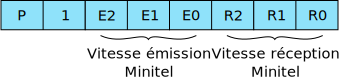
132
Les champs de trois bits peuvent prendre les valeurs :
010 = 300 bauds
100 = 1200 bauds
110 = 4800 bauds
Dans le Minitel 1B les 3 bits caractérisant l'émission sont toujours égaux aux trois bits caractérisant la réception.
Les échanges avec la prise à la suite d'une commande de vitesse ne sont valides qu'après l'émission par le module prise d'une séquence d'acquittement de type PRO2, REP STATUS VITESSE, octet de status vitesse. Cet acquittement est transmis vers le périphérique avec les nouvelles vitesses programmées. Si le Minitel ne dispose pas de la vitesse demandée, un acquittement est renvoyé avec l'ancienne vitesse. Si le Minitel est déjà à la vitesse demandée, il renvoie une séquence d'acquittement. Si l'usager a choisi 1200 — 1200 bauds et que le périphérique modifie ce choix, toute remontée du signal PT à 1 provoque le retour à la vitesse programmée par l'usager. Un périphérique peut donc modifier la vitesse de la prise du Minitel mais ne peut pas changer son état.
Programmation de l'inhibition de la prise et de l'état hors réseau Minitel
Mise en oeuvre
La mise en oeuvre de l'état prise inhibée (état PI) est provoquée grâce à la commande Fnct P + I ; l'arrêt est provoqué par la même action. Une lettre ("I" en fond inversé) est affichée en rangée 00 pendant cet état PI pour avertir l'usager. Le périphérique ou le réseau ne peuvent pas commander l'état prise inhibée.
Dès que l'usager, grâce à la touche "Fnct" programme la vitesse de la prise péri-informatique à une valeur différente de 1200-1200 bauds, le module prise passe dans l'état hors réseau Minitel.
Cas particuliers
Activation de l'état PI et de l'état hors réseau Minitel :
si le signal PT = 1, l'activation de l'état PI ou de l'état hors réseau Minitel ne provoque l'envoi d'aucune séquence vers la prise ou le modem ;
si le signal PT = 0, l'activation de l'état PI ou de l'état hors réseau Minitel provoque l'envoi de la séquence SEP 0x54 vers le modem, la mise à jour du bit PT du status terminal et les mêmes actions que lors d'une transition physique 0 → 1 du signal PT (PT à l'état inactif).
Désactivation de l'état PI et de l'état hors réseau Minitel :
si le signal PT = 1, l'arrêt ne provoque l'envoi d'aucune séquence vers la prise ou le modem ;
si le signal PT = 0, l'arrêt de l'état PI ou de l'état hors réseau Minitel provoque l'envoi de SEP 0x54 vers le modem et la prise, et la mise à jour du bit PT du status terminal.
Remarque
Pendant l'état PI et l'état hors réseau Minitel, le bit PT du status terminal est à l'état inactif et le Minitel maintient à la valeur 1 son fil PT en sortie.
Quel que soit l'état du fil PT, les transitions de l'état PI à l'état hors réseau Minitel ou inversement ne provoquent l'émission d'aucune séquence ; l'état inactif du bit PT du status terminal est conservé.
133
Le Protocole
134
Généralités
En standard Télétel, l'ensemble des modules (écran, clavier, modem, prise) du Minitel est géré et contrôlé par un logiciel centralisé appelé Protocole.
Ce logiciel assure principalement l'aiguillage des données entre les modules ainsi que la mise en oeuvre de fonctionnements particuliers du terminal ou des modules à l'aide de commandes élémentaires constituant le langage Protocole.
Le langage Protocole, qui ne constitue pas à proprement parler des données, n'est pas soumis au mécanisme des aiguillages.
Pour assurer la mise en relation des modules, chacun d'eux dispose d'un code émission et d'un code réception. Ces codes, d'un octet chacun, interviennent dans le langage Protocole. Ils sont les suivants :
Module
Codes émissions
Codes réception
Écran
0x50
0x58
Clavier
0x51
0x59
Modem
0x52
0x5A
Prise
0x53
0x5B
Remarque
Les Minitel avec numéroteur téléphonique intégré disposent d'un module téléphonique.
Certains Minitel haut de gamme possèdent un second module prise.
Le Langage Protocole
Tous les ordres concernant le Protocole ou tous les messages engendrés par le Protocole sont introduits par des séquences différentes suivant le nombre d'octets utilisés :
ESC, 0x39, X = PRO, X
ESC, 0x3A, X, Y = PRO2, X, Y
ESC, 0x3B, X, Y, Z = PRO3, X, Y, Z
Ces séquences sont interprétées prioritairement, c'est-à-dire que le logiciel est capable d'extraire une séquence Protocole à l'intérieur de toute autre séquence, vidéotex ou de type CSI. La séquence ESC, 0x61 (demande de position curseur) fait également partie du langage Protocole. De plus certaines séquences du type SEP X sont émises par le Protocole. Toutes ces commandes sont interprétées par le Protocole et ne sont transmises à aucun module. Le Protocole envoie généralement une séquence d'acquittement pour toute commande reçue.
Commandes d'aiguillage et de blocage des modules
Définitions
À la mise sous tension, lors d'une connexion ou déconnexion du modem ou lors d'une fin de session du réseau Minitel sur la prise, le Minitel est configuré avec des aiguillages standard (partie 2, chapitre 1) et tous les modules sont actifs.
Cependant, le réseau vidéotex ou le périphérique peuvent engendrer des commandes d'aiguillage qui permettent, soit de relier un module émetteur avec un ou plusieurs modules récepteurs, soit de couper des liaisons existantes entre un module émetteur et un ou plusieurs modules récepteurs.
135
Les interventions exécutables sur les aiguillages sont résumées dans le tableau suivant :
Module récepteur
Module émetteur
Prise
Modem
Clavier
Écran
Prise
●
⨯
⨯
Modem
⨯
●
⨯
Clavier
●
Écran
⨯
⨯
⨯
●
⨯ : aiguillages exécutables
● : disponibilité du module (actif ou bloqué) ressource que constitue le module lui-même.
Les commandes d'aiguillages sont exécutées quel que soit l'état des modules.
Les problèmes de temporisation, liés à la durée de transmission ou au temps de prise en compte des commandes, ne sont pas à la charge du Protocole.
L'utilisateur du Minitel 1B a la possibilité, grâce à la commande Fnct T + E, d'agir sur l'aiguillage clavier vers modem (en local) ou l'aiguillage clavier vers écran (en connecté). Ces aiguillages sont du même type que ceux réalisés par des commandes Protocole ; les status correspondants sont mis à jour. Cependant les transitions 0 → 1 du fil PT ne modifient pas l'écho local programmé par l'utilisateur.
Format des commandes
Les commandes d'aiguillages ont pour format : PROS, CODE COMMANDE, code réception du module récepteur, code émission du module émetteur.
Les codes commandes d'aiguillage sont :
OFF (0x60) : pour rompre la liaison entre le module émetteur et le module récepteur ;
ON (0x61) : pour établir la liaison entre le module émetteur et le module récepteur spécifié, sans modifier les autres liaisons.
Le Protocole peut recevoir une commande d'aiguillage de n'importe quel module et il exécute les commandes au fur et à mesure qu'elles lui arrivent.
Blocage-déblocage des modules
Lorsque dans une commande, le module récepteur et le module émetteur sont identiques, le Protocole effectue un blocage ou un déblocage.
Le format des commandes de blocage ou de déblocage est donc : PRO3, CODE COMMANDE, code réception du module concerné, code émission du même module.
Blocage (OFF)
Le blocage permet temporairement d'empêcher tous les échanges d'informations des autres modules avec le module désigné :
clavier : le clavier est inhibé sauf pour les actions utilisant "Fnct" et la touche "Connexion/Fin" ;
écran: les rangées 00 à 24 de l'écran ne sont plus modifiables ; les informations locales affichées par le Minitel en rangée 00 sont toujours mises à jour ;
modem: exceptées les commandes du Protocole émises ou reçues, le Break, les séquences SEP 0x49 (appui sur la touche "Connexion/Fin" dans l'état connecté), SEP 0x4A (demande de mise en route PCE) et SEP 0x4B (demande 136 d'arrêt PCE), SEP 0x4C et SEP 0x4D (demandes de retournement) engendrées par le Protocole, aucune autre information ne peut plus transiter entre le module modem et un autre module ;
prise : comme pour le module modem, exceptées les commandes du Protocole, la séquence SEP 0x49 (transmise à la suite de l'action touche spéciale "Connexion/Fin") et le Break ("Ctrl" "Connexion/Fin" exécuté en local) aucune autre information ne peut plus transiter.
Déblocage (ON)
Le module concerné est de nouveau disponible et les échanges de données sont de nouveau autorisés.
Demande de status d'aiguillages des modules
Chaque module peut faire une demande de status à n'importe quel moment afin d'avoir connaissance soit du contexte d'aiguillage, soit de l'état d'un module en tant que récepteur ou émetteur.
Ces commandes de status comprennent une demande et une réponse, et ont pour format :
demande de status récepteur ou émetteur d'un module : PRO2, TO (0x62), code réception ou émission ;
réponse à la demande (séquence d'acquittement) PROG, FROM (0x63), code réception ou émission du module, suivi de l'octet de status d'aiguillage récepteur ou émetteur de ce module. La réponse est envoyée par le Protocole uniquement au module ayant émis la demande, quel que soit par ailleurs le positionnement des aiguillages concernant ce module ;
octet de status associé à un module.
Le Protocole envoie un octet pour chaque module concerné. Cet octet contient, suivant la demande effectuée, le status de tous les aiguillages des autres modules vers ce module ou à partir de ce module.
Le format de l'octet de status d'aiguillage est le suivant :
L'octet de status contient également l'état de la ressource que constitue le module lui-même. Les bits de la diagonale du tableau du paragraphe 3.1. représentent cet état avec la convention suivante :
0 : module bloqué
1 : module débloqué ou actif
Remarque
Le bit b4 est réservé au module téléphonique pour les versions de Minitel avec numéroteur intégré.
Le bit b5 est réservé pour une utilisation ultérieure sur certaines versions de Minitel.
Acquittement des commandes d'aiguillages et de blocage
Lorsqu'il reçoit une commande d'aiguillage ou de blocage, le Protocole l'exécute et, en standard, répond par un acquittement, c'est-à-dire qu'il fournit le nouveau status récepteur du module récepteur concerné après exécution de la commande.
137
Le format de l'acquittement est : PRO3, FROM (0x63), code réception du module récepteur, status d'aiguillage du module récepteur concerné.
La séquence d'acquittement est envoyée dans le cas général au module initiateur de la commande d'aiguillage, sauf lorsque ce module est en non-retour d'acquittement (paragraphe 4).
Le Protocole filtre toutes les séquences d'acquittement qu'il reçoit en écho, soit de la base de données, soit d'un périphérique.
Une commande d'aiguillage ou de blocage correspondant à des actions déjà réalisées provoque également le retour d'un acquittement
Ordre de diffusion et de retour d'acquittement
Définitions
Les commandes d'ordre de diffusion permettent d'envoyer les séquences d'acquittement également vers les autres modules qui voudraient être avertis à tout moment des changements de positionnement d'aiguillage, effectués dans le terminal.
Les commandes de non retour d'acquittement permettent à un module de ne plus recevoir aucune séquence d'acquittement d'aiguillage, de blocage, de changement de mode de fonctionnement (exceptée la procédure de correction d'erreur) ou de changement de vitesse de la prise, même lorsqu'il est initiateur de la commande. Par contre, toutes les demandes de status effectuées par un module en mode non retour d'acquittement restent exécutées normalement et il continue de recevoir les séquences de type SEP X émises par le Protocole.
Format des commandes
Format des commandes de diffusion
Le format de ces commandes de diffusion est: PRO2, CODE DE COMMANDE, code récepteur.
Les codes de commande sont :
NON DIFFUSION (0x64) : le module, désigné par le code réception, ne recevra que les séquences d'acquittement, dont il est l'initiateur.
DIFFUSION (0x65) : le module, désigné par le code réception, recevra toutes les séquences d'acquittement d'aiguillages quel que soit le module initiateur ;
Le Protocole envoie une réponse de type status Protocole (paragraphe 4.3.) à tous les modules lors d'une modification de l'état de diffusion.
Format des commandes de retour d'acquittement
Le format de ces commandes de retour d'acquittement est PRO2, CODE DE COMMANDE, code émetteur.
Les codes de commandes sont :
NON RETOUR D'ACQUITTEMENT (0x64) : le module, désigné par le code émission ne recevra plus aucune séquence d'acquittement. Cette commande n'est pas acquittée.
RETOUR D'ACQUITTEMENT (0x65) : le module, désigné par le code émission reçoit tous les acquittements à ses propres commandes d'aiguillage, changement de mode de fonctionnement, changement de vitesse prise. De plus, s'il est dans l'état diffusion, il reçoit toutes les séquences d'acquittements d'aiguillages effectuées par les autres modules. Cette commande est acquittée par l'envoi d'un status Protocole vers le module émetteur.
À la mise sous tension et lors d'une connexion ou d'une déconnexion du modem, le Minitel se met en non diffusion et en retour d'acquittement pour tous les modules récepteurs. L'état non retour d'acquittement du module prise disparaît lors des variations O → 1 du signal PT lorsque la prise est dans l'état standard.
138
Remarque
Le non retour d'acquittement est prioritaire par rapport à la diffusion. Cependant les bits de diffusion de l'octet de status Protocole sont mis à jour même si le module concerné est en non retour d'acquittement.
La programmation du non retour d'acquittement d'un module ne peut être commandée que par ce même module. Si la commande provient d'un autre module elle est ignorée.
Les commandes de diffusion et de non diffusion, de retour d'acquittement et de non retour d'acquittement sont ignorées pendant la copie d'écran pour la version Bu0 et Bu1 de RTIC.
Status Protocole
Le status Protocole indique l'état de diffusion des acquittements d'aiguillage et l'état de retour d'acquittement. Le format de la commande est :
demande: PRO, STATUS PROTOCOLE (0x76) ;
réponse: PRO2, REP STATUS PROTOCOLE (0x77), octet de status Protocole.
L'octet de status Protocole a la configuration suivante :
P
1
0
PAD
A2
A1
D2
D1
P : bit de parité
D1 : 0 si les acquittements sont diffusés vers le modem
D2 : 0 si les acquittements sont diffusés vers la prise
A1 : 1 si le modem est en mode non retour d'acquittement
A2 : 1 si la prise est en mode non retour d'acquittement
PAD : 1 si la compatibilité PAD-X38 est active (paragraphe 12.3)
Commande de la transparance Protocole
Sur réception de la séquence PRO2, TRANSPARENCE (0c66), nombre d'octets venant du module prise ou du module modem, le Protocole n'interprète pas l'ensemble des codes qui suivent immédiatement cette séquence.
Cette séquence permet de transmettre en transparence un nombre d'octets compris entre 1 et 127. Les codes 0x00 ne sont pas comptabilisés lorsqu'ils proviennent du module modem.
Le Protocole acquitte la commande par la séquence SEP 0x57 envoyée vers le module initiateur de la demande.
Après la réception du nombre d'octets déterminés, le retour en mode non transparent ne provoque l'envoi d'aucune séquence.
Une erreur de parité sur le nombre d'octets annule la commande et l'acquittement n'est pas transmis.
Lorsque la procédure de correction d'erreur est active, le nombre d'octets correspond à tous les codes transmis au Protocole par le modem.
Demandes d'identification et de position curseur
Demande d'identification du Minitel
Le réseau vidéotex ou le périphérique ont la possibilité de lire les données d'identification contenues dans le bloc ROM du microprocesseur.
Le bloc ROM comprend trois octets entourés par SOH et EOT. Ces octets définissent respectivement :
Le traitement de la demande d'identification est géré au niveau Protocole.
La séquence de demande d'identification est PRO, ENQROM (0x7B)
Remarque
Les séquences de téléchargement des deux zones en mémoire sauvegardée des Minitel 1 sont filtrées par le Protocole mais les données qui suivent, y compris SOH et EOT, transitent suivant les aiguillages.
La séquence correspondant à la demande d'identification du bloc 2 des Minitel 1 est filtrée par le Minitel 1B.
Le code ENQ (identification du bloc 1) est transmis suivant les aiguillages.
Demande de position du curseur
Un périphérique ou le réseau vidéotex peut demander à tout moment la position du curseur dans l'écran. La réponse est envoyée au demandeur quels que soient les aiguillages du module demandeur et donc même si celui-ci est bloqué.
Les formats de la demande et de la réponse sont :
demande : ESC, 0x61 ;
réponse : US, rangée, colonne.
Commandes relatives au modem
Connexion - déconnexion
Ces commandes ne concernent que le module modem. Lors d'une déconnexion, les conséquences de cette commande sont identiques à celles résultant d'une action de la touche "Connexion/Fin" enfoncée une deuxième fois consécutivement à un premier appui sur la même touche (ou après coupure de porteuse supérieure à 440ms ± 10ms). Le Minitel passe alors dans l'état local.
Si le Protocole reçoit de la prise une commande de connexion, il doit assurer la connexion du modem et la liaison est établie s'il y a présence de porteuse ; cette commande a donc le même effet que la touche "Connexion/Fin." La commande de connexion peut être engendrée par un périphérique et la commande de déconnexion par un périphérique ou par le réseau vidéotex. Ces commandes sont inefficaces lorsque le terminal est déjà dans l'état demandé.
Ces commandes ont pour format :
connexion : PRO, CONNEXION (0x68) ;
déconnexion : PRO, DECONNEXION (0x67).
La réception de la séquence de déconnexion, envoyée par un périphérique en phase de connexion automatique, provoque le retour immédiat à l'état local.
Activation de la procédure de correction d'erreur
La mise en oeuvre de la procédure de correction d'erreur (PCE) peut être initialisée par le réseau vidéotex, l'utilisateur (grâce à l'action Fnct M + C) ou un périphérique. Cependant, il convient de rappeler que c'est toujours le réseau vidéotex qui commande la mise en marche ou l'arrêt de la PCE.
Ainsi, suite à l'action de l'utilisateur ou à la séquence de commande de fonctionnement PRO2, START, PROCEDURE (0x69 0x44) venant d'un périphérique, le Protocole transmet vers le réseau vidéotex la séquence SEP 0x4A quels que soient les aiguillages et la disponibilité du module modem. Ce n'est qu'après réception de la séquence PRO2, START, PROCEDURE en provenance du réseau vidéotex que le Minitel active la procédure. En réponse, le Protocole renvoie une séquence de status mode de fonctionnement vers le modem (paragraphe 11), et le périphérique reçoit la séquence SEP 0x56.
140
Arrêt de la procédure de correction d'erreur
Le Minitel ne met plus en oeuvre la procédure de correction d'erreur lorsqu'il reçoit, en provenance du réseau vidéotex à l'intérieur d'un bloc, la séquence PRO2, STOP PROCEDURE (0x6A, 0x44).
Lorsque le module prise reçoit la séquence PRO2, STOP PROCEDURE, en provenance d'un périphérique, le Protocole envoie la séquence SEP 0x4B vers le réseau vidéotex quels que soient les aiguillages et la disponibilité du module modem. Cette séquence permet de demander au réseau vidéotex de commander l'arrêt de la procédure. L'arrêt effectif de la procédure provoque l'envoi d'une séquence de status mode de fonctionnement vers le modem (paragraphe 11et le périphérique reçoit la séquence SEP 0x56.
Commandes de retournement du modem
Les commandes sont :
Retournement pour que le Minitel émette à 1200 bauds et reçoive à 75 bauds.
Commande : PRO, RET1 (0x6C).
Acquittement reçu par le réseau vidéotex : SEP 0x51.
Acquittements reçus par le périphérique :
SEP 0x58, SEP 0x51 si le retournement réussit ;
SEP 0x58, SEP 0x59, SEP 0x53 si le retournement échoue (déconnexion).
Retournement pour que le Minitel émette à 75 bauds et reçoive à 1200 bauds (retournement inverse).
Commandes : PRO, RET2 (0x6D) ; ou coupure de la porteuse 75 bauds du réseau vidéotex.
Acquittement reçu par le réseau vidéotex : SEP 0x51.
Acquittements reçus par le périphérique :
SEP 0x58, SEP 0x51 si le retournement réussit ;
SEP 0x58, SEP 0x58 si la coupure de la porteuse 75 bauds est intempestive (double retournement) ;
SEP 0x58, SEP 0x58, SEP 0x59, SEP 0x53 si le retournement échoue et conduit à la déconnexion.
Acquittement reçu en provenance du réseau vidéotex: PRO, ACRET (0x6E).
Remarque
Une commande ou une demande de retournement déjà effectuée ne provoque aucune action.
Le retournement interrompt automatiquement la PCE. Lors du retournement inverse, la PCE sera reprise avec numérotation des blocs à partir de 0.
Retournement pour que le Minitel émette à 1200 bauds à la connexion (mode opposé).
Dans l'état local le retournement du modem pour mettre le Minitel dans l'état opposé est commandé par un périphérique grâce à la séquence PRO, OPPO (0x6F) ou par l'utilisateur grâce à la commande Fnct M + R. Ces commandes sont acquittées par la séquence SEP 0x50 émise vers la prise et le logiciel met à 1 le bit EC du status terminal (paragraphe 14.2).
Dans l'état opposé, les commandes de retournement décrites ci-dessus sont sans effet. Le passage du mode opposé au mode retournable est commandé par la séquence PRO2, OPPORE (0x6F 0x31) émise par le périphérique ou le réseau vidéotex.
Cette commande est acquittée par la séquence PRO2, REP STATUS TERMINAL (0x71), octet de status envoyée vers le module initiateur de la commande. Dans l'octet de status le bit EC est positionné à zéro. Cette fonctionnalité offre l'avantage de pouvoir fonctionner à 1200 bauds à l'alternat entre deux Minitel.
141
Commandes relatives à la prise
À tout moment, un périphérique peut modifier les vitesses d'échange de la prise.
Format de la commande
Cette commande a pour format PRO2, PROG (0x6B), octet de programmation vitesse.
L'octet de programmation vitesse a la configuration suivante :
P
1
E2
E1
E0
R2
R1
R0
P : bit de parité
001 = 75 bauds
E : vitesse d'émission
010 = 300 bauds
R : vitesse de réception
100 = 1 200 bauds
110 = 4 800 bauds
Le Minitel 1B ne dispose en version de base que des vitesses symétriques 300-300 bauds, 1200-1200 bauds, 4800-4800 bauds.
Acquittement
Le Protocole acqauitte cette commande par l'envoi vers le périphérique de la séquence : PRO2, REP STATUS VITESSE (0x75), octet de status vitesse.
L'octet de status est identique à l'octet de programmation vitesse. Cette séquence est envoyée avec la nouvelle vitesse.
Si le Minitel ne dispose pas de la vitesse demandée, un acquittement est renvoyé avec l'ancienne vitesse.
Si le Minitel est déjà à la vitesse demandée, il renvoie un status vitesse.
Status vitesse
Ce status correspond à la programmation de la vitesse du module prise. Le format de la commande est :
demande : PRO, STATUS VITESSE (0x74) ;
réponse : PRO2, REP STATUS VITESSE (0x75), octet de status vitesse.
Remarque
L'action de l'utilisateur sur le clavier pour le changement de vitesse avec la touche "Fnct" remet à jour le status vitesse mais n'engendre pas l'envoi d'un status.
La programmation par l'utilisateur à une vitesse différente de 1200 bauds met la prise dans l'état hors réseau Minitel (partie 2, chapitre 5 paragraphe 2.3).
Commandes relatives au clavier
Commande des modes de fonctionnement du clavier
Le Minitel 1B possède plusieurs configurations du clavier. Il est possible, grâce au langage Protocole, de programmer ce module et d'en connaître son état.
Format des commandes
Mise en œuvre : PROG, START (0x69), code récepteur clavier, mode de fonctionnement.
Les codes spécifiques à chaque mode de fonctionnement sont :
ETEN (0x41) : clavier en mode étendu
C0 (0x43) : codage des touches de gestion du curseur avec des codes des colonnes 00 et 01 du tableau ASCII.
142
Ces commandes peuvent être émises par le réseau vidéotex ou un périphérique.
Acquittement
Ces commandes sont acquittées par le Protocole vers le module initiateur par la séquence :
PROG, REP STATUS CLAVIER (0x73), code récepteur clavier, octet de status fonctionnement clavier.
L'octet de status fonctionnement clavier a la configuration suivante :
P
1
0
0
0
C0
0
Eten
Eten : mode étendu (1 = actif)
C0 : codage en jeu C0 des touches de gestion du curseur (1 = actif)
Les deux modes de fonctionnement peuvent être programmés par l'usager grâce à la touche "Fnct." Dans ce cas, l'octet de status fonctionnement clavier est mis à jour, mais aucun acquittement n'est transmis aux modules.
Status mode de fonctionnement du clavier
Ce status correspond à la programmation des modes de fonctionnement du clavier. La syntaxe est :
demande : PRO2, STATUS CLAVIER (0x72), code récepteur clavier ;
réponse : PROG, REP STATUS CLAVIER (0x73), code récepteur clavier, octet de status fonctionnement clavier.
Remarque
Quel que soit l'état du clavier, l'utilisateur peut mettre celui-ci dans un état standard grâce à la commande Fnct C + V. Tous les bits du status fonctionnement clavier sont remis à zéro.
La même action est provoquée par la réception de la commande PRO, RESET (0x7F) (paragraphe 13.2) par le Protocole.
Le verrouillage minuscules/majuscules
Cette possibilité fait partie des commandes de modes de fonctionnement des modules (paragraphe 11). Elle est activée par l'utilisateur grâce à l'action Fnct C + M, ou par les autres modules par une commande Protocole de type PRO2, START (0x69), mode de fonctionnement (paragraphe 11.1).
Commandes relatives à l'écran
Le mode rouleau - le mode page
Cette possibilité correspond à une commande de mode de fonctionnement des modules. Elle peut être activée par l'utilisateur, par l'action :
Fnct E + R pour le mode rouleau ;
Fnct E + P pour le mode page ;
et par le périphérique ou le réseau vidéotex, par des commandes Protocole équivalentes (paragraphe 11).
Les commandes de copie d'écran vers la prise
Il existe des commandes équivalentes aux actions de l'utilisateur pour que le périphérique ou le réseau vidéotex puisse déclencher la copie d'écran vers le module prise.
Le format de la commande est : PRO2, COPIE (0x7C), code de commande. Les différents codes de commande sont :
0x6A : recopie en jeu français ;
0x6B : recopie en jeu américain.
143
Remarque
La commande Protocole PRO1, RESET (0x7F) arrête la copie d'écran. Après la réception de cette commande une temporisation de 500ms est nécessaire pour que le Minitel transmette correctement les caractères reçus du modem vers la prise.
Commandes relativces à plusieurs modules
Format des commandes de mode de fonctionnement des modules
La syntaxe des commandes est :
Mise en oeuvre : PRO2, START (0x69), mode de fonctionnement
Arrêt : PRO2, STOP (0x6A), mode de fonctionnement.
Les codes spécifiques à chaque mode de fonctionnement sont :
ROULEAU (0x43) : mode rouleau ;
PROCEDURE (0x44) : procédure de correction d'erreur (PCE) ;
MINUSCULES (0x45) : mode minuscules/majuscules du clavier.
Ces commandes peuvent être émises par le réseau vidéotex ou par un périphérique.
Remarque
La PCE ne concerne que la liaison réseau vidéotex - terminal ;
lors d'un changement de mode de fonctionnement commandé par le module modem ou le module clavier, le Protocole envoie la séquence SEP 0x56 vers le module prise ; la même opération commandée par le module prise est acquittée mais ne provoque pas l'émission de la séquence SEP 0x56 vers le module modem.
Acquittement
Ces commandes sont acquittées par le Protocole par la séquence : PRO2, REP STATUS FONCTIONNEMENT (0x73), octet de status fonctionnement.
L'octet de status fonctionnement a la configuration suivante :
P
1
0
0
ME
PC
RL
F
P : bit de parité
ME : mode minuscules/majuscules du clavier (1 = minuscule)
PC : PCE (1 = actif)
RL : rouleau (1 = actif)
F : format d'écran (1 = 80 colonnes)
Remarque
Lorsque le Minitel passe en standard Télétel mode Mixte, les bits 0, 1 et 3 sont mis à 1 pour indiquer le passage en 80 colonnes (bit 0), le passage en rouleau (bit 1) et le passage en minuscules (bit 3).
Il n'est pas possible, par une commande de changement de mode de fonctionnement, de changer le format de l'écran lorsque le Minitel est en mode Vidéotex. Ce mode n'existe pas sur le Minitel 1B.
Les commandes de mise en marche et arrêt de la PCE en provenance de la prise ne sont pas acquittées par le Protocole car elles sont interprétées par le Minitel et la demande est transmise au réseau vidéotex (paragraphe 7.2).
Status mode de fonctionnement des modules
Ce status correspond à la programmation des modes de fonctionnement particulier. La syntaxe est :
demande : PRO, STATUS FONCTIONNEMENT (0x72) ;
réponse : PRO2, REP STATUS FONCTIONNEMENT (0x73), octet de status fonctionnement.
144
Commandes Protocale relatives au changement de standard
Le passage du standard Télétel mode Vidéotex au standard Télétel mode Mixte ou inversement
Les commandes sont les suivantes :
Passage du mode Vidéotex au mode Mixte et jeu américain :
PRO2, MIXTE1 (0x32, 0x7D)
l'acquittement correspondant est la séquence SEP, 0x70 envoyée vers le module prise et vers le module modem. Le changement de jeu s'effectue sur réception par le module écran de SO (jeu français) et SI (retour au jeu américain). Les bits 0, 1 et 3 de l'octet de status mode de fonctionnement des modules sont mis à 1. Le bit 0 du status de fonctionnement du clavier est mis à 1 pour indiquer le mode étendu. Le codage du clavier d'édition est en CSI (bit 2 du status de fonctionnement du clavier à 0);
Passage du mode Mixte au mode Vidéotex :
PRO2, MIXTE2, (0x32, 0x7E)
l'acquittement correspondant est la séquence SEP 0x71 envoyée vers le module prise et vers le module modem. Les bits 0, 1 et 3 de l'octet de status mode de fonctionnement ainsi que le bit 0 du status de fonctionnement clavier sont remis à zéro.
Les passages d'un mode à un autre peuvent se faire par le réseau vidéotex ou un périphérique.
Le passage du standard Télétel au standard Téléinformatique ou inversement
Les commandes sont les suivantes :
Passage du standard Télétel au standard Téléinformatique jeu américain : PRO2, TELINFO (0x31, 0x7D)
Cette transition bloquant le Protocole, l'acquittement ne fait pas partie du langage Protocole. Il est de type CSI: CSI, 0x3F 0x7A
Cet acquittement est envoyé vers le module initiateur de la commande (sauf si le Minitel est connecté et que l'initiateur de la commande est la prise). Le changement de jeu s'effectue sur réception de SO (jeu Français) et SI (retour au jeu américain) ;
Passage du standard Téléinformatique au standard Télétel :
Le Protocole étant bloqué, la commande est de type CSI : CSI, 0x3F 0x7B
L'acquittement est équivalent à l'acquittement de la commande de reset, c'est-à-dire : SEP 0x5E. Cette séquence est envoyée vers le module prise et vers le module modem.
Les passages d'un standard à l'autre peuvent se faire par l'utilisateur, grâce aux commandes :
Fnct T + A : standard Téléinformatique, jeu américain ;
Fnct T + F : standard Téléinformatique, jeu français ;
Fnct T + V : standard Télétel.
Les deux premières actions produisent un acquittement de type CSI, 0x3F 0x7A vers la prise si le Minitel est en local. Aucun acquittement n'est émis si le Minitel est connecté.
La dernière action est équivalente à la commande de reset (paragraphe 13.2).
145
Le passage dans l'état compatible PAD-X3
Ce passage s'effectue par une commande utilisateur: Fnct T + /.
Cet état est annulé après chaque mise hors tension de l'appareil.
Pour éviter à l'utilisateur de renouveler l'opération à chaque mise sous tension du Minitel, un strap interne permet de conserver la compatibilité PAD-X3.
Cet état existe uniquement en standard Télétel ; il affecte le décodage écran, le codage des touches de fonction et le Protocole. Ainsi :
toutes les séquences de type SEP 0xXY émises par le Protocole ou les touches de fonction sont transcodées en SEP 0xXY → ESC, 0x2Y 0x3X 0x0D, excepté si Y vaut 5. Dans ce cas le transcodage est SEP 0xX5 → ESC, 0x2F 0x3X 0x0D ;
tout acquittement ou status faisant partie du langage Protocole est transmis au module modem et/ou au module prise en étant suivi de 0x0D. Il en est de même de la réponse à la demande d'identification, mais pas de la demande de position curseur ;
le troisième octet de la zone ROM d'identification (version de logiciel) est augmenté de 0x40 dans la réponse à la commande Protocole correspondante. Le bit 4 de l'octet de status Protocole est mis à 1. (paragraphe 4.3 de ce chapitre).
L'état initial du Minitel
À la mise sous tension
À la mise sous tension, le Minitel est :
en aiguillages standard de l'état local ;
en mode de fonctionnement des modules standard, c'est-à-dire :
mode page ;
mode 40 colonnes ;
clavier en majuscules ;
en mode de fonctionnement du clavier standard, c'est-à-dire un comportement du clavier entièrement équivalent à celui du Minitel 1;
en mode non diffusion et en retour d'acquittement pour les modules prise et modem ;
en mode non transparent pour les modules modem et prise ;
le modem n'est pas dans l'état opposé et la compatibilité PAD-X3 n'est pas validée, excepté lorsqu'il y a le strap ;
les attributs vidéotex sont ceux par défaut ;
le curseur est éteint et la position courante est en colonne 01, rangée 01.
Le terminal envoie au module prise la séquence :
SEP 0x59, SEP 0x53, SEP 0x54 lorsque PT est inactif ;
SEP 0x59, SEP 0x53 lorsque PT est actif.
Sur réception d'une commande de reset
Une commande Protocole permet de réinitialiser le Minitel ; son format est : PRO, RESET (0x7F)
L'acquittement correspond à la séquence SEP 0x5E envoyée vers tous les modules, quels que soient les états diffusion et retour d'acquittement.
Cette commande peut être émise par le réseau vidéotex ou un périphérique. L'utilisateur dispose d'une fonctionnalité équivalente grâce à l'action : Fnct T + V.
Les conséquences de la commande de reset sont les suivantes :
aiguillages standard (local ou connecté) ;
mode de fonctionnement particulier standard ;
mode non diffusion des acquittements des commandes d'aiguillages ;
mode retour d'acquittement vers l'initiateur des commandes d''aiguillages, de changement de modes de fonctionnement, ou de vitesse ;
146mode non transparent pour les modules modem, prise et écran ;
format écran 40 colonnes (si on était en 80 colonnes le curseur revient en 1, 1) ;
attribut vidéotex par défaut ;
l'écran n'est pas effacé (sauf s'il y a changement de format) ;
le curseur est éteint
clavier en mode vidéotex standard.
La procédure de correction d'erreur reste active. La commande n'agit pas sur le retournement du modem ni sur la vitesse de la prise, ni sur l'inhibition de la prise.
En local, le bit EC du status terminal est réinitialisé et le mode opposé est annulé lors de la réception de la séquence de reset. En phase de connexion automatique et en connecté, ce bit et l'état opposé demeurent inchangés lors de la réception de la séquence de reset.
Remarque
La séquence de reset n'est pas prise en compte en transparence Protocole.
Le traitement de la commande de reset provenant du modem est équivalent lors de la copie d'écran à celui correspondant à l'enfoncement de la touche "Annulation." La séquence SEP 0x5E complète les informations envoyées vers la prise et le modem.
En standard Téléinformatique, la séquence de reset n'est pas interprétée ; elle est remplacée par la séquence CSI de retour en mode Minitel : CSI, 0x3F 0x7B. Cette séquence provoque l'émission de SEP 0x5E vers la prise et le modem.
La séquence de reset n'a aucun effet sur la compatibilité PAD-X3.
Status terminal
Changements d'état physique
Lors d'un changement d'état physique du terminal, les séquences suivantes sont envoyées :
SEP 0x50 : changement de la vitesse du modem à la connexion ;
SEP 0x51 : changement de la vitesse du modem en cours de connexion ;
SEP 0x53 : connexion, déconnexion du modem ;
SEP 0x54 : changement d'état du fil PT.
Ces séquences sont envoyées à tous les modules récepteurs quelle que soit leur disponibilité.
Status terminal
Ce status correspond à l'état physique du terminal à l'instant précis d'une demande. Le format de la commande est :
demande : PRO1, STATUS TERMINAL (0x70) ;
réponse : PRO2, REP STATUS TERMINAL (0x71), octet de status terminal.
L'octet de status terminal a pour configuration :
P
1
0
PT
DP
0
VM
EC
P : bit de parité
PT : état du fil PT sur la prise (1 = réseau Minitel actif)
DP : détection de porteuse (1 = connecté)
VM : vitesse modem (1 = 1200 bauds dans le sens réseau vidéotex vers terminal)
EC : état du terminal à la connexion (1 = état opposé).
Influence des transitions de PT et DP sur le Minitel
Variations de PT (prise dans l'état standard) :
Lorsque le signal PT passe à 0 (état actif), les aiguillages, les blocages de modules, la vitesse de la prise, les modes de fonctionnement des modules, les modes de fonctionnement du clavier, les états de diffusion et de retour 147d'acquittement, les attributs vidéotex ou téléinformatique courants sont conservés. La transparence du module prise est annulée, mais elle est conservée par le module modem.
Lorsque le signal PT passe à 1 en local et en connecté, le Minitel revient aux aiguillages et à la vitesse de la prise standard. Le non retour d'acquittement de la prise est annulé ainsi que la transparence du module prise et du module modem. Les modes de fonctionnement des modules et du clavier sont conservés. En mode Vidéotex, lorsque le signal PT passe à 1 dans l'état local, le Minitel revient en non diffusion et en attributs vidéotex par défaut ; en revanche, si le Minitel est connecté, il conserve l'état de diffusion et les attributs vidéotex courants.
Remarque
Les modifications des aiguillages, suite aux actions de l'utilisateur pour programmer l'écho local, ne sont pas réinitialisées par les transitions du signal PT.
Lorsque la prise est dans l'état inhibé ou dans l'état hors réseau Minitel, les variations du signal PT ne provoquent l'émission d'aucune séquence et aucun bit de status n'est alors concerné. L'état du terminal reste alors insensible aux variations de PT.
Les transitions du signal PT ne réinitialisent jamais les attributs ISO 6429 en mode Mixte.
Variations de DP
Lorsque le Minitel passe dans l'état local ou dans l'état connecté (variations du bit DP du status terminal, paragraphe 14.2) le logiciel réinitialise :
les aiguillages ;
les transparences du module prise et du module modem ;
les modes de fonctionnement standard des modules suivant le mode ;
les attributs vidéotex ;
l'état retour d'acquittement et de non-diffusion de la prise et du modem.
Cependant le masquage est validé à la connexion et le curseur est éteint à la déconnexion. Quelles que soient les variations de DP la vitesse de la prise est inchangée ainsi que les modes de fonctionnement du clavier, le mode Mixte ou Vidéotex et les attributs ISO 6429 en mode Mixte.
Attributs Vidéotex
Masquage
Transparance Modem
Transparance prise
Table d'aiguillage
Diffusion
Retour Acquittement prise
Retour Acquittement modem
Mode de fonctionnement
Vitesse prise
Connexion
●
●
●
●
●
●
●
●
●
Déconnexion
●
●
●
●
●
●
●
●
Transition de PT de 0 à 1 en local*
●
●
●
●
●
●
●
Transition de PT de 0 à 1 en connecté*
●
●
●
●
●
Transition de PT de 1 à 0
●
● Retour dans l'état standard
* Uniquement si la prise est dans l'état standard défini partie 2 au chapitre 5 paragraphe 2.1.
Modification d'état lors d'une connexion et d'une déconnexion ou d'une transition du fil PT
148
Filtrages par le Protocole
Cas général
Le Protocole ne doit pas tenir compte de certaines commandes qui sont susceptibles d'être reçues en provenance des modules modem et prise.
Ainsi, le Protocole filtre :
en réception du réseau vidéotex ou d'un périphérique, les séquences du type :
- PRO3, FROM
- PRO2, REP STATUS TERMINAL
- PRO2, REP STATUS FONCTIONNEMENT
- PRO2, REP STATUS CLAVIER
- PRO2, REP STATUS VITESSE
- PRO2, REP STATUS PROTOCOLE
- PRO1, X
- PRO2, X, Y
pour les codes X, Y et Z non définis dans le
- PRO3, X, Y, Z
Protocole du Minitel 1B.
en provenance du réseau vidéotex, la séquence de programmation de vitesse :
PRO2, PROG, octet de programmation de vitesse.
Cas particuliers
La séquence ESC, 0x61 (demande position curseur) provoque l'envoi de la position curseur mais ne transite vers aucun module.
Les séquences PRO2, START, PROCEDURE et PRO2, STOP PROCEDURE en provenance d'un périphérique sont interprétées par le Protocole et transformées en séquences SEP 0x4A et SEP 0x4B transmises vers le modem.
Lorsque la PCE est active, les codes DLE, NACK et SYN en provenance du module prise sont transmis sous la forme DLE, DLE ; DLE, NACK; DLE, SYN au réseau vidéotex. De plus les mêmes séquences provenant de la base de données sont transmises au module prise après filtrage de DLE.
Les séquences PRO1, RET1 et PRO1, RET2 en provenance d'un périphérique sont interprétées par le Protocole et transformées en SEP 0x4C et SEP 0x4D transmises vers le modem.
Le code ESC reçu par le modem ou la prise n'est transmis à aucun module tant qu'il n'est pas suivi d'un autre code.
En mode non transparent au niveau Protocole, le logiciel traite prioritairement les séquences Protocole commençant par ESC dans toutes les séquences de type SEP US, REP, SS2 ou ESC non suivi de 0x39, 0x3A, ou 0x3B.
À l'émission, les demandes de répétition (NACK, X) sont prioritaires ; viennent ensuite la réponse à la demande d'identification, puis le contenu du tampon d'émission.
Dans la version de base, les séquences PRO1, IDEN1, PRO1, IDEN2 et PRO1, ENQ RAM sont filtrées par le Protocole.
Traitement des erreurs
Erreur de parité
Une erreur de parité détectée par les coupleurs est transformée en SUB. Ce caractère est alors transmis suivant les aiguillages. Il est également envoyé au module ayant émis le caractère erroné.
Erreur de syntaxe sur une commande
Si une commande comporte une erreur syntaxique (ou un caractère dont la parité est mauvaise) le Protocole ne tient pas compte de la commande et ne l'acquitte pas. Le module qui a émis la commande s'aperçoit qu'elle n'a pas été prise en compte en armant une temporisation (ou en recevant un SUB).
149
La fonction de copie d'écran
150
Activation et arrêt
Le processus de copie d'écran peut être activé par un serveur ou un périphérique, grâce à l'envoi des commandes suivantes :
PRO2, COPIE, 0x6A : activation de la copie en jeu français ;
PRO2, COPIE, 0x6B : activation de la copie en jeu américain.
L'envoi de ces commandes a les mêmes effets que les actions clavier correspondantes.
Gestion du Protocole du réseau Minitel
Si la prise du Minitel est en standard, le Minitel effectue les procédures d'accès au réseau Minitel, de mise en relation avec les éventuelles imprimantes possédant le protocole "système d'échanges" et de libération du réseau à la fin du processus.
Pour plus de précisions sur le réseau Minitel et le protocole "système d'échanges" se référer au document STURM.
Accès au réseau Minitel
Cette procédure a pour but de ne pas couper arbitrairement un échange de données entre périphériques et serveur par l'activation du processus de copie d'écran. Pour ce faire, le Minitel respecte la procédure d'accès au réseau Minitel :
si le fil PT est lu inactif, cela signifie qu'il n'y a aucun échange en cours : le Minitel active alors PT et démarre le processus de copie ;
si le fil PT est lu à 0, le Minitel envoie une demande de libération de connexion (DLC codée par ESC, 0x2F 0x3B) vers la prise et le modem, et attend la désactivation du fil PT. Si celle-ci intervient avant 2 secondes, le Minitel, après une confirmation de 16ms, active le fil PT et démarre le processus de copie.
Si au bout des 2 secondes, le fil PT est toujours lu à l'état actif, le Minitel émet un "Bip" sonore signifiant que la fonction copie d'écran est impossible.
Mise en relation avec l'imprimante possédant l'interface réseau Minitel ou une imprimante standard connectée en bout de chaîne.
Avant l'émission des caractères, le Minitel émet vers la prise péri-informatique successivement deux demandes de connexion (DC) :
ESC, 0x21 0x38 : codage de DC vers imprimante ;
ESC, 0x21 0x2D 0x38 : codage de DC vers imprimante et bout de chaîne.
Cette dernière commande permet à une imprimante série standard, connectée derrière un périphérique possèdant l'interface du réseau Minitel (ex : lecteur de cartes à mémoire) de recevoir les caractères imprimables émis ultérieurement par le Minitel.
Lorsque la copie d'écran est terminée ou annulée le Minitel "déconnecte" les imprimantes raccordées, par deux commandes successives d'indication de libération de connexion (ILC) :
ESC, 0x2D 0x3A : codage de ILC vers bout de chaîne
ESC, 0x21 0x3A : codage de ILC vers imprimante
Libération du réseau Minitel
À la fin du processus de copie, la dernière action du Minitel est la désactivation du fil PT. Cette désactivation produit sur le Minitel les effets habituels d'une transition de l'état actif vers l'état inactif, avec, en particulier, la mise à l'état standard des aiguillages et la réinitialisation de la vitesse prise à 1200 bauds.
151
Indicateurs Protocole de copie d'écran
Pour caractériser la fonction copie vis-à-vis d'un serveur et d'un périphérique, la séquence SEP 0x5C est envoyée au début du processus, vers le modem etvers la prise. De même, lorsque la copie est terminée, la séquence SEP 0x5C est envoyée vers la prise et le modem.
Compléments pour les imprimantes vidéotex
Les imprimantes vidéotex possédant, comme le Minitel, une mémoire de page, il est nécessaire d'effacer la mémoire de page à imprimer. Ceci est réalisé par l'envoi du code FF entre les deux demandes de connexion (paragraphe 2.2 de ce chapitre).
De plus, en cas de fin normale de la copie (sans annulation), le Minitel envoie une télécommande d'impression (ESC, 0x35 0x40), entre les deux indications de libération de connexion (paragraphe 2.2).
Traitement complémentaire des informations reçues pendant le processus de copie d'écran
Les transitions de PT
Pendant la phase de copie d'écran proprement dite, les transitions éventuelles du fil PT n'ont aucun effet sur le Minitel.
Par contre, suite à la procédure d'accès effectuée par le Minitel (paragraphe 2), une transition de l'état actif vers l'état inactif, résultant de la libération du réseau Minitel par un périphérique, a les effets habituels d'une telle transition en standard Télétel avec la prise dans l'état standard ; c'est-à-dire, en particulier, la remise à l'état standard des aiguillages et réinitialisation de la vitesse à 1200 bauds.
Décodage Protocole
Les éléments de Protocole, reçus sur le modem, sont décodés et interprétés normalement, à l'exception des commandes d'aiguillage. De plus, la commande Protocole de reset annule la copie au même titre que l'appui sur la touche "Annulation" ; après cette commande de reset une temporisation de 500ms est nécessaire pour que le Minitel transmette correctement les données reçues du modem vers la prise.
Les éventuels acquittements Protocole destinés à la prise sont mémorisés et envoyés après la fin de la copie dans l'ordre chronologique.
Différences de traitement liées à l'état de la prise
Prise inhibée: les traitements liés au réseau Minitel et aux imprimantes vidéotex (paragraphes 2 et 4) ne sont pas effectués. Les seules informations envoyées vers la prise sont les caractères imprimables et de mise en page du processus de copie d'écran (partie 1, chapitre 7). Toutes les autres caractéristiques décrites aux paragraphes 1, 3 et 5 restent vraies.
État hors réseau Minitel: les traitements liés au réseau Minitel (paragraphe 2) ne sont pas effectués. Toutes les autres caractéristiques décrites aux paragraphes 1, 3, 4 et 5 restent vraies
152
153
Le standard Téléinformatique
154155
Organisation et fonctionnement
156
Lorsque le Minitel est en standard Téléinformatique, son fonctionnement est équivalent par défaut :
dans l'état local, à une console téléinformatique programmée en "écho local." Dans ces conditions l'appareil est en général relié à un calculateur par la prise péri-informatique, directement ou via un modem ;
dans l'état connecté, à une console téléinformatique programmée en "écho distant" reliée à un calculateur grâce au modem interne de type CCITT V23, assurant une liaison, soit à 1200 bauds du calculateur vers le terminal et à 75 bauds du terminal vers le calculateur, soit l'inverse. La prise péri-informatique est unidirectionnelle et constitue alors le connecteur sur lequel l'utilisateur peut brancher une imprimante standard pour la copie d'écran.
Dans ce standard, le Protocole n'existe plus et les aiguillages sont fixes. Les séquences du langage Protocole sont transmises directement aux modules, sans conséquence sur le fonctionnement général de l'appareil.
Le retournement du modem est impossible, et lorsqu'il est initialisé par le réseau vidéotex il peut provoquer une déconnexion si le Minitel est déjà retourné. Les aiguillages sont fixes et figurent dans les schémas ci-dessous :
État local
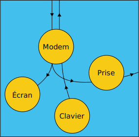
État connecté
Dans ce standard, il n'y a aucun status et aucune réponse à une quelconque demande pouvant être émise par le calculateur, via le modem ou la prise.
Le comportement des différents modules diffère de celui défini dans le standard Télétel et les possibilités de programmation de l'appareil par l'utilisateur ou le calculateur sont moins étendues.
L'écran
Le décodage écran est identique à celui du standard Télétel mode Mixte. L'usager peut choisir le mode page par la commande : Fnct E + P et revenir au mode rouleau par la commande : Fnct E + R
Il peut basculer en format 40 colonnes, par la commande : Fnct E + F
Le retour en format 80 colonnes s'effectue par la même commande. Toutes ces actions sont inutilisables par le serveur.
157
Le clavier
Exceptées les touches de fonction du Minitel, le fonctionnement du clavier est identique au standard Télétel mode Mixte ; le codage des touches de gestion du curseur et d'édition correspond uniquement à des séquences CSI.
L'utilisateur peut verrouiller le clavier alphabétique en majuscules par la commande : Fnct C + M et revenir en minuscules par la même commande.
Deux séquences CSI permettent de bloquer et débloquer le clavier :
blocage : CSI 2 h
déblocage : CSI 2 l
Le modem
L'utilisateur peut commander la connexion en mode opposé, par la commande : Fnct M + R
La prise
Les différentes vitesses sont programmables par l'utilisateur de la même façon qu'en standard Télétel. Les commandes sont :
Pour 300 bauds : Fnct P + 3
Pour 1200 bauds : Fnct P + 1
Pour 4800 bauds : Fnct P + 4
L'inhibition de la prise s'effectue de la même façon : Fnct P + I mais, par défaut en connecté, la prise est déjà dans l'état PI.
Remarque
Les transitions du standard Télétel au standard Téléinformatique agissent sur l'état PI ; cependant, aucune séquence de type SEP 0x54 n'accompagne ces basculements, quel que soit l'état du fil PT lors de ces transitions.
La copie d'écran
L'activation est effectuée comme en standard Télétel grâce aux commandes :
Fnct I + A pour une copie avec le jeu américain
Fnct I + F pour une copie avec le jeu français
La copie est permise en local comme en connecté, la prise étant inhibée ou non.
Une séquence CSI permet de commander par le modem ou la prise (en local uniquement), la copie d'écran vers la prise : CSI, 0x69.
La progammation du terminal
Passage au standard Téléinformatique
avec jeu américain : Fnct T + A
avec jeu français : Fnct T + F
Chaque action a pour effet de mettre le terminal dans des conditions standard, c'est-à-dire :
158
l'écran est effacé, y compris la rangée 00. Le format est de 80 colonnes ;
le curseur est positionné en rangée 01, colonne 01 ;
le mode rouleau est actif ;
les attributs de caractère sont réinitialisés ;
l'inhibition de la prise est réinitialisée (non inhibée en local, inhibée en connecté) ;
l'écho local est réinitialisé suivant l'état local ou connecté ;
le clavier est en mode minuscule et n'est pas bloqué.
Ces commandes sont sans effet sur la vitesse de la prise, et sur l'état
dans l'état local, permet de couper l'écho local, lorsque l'équipement branché sur la prise péri-informatique assure l'écho des caractères frappés au clavier ;
dans l'état connecté, permet de réaliser l'écho local lorsque le serveur n'assure pas l'écho des caractères frappés au clavier.
le retour dans le fonctionnement initial s'effectue par la même commande.
159
L'écran
160
Caractéristiques générales
Le standard Téléinformatique permet d'exploiter le Minitel dans un format de 25 rangées de 40 ou 80 caractères.
les rangées 01 à 24, dont les règles de codage font appel à la norme ISO 6429.
Dans la suite de ce chapitre on examinera exclusivement les caractéristiques de la deuxième zone (rangée 01 à 24).
Le comportement de la rangée 00 est identique à celui décrit en mode Mixte (partie 2, chapitre 2 paragraphe 2) lorsque le format de l'écran est de 80 colonnes, et identique à celui décrit en mode Vidéotex (partie 2, chapitre 2 paragraphe 1), lorsque le format de l'écran est de 40 colonnes.
Attribults disponibles
Lorsque le format est de 80 colonnes.
Un caractère est déterminé par sa forme et sa présentation, définie par un ou plusieurs attributs de visualisation. La couleur du caractère est proche du blanc (80% ou 60% de luminance), la couleur du fond est le noir ; il est impossible de changer ces couleurs.
Les attributs disponibles sont les suivants :
le clignotement : les points du caractère sont affectés alternativement de la couleur du caractère et de la couleur du fond. La fréquence du clignotement est de l'ordre de 0,5 Hz ;
l'inversion de fond (ou vidéo inversée) : les points du caractère deviennent des points du fond et inversement. La phase du clignotement est aussi inversée ;
le soulignage : la dernière ligne de l'emplacement de caractère est occupée par une barre continue. Tous les caractères visualisables peuvent être soulignés ;
la surintensité (ou surbrillance) : la couleur de caractère est alors le blanc (100% de luminance).
Un caractère peut posséder un attribut, ou toute combinaison de ces quatre attributs.
Lorsque le format est de 40 colonnes.
Dans ce cas aucun attribut n'est disponible.
Initialisation de l'écran
Lors du passage du standard Télétel au standard Téléinformatique, ou lorsque l'utilisateur bascule du standard Téléinformatique avec jeu de caractères français au standard Téléinformatique avec jeu de caractères américain (ou inversement), l'écran se trouve dans les conditions suivantes :
la page est effacée et le format est de 80 colonnes;
le curseur est visualisé par un tiret clignotant positionné en rangée 01, colonne 01. Il est impossible de commander son extinction ;
le mode rouleau est actif ;
les caractères sont visualisés en blanc sur fond noir, non soulignés, non surbrillants, non clignotants ;
Lorsque l'utilisateur modifie le format de l'écran (choix de 40 ou 80 colonnes), celui-ci est réinitialisé de la même manière que ci-dessus, en tenant compte du format désiré.
161
Caractéristiques de codage
Généralités
Une page écran est transmise sous la forme d'une succession de codes décrivant les caractères visualisables, leurs attributs de visualisation et leur emplacement dans l'écran. Le vocabulaire se compose de 128 codes différents dont les noms avec leur signification propre sont conformes à la norme NF Z 62-010.
Chacun des 128 codes possibles est représenté sous forme binaire par un mot de 8 bits (7 bits utiles et 1 bit de parité).
Les tableaux 1 et 2 représentent les 128 codes possibles : chaque tableau comporte 16 rangées numérotées de 00 à 15 et 8 colonnes numérotées de 00 à 07. Le code sur 7 bits d'un caractère est obtenu en prenant le numéro de colonne pour les 3 bits de poids fort et le numéro de rangée pour les 4 bits de poids faible.
Les caractères appartenant aux colonnes 00 et 01 sont appelés "caractères de contrôle." Ils forment le jeu noté C0.
Les caractères appartenant aux colonnes 02 à 07 représentent les caractères visualisables, et forment les jeux notés G0 et G1.
Les fonctions de commande définies par la norme ISO 6429 sont obtenues en combinant des caractères du jeu C0 avec des codes des colonnes 02 à 07.
Représentation des fonctions de commande de la norme ISO 6429
Fonctions de commande appartenant au jeu C1
Ces fonctions sont représentées par une séquence d'échappement à 2 caractères, conformes à la norme ISO 2022, de type ESC Fe, où Fe est représenté par un caractère des colonnes 04 ou 05.
Le Minitel 1B interprète 3 séquences de ce type (paragraphe 4.5) en plus de l'introducteur de séquence de commande noté CSI.
Remarque
Ce jeu C1 est différent de celui défini en mode Vidéotex.
Fonctions de commande représentées par des séquences de commande
Structure générale
Une séquence de commande comprend l'Introducteur de Séquence de Commande (appelé CSI), suivi d'un ou plusieurs caractères qui identifient et paramètrent la fonction de commande. La fonction de commande CSI est un élément du jeu C1 codé par ESC, 0x5B.
Le format d'une séquence de commande est: CSI P1...Pn I1...Im F
P1...Pn représentent des paramètres et sont des caractères de la colonne 3 ;
I1...Im sont des caractères intermédiaires qui identifient, avec le caractère final "F," la fonction de commande. Ils appartiennent à la colonne 2 ;
"F" est le caractère final qui identifie la fonction de commande. "F" appartient aux colonnes 4, 5, 6 ou 7, exceptée la valeur 0x7F.
Les chaînes de paramètres :
une séquence de commande peut contenir plusieurs paramètres P1 à Pn. Ils constituent alors une chaîne de paramètres, qui peut contenir une ou plusieurs sous-chaînes dont chacune représente la valeur d'un paramètre.
chaque sous-chaîne est composée d'un ou plusieurs caractères parmi 0x30 à 0x39, représentant les chiffres de 0 à 9.
162les sous-chaînes de paramètres sont séparées par le caractère 0x3B.
dans chaque sous-chaîne de paramètres, le caractère 0x30 placé en tête de la sous-chaîne n'est pas significatif et peut être omis.
si la sous-chaîne de paramètres commence par le caractère 0x3B, une sous-chaîne de paramètres vide est supposée précéder le séparateur. De même, si la chaîne de paramètres se termine par le caractère 0x3B, une sous-chaîne de paramètres vide est supposée suivre le séparateur. Si la chaîne de paramètres contient des caractères 0x3B successifs, des sous-chaînes de paramètres vides sont supposées exister entre les séparateurs.
si la fonction de commande possède plus d'un paramètre et si quelques sous-chaînes de paramètres sont vides, les séparateurs (0x3B) doivent encore être présents.
une sous-chaîne de paramètres vide ou composée uniquement de caractères 0x30 représente une valeur par défaut qui dépend de la fonction de commandes.
Les types de paramètres :
paramètres numériques : dans une séquence de commande comprenant des paramètres numériques, chaque sous-chaîne de paramètres qui a une valeur non nulle représente une quantité en notation décimale.
paramètres sélectifs : dans une séquence de commande comprenant des paramètres sélectifs, chaque sous-chaîne de paramètres, bien qu'exprimée en chiffres, n'est pas quantitative, c'est-à-dire ne représente pas une quantité en notation décimale. Chaque valeur correspond à celle des actions que la fonction de commande peut réaliser.
Nombre de sous-chaînes de paramètres interprétées par le terminal
Le nombre maximum de sous-chaînes est limité à deux dans le cas du terminal RTIC, et à une dans le cas des terminaux TELIC et MATRA, sauf dans le cas de la commande de positionnement absolu du curseur (CUP) où deux sous-chaînes de paramètres numériques sont reconnues.
Fonctions de commande de type ESC Fs
Ce sont des séquences d'échappement à deux caractères, conformes à la norme ISO 2022, de la forme ESC Fs, où Fs est représenté par un caractère des colonnes 6 ou 7. Ces fonctions de commande ne font pas partie du jeu C1.
Le Minitel 1B interprète une séquence de ce type (paragraphe 4.5).
Tableaux des codes de contrôle et des caractères visualisables
Les tableaux 1 et 2 représentent les 128 codes disponibles et indiquent pour les caractères visualisables (colonnes 2 à 7) les différentes représentations sur l'écran, suivant que le jeu américain ou le jeu français soit choisi.
163
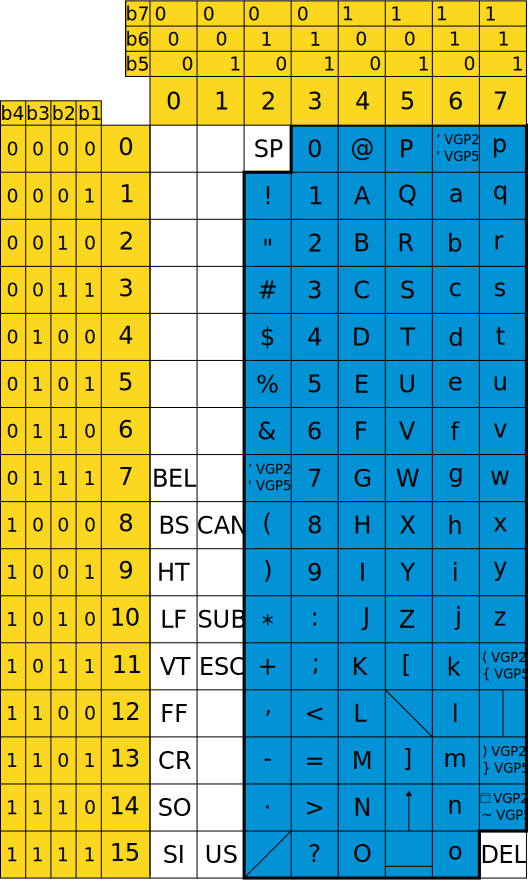
Tableau 1 - Jeu C0 + jeu américain (G0)164
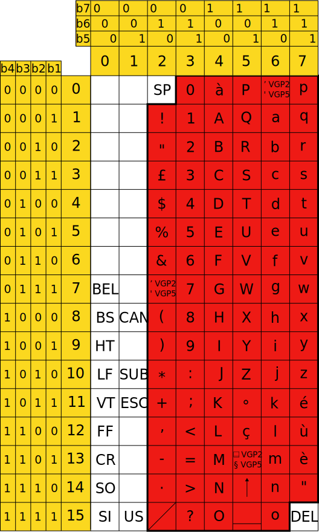
Tableau 2 - Jeu C0 + jeu français (G1)165
Codage des attributs de visualisation
Les attributs de visualisation sont codés grâce à la séquence de commande :
CSI Ps m (0x1B, 0x5B, 0x3X, 0x3Y, 0x6D) où Ps représente un paramètre sélectif désignant l'attribut choisi.
Les valeurs des paramètres possibles exprimées dans le système décimal sont regroupées dans le tableau suivant :
Valeur de Ps
Attribut
0
aucun attribut
1
surintensité
4
souligné
5
clignotant
7
inversion de fond (négatif)
22
intensité normale
24
non souligné
25
non clignotant
27
fond normal (positif)
Ces attributs sont redéfinissables au niveau de chaque caractère.
Ces séquences sont filtrées et non interprétées lorsque le format de l'écran est de 40 colonnes.
Codage des attributs de visualisation
Les fonctions de mise en page permettent :
de positionner le curseur (position courante d'écriture) sur l'un des emplacements de caractères de l'écran ;
d'effacer des zones dans l'écran, ou tout l'écran ;
d'insérer ou de supprimer des caractères ou des rangées.
Fonctions de mise en page codées par un caractère du jeu CO.
Code de C0
Interprétation
BS (0x08)
Déplacement du curseur d'une position vers la gauche. Pas de débordement lorsque le curseur est en colonne 1.
HT (0x09)
Déplacement du curseur vers la droite par pas de 8 emplacements de caractères. Pas de débordement en fin de rangée.
LF (0x0A)
Déplacement du curseur vers le bas d'une position. Lorsque le curseur est sur la rangée 24, ce code provoque un retourn en rangée 1 colonne courante quand l'écran est en mode page, et un effet de rouleau quand l'écran est en mode rouleau.
VT (0x0B)
Effet identique à LF.
FF (0x0C)
Effet identique à LF.
CR (0x0D)
Ramène le curseur en colonne 1 de la rangée suivante.
166
Fonctions de mise en page codées par une séquence du jeu C1.
Séquence jeu C1
Nom mnémonique
Interprétation
0x1B 0x44
IND
Déplace la position active vers la première position de caractères correspondante de la rangée suivante (Effet identique à LF).
0x1B 0x45
NEL
Déplace la position active vers la première position de caractère de la rangée suivante. (Effet identique à RC LF).
0x1B 0x4D
RI
Déplace la position active vers la position de caractère correspondante de la rangée précédente. Lorsque la position active est sur la rangée 01 ce code provoque un retour en rangée 24 quand l'écran est en mode page, et un effet de rouleau quand l'écran est en mode rouleau.
Fonctions de mise en page codées par une séquence de commande.
Remarque
Dans ce tableau qui suit en pages 167 et 168 Pn, Pr Pc sont des paramètres numériques ; Ps est un paramètre sélectif.
Séquence de commande
Nom mnémonique
Interprétation
CSI Pn A (0x1B 0x5B Pn 0x41)
CUU
Déplace le curseur vers le haut de n rangées. Arrêt en haut de l'écran. Valeur par défaut de n = 1.
CSI Pn B (0x1B 0b5B Pn 0x42)
CUD
Déplace le curseur vers le bas de n rangées. Arrêt en bas de l'écran. Valeur par défaut de n = 1.
CSI Pn C (0x1B 0x5B Pn 0x43)
CUF
Déplace le curseur vers la droite de n colonnes. Arrêt au bord droit de l'écran. Valeur par défaut de n = 1.
CSI Pn D (0x1B 0x5B Pn 0x44)
CUB
Déplace le curseur vers la gauche de n colonnes. Arrêt au bord gauche de l'écran. Valeur par défaut de n = 1.
CSI Pr ; Pc H (0x1B 0x5B Pr 0x3B Pc 0x48)
CUP
Positionnement absolu du curseur. La position active est déplacée vers la rangée r et la colonne c. Les valeurs par défaut (1, 1) du couple (c, r) déterminent la position dite "Home"
167CSI Ps J (0x1B 0x5B Ps 0x4A)
ED
Commande d'effacement sur l'affichage. Ps est un paramètre sélectif dont la valeur décimale par défaut est 0 :
Ps = 0 : effacement depuis la position du curseur incluse jusqu'à la fin de la page ;
Ps = 1 : effacement depuis le début de la page jusqu'à la position du curseur incluse ;
Ps = 2 : effacement de toute la page. La position active n'est pas modifiée par cette commande.
CSI Ps K (0x1B 0x5B Ps 0x4B)
EL
Commande d'effacement dans une rangée. Ps est un paramètre sélectif dont la valeur décimale par défaut est 0 :
Ps = 0 : effacement depuis la position du curseur incluse jusqu'à la fin de la rangée ;
Ps = 1 : effacement depuis le début de la rangée jusqu'à la position du curseur incluse ;
Ps = 2 : effacement de toute la rangée. La position active n'est pas modifiée par cette commande.
CSI Pn @ (0x1B 0x5B Pn 0x40)
ICH
Prépare l'insertion de n caractères à partir de la position du curseur en effaçant le caractère où est le curseur et les n -1 caractères situés à sa droite. Les précédents contenus de la position active et des caractères adjacents sont décalés vers la droite. Le contenu de n positions de caractères à l'extrémité de la partie décalée est perdu. Cette séquence est interprétée par les terminaux RTIC uniquement.
CSI 4 h (0x1B 0x5B 0x34 0x68)
SM4
Début du mode insertion de caractères : l'affichage provoque le décalage des caractères se trouvant à sa droite. L'effet est limité à la rangée. Les caractères en dernière colonne sont perdus : pas de débordement.
CSI 4 l (0x1B 0x5B 0x34 0x6C)
RM4
Arrêt du mode insertion de caractères.
CSI Pn L (0x1B 0x5B Pn 0x4C)
IL
Prépare l'insertion de n rangées en plaçant dans l'état effacé la rangée active et les n-1 rangées suivantes. Les précédents contenus de la rangée active et des rangées adjacentes sont décalés et écartés de la rangée active. Le contenu de n rangées à l'extrémité de la partie décalée est perdu. Le curseur revient en colonne 1 de la rangée active.
168CSI Pn M (0x1B 0x5B Pn 0x4D)
DL
Suppression de n rangées. Le contenu de la rangée active et des n-1 rangées suivantes est supprimé. Le contenu des rangées adjacentes est décalé vers la rangée active. Le curseur revient en coloee 1 de la rangée active.
CSI Pn P (0x1B 0x5B Pn 0x50)
DCH
Suppression de n caractères. Le contenu de la position active et des n-1 positions suivantes est supprimé. Le contenu des positions actives adjacentes est décalé vers la position active. La position active pas modifiée.
Autres fonctions de mise en page : Contexte Ecran
ESC 7 (0x1B 0x37) : mémorise la position active, les attributs courants et le jeu de caractères.
ESC 8 (0x1B 0x38) : restitution de la position active, des attributs et du jeu de caractères sauvegardés lors de la réception de ESC 7. S'il n'y a pas eu mémorisation préalable, le contexte suivant est rendu :
position du curseur en rangée 01, colonne 01 ;
les attributs sont inactifs ;
le jeu américain (GO) est actif.
Retour à l'état initial
ESC c (0x1B 0x63) : met le terminal dans son état initial avec :
effacement de l'écran, rangée 00 comprise ;
format 80 colonnes ;
position du curseur en rangée 01, colonne 01 ;
jeu de caractères américain (G0) ;
attributs inactifs.
Accès à la rangée 00
L'accès à la rangée 00 se fait exclusivement par une séquence de type US, 0x40 0xXY où 0xXY peut prendre les valeurs 0x41 à 0x7F.
Les déplacements curseur à l'intérieur de la rangée 00 au delà de la colonne 63 se font par l'intermédiaire des codes HT et BS.
Le retour de la rangée 00 vers la rangée courante située entre les rangées 01 et 24 se fait exclusivement grâce au code LF La position active, les attributs courants ainsi que le jeu de caractères courant sont restitués.
169
Autres fonctions
Fonctions particulières codées par un caractère du jeu C0.
Code de C0
Interprétation
NUL (0x00)
Caractère de bourrage. Ignoré par l'écran. Ne provoque pas de resynchronisation.
BEL (0x07)
Provoque l'émission d'un signal sonore.
SO (0x0E)
Passage au jeu français (accès à G1).
SI (0x0F)
Passage au jeu américain (accès à G0);
XON (0x11)
Permet la reprise de la copie d'écran si celle-ci a été interrompue par le caractère XOFF. Ce caractère n'est interprété que s'il provient de l'équipement branché sur la prise péri-informatique.
XOFF (0x13)
Permet d'arrêter la copie d'écran. Ce caractère n'est interprété que s'il provient de l'équipement branché sur la prise péri-informatique.
CAN (0x18)
Affiche le symbole d'erreur (pavé plein) et s'il est reçu à l'intérieur d'une commande introduite par ESC, annule cette commande.
SUB (0x1A)
Effet identique à CAN.
ESC (0x1B)
Introduit une séquence de commande.
Fonctions particulères codées par une séquence de commande.
Séquence de commande
Nom mnémonique
Interprétation
CSI 2 h (0x1B 0x5B 0x32 0x68)
SM2
Blocage du clavier.
CSI 2 l (0x1B 0x5B 0x32 0x6C)
RM2
Déblocage du clavier.
CSI i (0x1B 0x5B 0x69)
MC
Commande d'impression d'écran. Cette commande est sans effet lorsqu'elle vient de l'équipement périphérique branché sur la prise péri-informatique et que le terminal est en local.
CSI ? { (0x1B 0x5B 0x3F 0x7B)
Retour au standard Télétel mode Vidéotex.
Filtrages particuliers
L'écran filtre toutes les séquences de type ISO 2022 ou de type ISO 6429 non définies précédemment. De même, les codes du jeu C0 non explicités aux paragraphes précédents sont sans effet sur l'écran.
Comportement en cas d'erreur et resynchronisation
Un caractère erroné, détecté par la non conformité de la parité ou du format est affiché sous forme du symbole d'erreur (pavé plein possèdant les attributs courants).
À chaque réception d'un caractère du jeu C0 (caractère NUL excepté) le logiciel se resynchronise et interprète correctement ce dernier caractère.
170
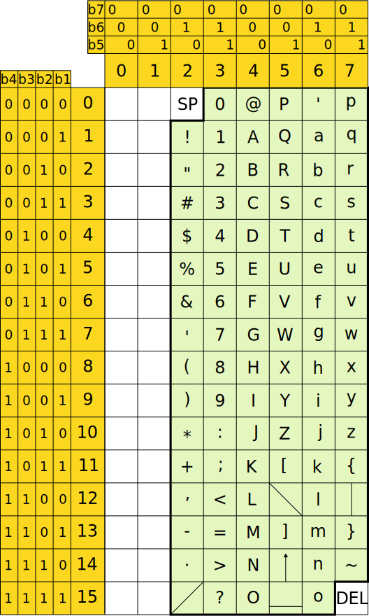
Tableau 3 Jeu américain (VGP5)
(avec VGP2 : ~ est remplacé par )
{ ---------------- )
} ---------------- (
171
Tableau 4 Jeu français (VGP5)
(avec VGP2 : § est remplacé par )
172173
Le clavier
174
Généralités
En standard Téléinformatique, le fonctionnement du clavier est voisin de celui du clavier en standard Télétel mode Mixte, en jeu américain ou français :
Il peut être bloqué et débloqué par des séquences CSI ;
Le codage des touches d'édition et de gestion du curseur est uniquement en CSI ;
Le codage des touches de fonction correspond au tableau du paragraphe 2.2. Seule la touche "Connexion/Fin" respecte le codage de l'état compatible PAD-X3 du standard Télétel :
Connexion/Fin : ESC 0x29 0x84 0x0D (vers le modem en connecté uniquement)
TS Connexion/Fin : ESC 0x29 0x34 0x0D (vers la prise en local uniquement)
Associée à la touche "Ctrl" la touche "Connexion/Fin" permet l'émission du Break de façon identique au standard Télétel ;
L'annulation d'une copie d'écran en cours est possible par appui sur la touche "Annulation."
Tableaux représentant les codes et séquences émis par le clavier
Code unique
Dans ces tableaux, la colonne au centre représente, soit le symbole visualisé sur l'écran en jeu américain ou en jeu français, soit le nom mnémonique dans le cas des caractères de contrôle.
X :
représente l'appui sur la touche sérigraphiée "X"
TS X :
représente la combinaison de la touche spéciale avec la touche marquée "X"
Ctrl X :
représente la combinaison de la touche marquée "Ctrl" avec la touche marquée "X."
175
Code émis (en Hexadécimal)
Caractère
Touche ou combinaison de touches
0x00
NUL
Ctrl '
0x01
SOH
Ctrl A
0x02
STX
Ctrl B
0x03
ETX
Ctrl C
0x04
EOT
Ctrl D
0x05
ENQ
Ctrl E
0x06
ACK
Ctrl F
0x07
BEL
Ctrl G
0x08
BS
Ctrl H
0x09
HT
Ctrl I
0x0A
LF
Ctrl J ou Ctrl :
0x0B
VT
Ctrl K ou Ctrl ;
0x0C
FF
Ctrl L
0x0D
CR
Ctrl M ou ⏎
0x0E
SO
Ctrl N
0x0F
SI
Ctrl O
0x10
DLE
Ctrl P
0x11
XON
Ctrl Q
0x12
DC2
Ctrl R
0x13
XOFF
Ctrl S
0x14
DC4
Ctrl T
0x15
NACK
Ctrl U
0x16
SYN
Ctrl V
0x17
ETB
Ctrl W
0x18
CAN
Ctrl X
0x19
EM
Ctrl Y
0x1A
SUB
Ctrl Z
0x1B
ESC
Esc
0x1C
FS
Ctrl ,
0x1D
GS
Ctrl -
0x1E
RS
Ctrl .
0x1F
US
Ctrl ?
176Code émis (en Hexadécimal)
Caractère
Touche ou combinaison de touches
Jeu américain
Jeu français
0x20
Barre espace
0x21
!
!
TS 1
0x22
"
"
TS 2
0x23
#
£
TS 3 ou #
£
Ctrl Annulation
0x24
$
$
TS 4
0x25
%
%
TS 5
0x26
&
&
TS 6
0x27
’
’
’ ou TS 7
0x28
(
(
TS 8
0x29
)
)
TS 9
0x2A
*
*
* ou TS :
0x2B
+
+
TS ;
0x2C
,
,
,
0x2D
-
-
-
0x2E
.
.
.
0x2F
/
/
TS ?
0x30
0
0
0
0x31
1
1
1
0x32
2
2
2
0x33
3
3
3
0x34
4
4
4
0x35
5
5
5
0x36
6
6
6
0x37
7
7
7
0x38
8
8
8
0x39
9
9
9
0x3A
:
:
:
0x3B
;
;
;
0x3C
<
<
TS ,
0x3D
=
=
TS -
0x3E
>
>
TS .
0x3F
?
?
?
1770x40
@
à
TS ’
0x41
A
A
TS A
0x42
B
B
TS B
0x43
C
C
TS C
0x44
D
D
TS D
0x45
E
E
TS E
0x46
F
F
TS F
0x47
G
G
TS G
0x48
H
H
TS H
0x49
I
I
TS I
0x4A
J
J
TS J
0x4B
K
K
TS K
0x4C
L
L
TS L
0x4D
M
M
TS M
0x4E
N
N
TS N
0x4F
O
O
TS O
0x50
P
P
TS P
0x51
Q
Q
TS Q
0x52
R
R
TS R
0x53
S
S
TS S
0x54
T
T
TS T
0x55
U
U
TS U
0x56
V
V
TS V
0x57
W
W
TS W
0x58
X
X
TS X
0x59
Y
Y
TS Y
0x5A
Z
Z
TS Z
0x5B
[
°
TS *
°
Ctrl 0
0x5C
\
ç
TS Annulation
Ç
Ctrl Correction
0x5D
]
_ VGP2 ou § VGP5
TS #
_ VGP2 ou § VGP5
TS Correction
0x5E
↑
↑
TS 0
0x5F
_
_
Ctrl 6
1780x60
’ VGP2 ou ' VGP5
’ VGP2 ou ' VGP5
Ctrl 5
0x61
a
a
TS A
0x62
b
b
TS B
0x63
c
c
TS C
0x64
d
d
TS D
0x65
e
e
TS E
0x66
f
f
TS F
0x67
g
g
TS G
0x68
h
h
TS H
0x69
i
i
TS I
0x6A
j
j
TS J
0x6B
k
k
TS K
0x6C
l
l
TS L
0x6D
m
m
TS M
0x6E
n
n
TS N
0x6F
o
o
TS O
0x70
p
p
TS P
0x71
q
q
TS Q
0x72
r
r
TS R
0x73
s
s
TS S
0x74
t
t
TS T
0x75
u
u
TS U
0x76
v
v
TS V
0x77
w
w
TS W
0x78
x
x
TS X
0x79
y
y
TS Y
0x7A
z
z
TS Z
0x7B
( VGP2 ou { VGP5
é
Ctrl 1 ou TS Répétition
0x7C
|
ù
Ctrl 2
0x7D
) VGP2 ou } VGP5
è
Ctrl 3 ou TS Envoi
0x7E
TODO VGP2 ou ~ VGP5
"
Ctrl 4
"
TS Guide
0x7F
DEL
DEL
Ctrl ←
179
Séquences émises par les touches de fonction et par la touche "Fnct" associée aux touches numériques
Touches ou combinaison de touches
Codes
Touches équivalentes d'un terminal Téléinformatique en mode application
Break vers le modem (connecté) ou vers la prise (local)
Break
180
Codes et séquences émis par les touches d'édition
Touche ou combinaison de touches
Code et séquence
↑
0x1B 0x5B 0x41
TS ↑
0x1B 0x5B 0x4D (Suppression ligne)
↓
0x1B 0x5B 0x42
TS ↓
0x1B 0x5B 0x4C (Insertion ligne)
→
0x1B 0x5B 0x43
TS →
Premier appui : 0x1B 0x5B 0x34 0x68 (Début insertion caractère)
Deuxième appui : 0x1B 0x5B 0x34 0x6C (Fin insertion caractère)
←
0x1B 0x5B 0x44
TS ←
0x1B 0x5B 0x50 (Suppression caractère)
Ctrl ←
0x7F (DEL)
⏎
0x0D (CR)
TS ⏎
0x1B 0x5B 0x48 (Home)
Ctrl ⏎
0x1B 0x5B 0x32 0x4A (Effacement page)
181
Liste des actions possibles grâce à la touche "Fnct"
Commande
Action
Clavier
Fnct C + M
Inversion minuscules/majuscules (flip-flop)
Écran
Fnct E + F
Inversion 80 colonnes/40 colonnes (flip-flop)
Fnct E + P
Passage de l'écran en mode page
Fnct E + R
Passage de l'écran en mode rouleau
Impression
Fnct I + A
Commande de copie d'écran vers la prise jeu américain
Fnct I + F
Commande de copie d'écran vers la prise jeu français
Modem
Fnct M + R
Commande d'opposabilité au modem active en local uniquement
Prise
Fnct P + I
Inhibition de la prise (flip-flop)
Fnct P + 1
Vitesse de la prise = 1200 bauds
Fnct P + 3
Vitesse de la prise = 300 bauds
Fnct P + 4
Vitesse de la prise = 4800 bauds
Terminal
Fnct T + A
Passage en standard Téléinformatique avec jeu américain
Fnct T + E
en local : coupe l'écho local
en connecté : établit l'écho local
Action en flip-flop
Fnct T + F
Passage en standard Téléinformatique avec jeu français
Fnct T + V
Retour en standard Télétel mode Vidéotex.
182183
Le modem
Introduction
Dans le standard Téléinformatique, le module modem assure les fonctionnalités suivantes :
la fonction modem proprement dite ;
la procédure de correction d'erreur ;
la détection de l'IAI.
La fonction modem
La connexion ne peut s'effectuer que par l'action de l'utilisateur sur la touche "Connexion/Fin."
La déconnexion intervient sur perte de porteuse supérieure à 440ms ± 10ms ou par l'enfoncement 2 fois consécutivement de la touche "Connexion/Fin."
La vitesse des échanges peut correspondre à l'état standard ou à l'état retourné mais le retournement doit être effectué en standard Télétel. L'utilisateur peut néanmoins, en standard Téléinformatique et en local, commander le passage dans l'état opposé à la connexion grâce à la commande :
Fnct M + R
Dans ce standard, aucune séquence n'accompagne les passages de l'état local à l'état connecté et réciproquement.
La procédure de correction d'erreur
Elle fonctionne comme dans l'autre standard. Cependant son activation (et son arrêt) ne peut s'effectuer qu'en standard Télétel.
La détection de l'indicateur d'appel en absence
Le mécanisme est identique au standard Télétel.
184185
La fonction de copie d'écran
Activation de la fonction copie d'écran
La fonction de copie d'écran en jeu américain est activée sur réception de la séquence de télécommande CSI, i (0x1B 0x5B 0x69) si celle-ci est reçue sur le modem.
Télécommander une copie d'écran en jeu français est impossible. Par contre l'utilisateur peut demander la copie d'écran en jeu français par la commande Fnct I + F et un jeu américain par la commande Fnct I + A.
Il n'est pas possible de télécommander la fonction copie d'écran par la prise.
Déroulement du processus
Il est conforme à celui définit dans la partie 1. Il est identique, que la prise soit inhibée ou non. Les informations reçues sur le modem continuent à être traitées conformément au standard Téléinformatique.
186187
Annexes
ANNEXE 1 - Identification des différents types de Minitel
Version logicielle
Modèles
Cb0 à Cb5
Modèles Télic à clavier ABCD et modem non retournable
Cc5
Modèle Télic à clavier AZERTY et modem non retournable
Cr0
Modèle Télic et Matra de type M1
Bc0
Modèle Radiotechnique à modem non retournable
Br0 à Br4
Modèles Radiotechnique de type M1
Cu2 à Cu4
Modèles Télic et Matra de type M1Bistandard sans alimentation sur la prise péri-informatique
Cu5 à Cu<
Modèles Télic et Matra de type M1Bistandard avecalimentation sur la prise péri-informatique
Bu0 et suivants
Modèles RTIC de type M1Bistandard avec alimentation sur la prise péri-informatique
Cd1 à Cd6
Modèles Télic de type M10 sans modem retournable
Cf0 à Cf1
Modèles Télix de type M10 avec modem retournable
Cw0 et suivants
Modèles Télix de type M10 Bistandard
En mode compatible PAD-X3, les identifications sont modifiées :
Cur à Cut pour Cu2 à Cu4
Cuu à Cul pour Cu5 à Cu<
Bup pour Bu0
Cwp pour Cw0
188
ANNEXE 2 - Glossaire
ASCII :
American Standard Code for Information Interchange. Codage normalisé pour la transmission d'information.
BAUD :
Durée minimum entre deux transitions 0 → 1 et 1 → 0 d'un canal en transmission asynchrone.
CCITT :
Comité Consultatif International pour le Télégraphe et le Téléphone.
CEPT :
Conférence Européenne des Postes et Télécommunications.
CRC :
Code de redondance cyclique. Dans une procédure de correction d'erreur, octet contenant le reste d'une division polynominale d'un bloc de données.
CSI :
Control Sequence Introducer : séquence de 2 octets : ESC 0x5B introduisant la majorité des commandes définies dans la norme ISO 6429.
Echo local :
L'écho local provoque simultanément l'affichage sur l'écran du caractère frappé au clavier et l'envoi du code correspondant vers la ligne.
IAI :
Indicateur d'Appel en Instance. Signal émis par les centraux publics avertissant l'utilisateur en communication avec un autre abonné ou avec le réseau Télétel qu'un correspondant l'appelle.
Prise Inhibée :
État de la prise péri-informatique dans lequel les seuls échanges de données concernent la copie d'écran.
Modem opposé :
Modem émettant à 1200 bauds et recevant à 75 bauds, état figé du modem dans lequel le retournement est impossible sans réception d'une séquence particulière.
Modem V23 :
Modem respectant la recommandation V23 du CCITT.
189PAD-X3 :
X3 norme internationale d'échange de données entre les concentrateurs téléinformatiques (PAD) et les terminaux asynchrones.
Parité paire :
Indique que le dernier bit d'un octet est à 1 ou à 0 pour que le nombre de bits à 1 de cet octet soit pair.
PCE :
Procédure qui a pour but de corriger les erreurs dues aux pertubations sur le réseau téléphonique en réception 1200 bauds.
Prise Hors Réseau Minitel :
Mode de fonctionnement équivalent à la coupure physique du fil PT de la prise péri-informatique.
Prise Inhibée :
État de la prise péri-informatique dans lequel les seuls échanges de données concernent la copie d'écran.
Prise Péri-informatique :
Connecteur de type DIN à 5 broches situé à l'arrière du Minitel sur lequel se branchent un ou plusieurs équipements appelés périphérique.
Protocole :
Ensemble des commandes interprétées par le Minitel en standard Télétel pour modifier son état et les chemins internes de données.
Réseau Minitel :
Ensemble de plusieurs périphériques reliés en chaîne et respectant les spécifications du "Système d'échanges" décrit dans les STURM.
Système d'Échanges :
Ensemble des règles de mise en œuvre du Réseau Minitel.